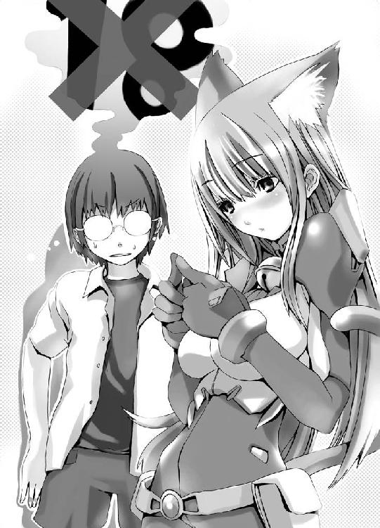

| あそびにいくヨ！ (MF文庫J) | |
| 神野 オキナ & 放電映像 | |
| メディアファクトリー (2003) | |
ＭＦ文庫Ｊ
あそびにいくヨ！
神野オキナ
カバー・口絵・本文イラスト●放電映像
編集●大喜戸千文
「お腹が空いているときに、ラヴィオリが出たら、たとえステーキを食べたくてもそれを食べなさい」
映画「旅情」より。
宇宙の彼方で大人しく待機した「彼ら」は、そのひとことをずっと、この半年近く、ある特定の方向へ発していた。
しかも、わざわざその惑星にあるいくつもの「方言」で。
だが、応答は無かった。
その惑星の上では、まだ通信手段が電波とケーブル（しかも銅か合成繊維で出来た程度の）ぐらいしかないのは判明していたので、「彼ら」は自分たち向けのいかなる電波も逃さないよう、密かにその惑星の衛星近くにまで受信装置を延ばしていたのに、だ。
普通なら怒るところだが、底抜けに「お人好し」な「彼ら」は逆に心配しはじめた。
ひょっとして、惑星規模の戦争でも始めたのではないか。
だが、観測結果は、小規模な小競り合いを確認しはしたものの、惑星の三割を越える戦火は確認できなかった。
ついで、メッセージそのものが検討されたが、これは「彼ら」が検討に検討を重ねた結果のメッセージであることがまた証明されたにとどまった。
なにしろ、たった一言である。
「あそびにいくよ」
さらに時間が経過した。
なおも返事は来ない。
心配になった「彼ら」は、いっこうに開かない扉をノックすることをやめ、中を「覗く」ことにした。
プロローグ 墓場で会ったらネコだった
☆
二〇〇Ａ年・七月十八日・アメリカ。
「所属不明機一、レーダー消失」
「推測消滅地点は？」
「日本上空であります」
「何ということか......大きさと速度は、このデータで正しいんだな？」
「はい、明らかにわが国のどの航空機にも該当しないデータであります」
「自己制動をかけたのも事実なんだな？」
「はい、そうであります、少佐どの」
「少佐どの、自分は白熊どもの赤い国がああなった以上、航空宇宙機で我がアメリカを越える国はないと思うのですが......」
「そうだ、我がアメリカのみが宇宙を制しておる」
「では、あれはやはり......」
「無線にも確か......」
断ち切るような声が、レーダー室に響いた。
「これは、厳重機密保持体制で対応する事態である」
「はっ」
☆
「暑いなぁ......」
嘉和騎央は、本来は移動司令部用の米軍装備が払い下げられた、野戦用の大テントの下、こればかりは普通の市販品であるビニールシートの上に腰を下ろし、ぼんやりとコーラの缶を口に運んでいた。
沖縄の夏である。
青い海、じりじりと焼かれたコンクリートの熱さが、シート越しにさえ伝わってくる。
前日までちょっとゲームに熱中しすぎた上、男にしては華奢な体つきの騎央、この暑さには思わずぼうっとなる。
それが、ありがたかった......このところジリジリと感じ続けている焦燥感にも似た気分を、多少なりとも忘れさせてくれるからだ。
漠然とした将来への不安。それが焦燥感にも似た気分の正体だ。
とはいえ、正体がわかっているからといって、どうなるものでもない。
「暑い......」
あまりこれ以上、この問題を考えたくなくなって、騎央は呟いた。
毛穴に突き刺さるような黄金の陽射しと、それを吹き飛ばすような、海からのいい風が吹いていた。
嘉和家の墓......沖縄の典型的な亀甲墓だ......は、海を見下ろす丘の上にある。
文字通り、亀の甲羅にも、女性の子宮の抽象化とも見える亀甲墓は、その懐にちょっとした小学校の運動場ほどの広大な中庭を有している。
嘉和の一族は人数が多く、さらに第二次大戦前後を挟んで海外移住した者も多いから、一度に集まるとこれぐらいの敷地は必要なのだ。
今日は嘉和の一族で五番目の長老の初命日。
周囲は賑やかだ。老若男女、様々な顔がある。
命日の集まりだというのにしんみりした風情はどこにもなく、ただひたすらに賑やかだ。何しろ、通夜の席でも「悲しみすぎると死んだ人があの世にいけなくなる」ということで笑いが絶えない、どころかややもすると三線の音色まで聞こえかねない沖縄である。
「夏だもんなぁ」
ぽけっとした表情で騎央は呟いた。湿度が高いうえにこの太陽なので、さっきから絶え間なくじんわりと汗が出るが、ひっきりなしに風があるので、木陰でじっとしている限りはさほど不快ではない。
どこからか、肉の焼ける匂いがしてきた。どうやら親戚の一部がバーベキューセットを持ち込んだらしい。
誰かが三線をかき鳴らし始め、渋い喉がそれに合わせて島唄を歌い始める。
この辺りになってくると、飛び交う言語も様々になってくる。日本語、沖縄方言、英語、エスペラント語、タガログ語、フィンランド語らしいものまで。
別に珍しい話ではない。嘉和の家に限らず、沖縄から海外に移住した者は、どういうわけか大抵一度は沖縄に来る。
それは本人の希望だったり、あるいは他人の薦めだったりするが、どんな形にせよ、一度沖縄に来るのは事実だ。
「よぉ、楽しんでるか？」
ぽん、と肩を叩かれた。
「あ、叔父さん」
真っ赤なアロハに白いバミューダという出で立ちの、真っ黒に日焼けした四十男が快活な笑みを浮かべた。
宮城雄一といって、騎央の叔父にあたる。苗字が違うのは、母親が嘉和の人間だったからだ。何を商売にしているのか、今一不明瞭な中年だが、それなりに裕福な上に、妙に面倒見が良くて、仕事の素性は誰も気にしていない。
「毎年毎年、よく飽きずにみんな集まりますねえ」
ほけっとした声のまま騎央が言うと、
「まぁ、うちは清明祭をしないからな」
薄いプラスチックの使い捨てコップに入ったビールを片手に、雄一は笑った。
「どだ、高校は慣れたか？」
「ええ、何とか」
とはいえ、もう高校受験は遥か昔の出来事のように思える。
あれだけ緊張し、苦労もしたというのに......だが、そういうものなのだろう。
「んじゃ、彼女とかはどうだ？ それとも、お隣のあの子......真奈美ちゃんだっけ？」
「ま、まだ無理ですよ」
いきなりの生々しい話にドギマギしながら、騎央はコークを飲み干した。
「それに、真奈美ちゃんは元からそういう関係じゃないし」
「何でだ？ お隣に住む幼馴染で、今でもちょくちょく遊びにくる、ってことになれば間違いないだろ？ 王道だよ、王道。最近の漫画とかゲームとか、そういうの王道じゃないのか？ 王道は大事だぞ、人生、そこを歩めるかどうかが勝ち負けを決める。うん」
「何の王道ですか」
さすがにここまで大げさだと苦笑いする余裕も出る。
「いかんぞー。Ｈだけなら大人になったってできるが、手を握っただけでドキドキ、なんてときめきは今から限定三年間だけのお楽しみなんだからな」
「お、叔父さんっ！」
そこまで言われて、少年は叔父がすっかり「出来上がっている」ことに気がついた。
「ナンパも純情な恋愛も、今のうちだぞ、今のうち」
うんうん、と何かに向かって頷きながら、叔父は笑う。
「ほれ、あそこにいる娘なんか、どうだ？」
指差す方向に目をやると、妙なものが座っていた。
「わ」
まず驚くのはその衣装だ。
真夏も盛りだというのに喉元までびっちりした、革だかビニールレザーだかのボディースーツに、はちきれそうな胸、メタリックな金属プレートを繋げた材のベルトが軽く巻かれたきゅうっとくびれた腰に、つりあうだけの長い手足......しかも髪の毛は赤く、前髪のあたりにはメッシュまで入っている。
顔立ちも整っていた。これで厳しい目つき顔つきをしていれば、まさに何処かの雑誌のモデルか何か、なのだが......。
「いやぁ、どうもありがとーございますー」
などとにこやかに頭を掻きながら紙コップを差し出している様は、どちらかといえば普通の学校の制服が似合いそうな、騎央とさして歳が離れているとも思えない少女の顔だ。
もっとも、それだけなら「妙な格好をした少女」であり「妙なもの」ではない。
黄金色の泡立つ液体を注いでもらうと、そのボディースーツの少女はくいっと一気に飲み干した。
喉元で、金色の鈴にしか見えないものが揺れて輝く。
「ぷはー。おいしい！」
満面の笑みをたたえてそう言う少女の頭で、三角形の物体が「ひこひこ」と動いた。
どう見ても猫の耳である。さらに、座り込んだヒップの後ろからは赤い色の太い毛糸を思わせるものが同じように「ひこひこ」と動いている。
尻尾だろう。
（えーと、最近ああいう玩具が流行なのかな？）
ぽりぽりと頭を掻いて、ふと気づく。
「おー、見事！」
と少女の横でビールの瓶をビニールシートの地面において手を叩いているのは、よりにもよって......。
「父さん、何やってるの？」
「お、騎央か、どうした？」
すでに叔父に負けず劣らずに出来上がっているのは、騎央の父親であった。
よく親戚からしみじみ「お母さんに似てよかったわねえ」と言われる、ぷくぷくに太った眉の濃い中年男は、どてっとビニールシートに座ったままへらへらと笑った。
「どうしたじゃないよ、未成年にお酒飲ませてどうするの!?」
「まぁ、いいじゃないか、お前も飲め飲め」
「もう、またお母さんに怒られるよ」
「大丈夫、今日は五番目の御爺ちゃんの命日だ、無礼講無礼講」
一般的な日本社会ならそういう場合、無礼講という言葉は使わないものだが、沖縄だとなんとなくそれが正しいノリとして認められてしまうのは何故なのか。
「まったく、酔うとウチの一族はノリが一緒になるんだから」
騎央がため息つきながら、「申し訳ないです、ご迷惑でしょ？」と赤い髪でボディスーツ姿の少女に言うと、相手は満面の笑みをたたえたまま、
「いえいえ、そんなことないですよー」
と首を横に振った。日本語は流暢で、
「この飲み物も美味しいし、この......えーと、この食べ物、なんて言うんでしたっけ？」
足元に置かれた紙皿の上に盛られた紫のプルプルな塊を、少女は不器用に握った箸で指差した。
「ああ。それは田芋の田楽ね」
雄一が補足する。
「そうそう、そのデンガク、も美味しいですし、昆布巻きとか......あと三枚肉！」
急に大声になると、少女は両手を豊満な胸の前で握り締め、目をキラキラと輝かせた。
「柔らかくってぷりぷりしてて、出汁が染みててまたこれが！ お肉は久しぶりなんで、とっても嬉しかったです！」
言葉どおり、本当に上機嫌な顔で、少女は目を細めた......大きな目が、まるで糸のように変わる。
もう、見ているこちらが思わず微笑んでしまうような笑顔。
当然、騎央も笑みを浮かべてしまうが、
（......どっから来たんだ、この子？）
同時に内心首をかしげた。
顔つき、体型を含めて見た目外国人だが、喋る言葉は日本人そのまんまだし、その割には「お肉は久しぶり」という言葉のイントネーションはどう考えてもここ数日とかの感じではなく、一ヶ月二ヶ月、という感じの切実な響きだ。
（ひょっとしてロシアの人なのかな......？）
今、地球上で日本に来る白人系の少女がそんなことを言いそうな国、となると騎央が思いつくのはこの程度の話だ。
何しろ一族郎党、本気で全員集まると一〇〇〇人以上とも言われている嘉和の一族なのだから、元ソビエト連邦に一人二人移住していてもおかしくはないが。
「えーと、わたし、エリスといいます」
少女は立ち上がると少年の前まで来、ぺこりと頭を下げて自己紹介した。
立ち上がると、少女は結構背が高い。ちょっと甘い匂いがして、それが目の前で揺れるふたつのたわわな水密桃。
「あ、ど、どうも、騎央って言います」
騎央も慌てて立ち上がって頭を下げる。
（あ、やっぱり外国の人なんだ）
ぼんやりと思っていると、
「まぁ、駆けつけサンバイだそうですから、どーぞ」
少女は思考の隙間をつく絶妙のタイミングで、いつの間にか手にした瓶の中身を傾けようとした。
「あ、はいはい」
慌てて紙コップの中身を飲み干し、騎央はその中身を受けると飲み干した。
飲み干してから、二つのことに気づく。
まずその一。少女が手にしているのはビールの瓶であること。
その二。自分がアルコールに極度に弱く、しかも前日徹夜をしているということ。
気づいた瞬間、くらりと天地が回り、騎央はその場に倒れこんだ。
（あ、やば......きっと、瘤のひとつも作っちゃうな）
くるくる回る風景を脳に感じながら、短い瞬間に騎央は思った。
（歯が折れたりとかしたらやだな......）
もう何を見ているのかわけが判らない。
「わわわっ！」
どこか遠くで声がして、何か、暖かいものに顔が触れる瞬間の感触を認識する寸前、騎央は意識を失った。
第一章 あなたはだあれと聞いてみた
☆
二〇〇Ａ年七月二十四日・オンラインゲーム「ギャラクティック・トレーダー５」内。
パソコンのモニタ内、夜の十二時に鳴り響く、重々しい鐘の音と共に、二頭身にディフォルメされたグラフィックを与えられた彼らは、芝生を踏みしめながら、「Ａ・Ｃ・クラーク記念碑」と彫られたプレートをはめ込まれた物体を中心に集まった。
アメリカの悪しき伝統である目の部分に穴の開いた白い三角頭巾を、頭からすっぽりとかぶり、足首まである白いローブをつけた彼らは、静かに高さ三・五メートル、幅一・五三メートル、厚みも含めるときっかり比率が一対四対九の、黒曜石を使った（という設定の）板の前に円を組んで立つと、ひとりずつ、そっとその表面に触れて短く「祈っ」た。
「祈りの言葉」を受けて、画面が暗転し、ディフォルメキャラたちは消えて、完全閉鎖型のグループ内チャットの画面が開く。
『何ということか』
「彼ら」の一人は呟いた。
『《ナショナル・インクワイラー》ならともかく、とうとうニューヨークタイムズにまで載っている！』
『恐ろしいことだ』
『このままではいけない』
もっとも年かさの人物が言った。
『日本支部には話を？』
『それは伺っています』
日本国旗のアイコンが明滅し、チャットルームに新たな参加者が入ってくる。
『これは由々しき事態です。全世界的に対応せねば』
丁寧な、タイプミスのない言葉が並ぶ。
『協力は確実ということでよろしいか？』
『了解です』
『では、我々からも情報と人員を......』
『感謝します。細かい部分はメールで。では全ては美しい接触のために』
日本からの参加者は急いでいるようだった。日本とアメリカの時差は十三時間。こちらが深夜の十二時なら向こうは午後一時。
ともなればそろそろ昼休みの時間は終わるのだ、と、チャット内メールが回る。
彼らの組織も、構成員も時間の贅沢を楽しめるほどの高い地位を持っているものはないので、すぐに納得した......さらに全員が、通常のアメリカ人ほどに自分の都合のみを振り回すような人間でもない。
『おお、そうだ全ては美しい接触のために』
『美しい接触のために』
『美しい接触のために』
『美しい接触のために』
☆
「......というわけで、どうもこの通信は全世界に向けて同時発信されたらしい、ということなんですが......さて、本物なんでしょうか？」
夏休み早々の朝には相応しい、少々ミステリアスな話題がテレビから流れていたが、金武城真奈美にしてみれば、それよりも大事なことがあった......昨日の夕方、酔っ払って運び込まれた騎央と、その「おまけ」に関することだ。
とりあえず、顔を洗って髪をとかし、薄いリップを塗ってから、チューブトップのブラの上から大き目のＴシャツ、下はジーンズスカートといういでたちに着替え、玄関でサンダルをひっかける。
腕に巻いた女性用のＧショックを見る。去年自転車で転んで傷が入っている以外はお気に入りなそれは、今日も正しい時間を刻んでいた。
「真奈美～！」
台所から母親が声をかけた。
「どこ行くの？」
「んー？ 騎央っちのトコだけど、何かあるのー？」
「ついでに、そこのソーメンチャンプルー、もってって頂戴」
見ると、靴箱の上にまだ温かいタッパーが置かれている。中にはソーメンと野菜、シーチキンを油で炒めた料理が詰まっていた。
「またこんなに作ったのー？」
言葉の後ろが少々上がり気味になる、沖縄県民独特のイントネーションで言いながら、露骨に真奈美は顔をしかめた。隣にいる嘉和騎央の家に何かを持っていけ、と母親が言う場合、それは間違いなく、真奈美の家の朝と昼の食事が同じものになる、という事実を指し示している。
「だって、静岡のおばさんからいっぱいお素麺貰ったんだもの」
当たり前のようにいう母親にため息をつきつつ、真奈美はタッパーを小脇に抱えて家を出た。
☆
「......」
アルコールから目覚めた時は、いつも映画のようだ、と騎央は思う。
飲んだ数秒後までの記憶は辛うじてあるが、次に意識が戻ると、もう朝だったり、夕方だったり......そのたびに「今日も一日無駄に過ごした」という自己嫌悪に駆られるのだ。
今回は、自宅のベッドの上だった。
まだぼやけた頭を振りながら、騎央は起き上がった。かけたままの眼鏡がズレていたので指先で元に戻す。
時計を見ると九時だった。外が明るいから、午前の、だろう。
耳を澄ましてみる。ドタバタという騒々しさはないから、父も母ももう空港へ向かっているのだと判る。
本土の大手と深いかかわりのある地元企業の商社マンである騎央の父は、母ともども、この数年東京暮らしを続けている。予定ではあと二年のはずだ。
（あーあ、行ってらっしゃいもいえなかったな）
ちょっと後ろめたい気分になった。
「......ふぅ」
ビール一杯で気絶とは、いくら体質とはいえ情けない。
思わずため息をつきながら胡坐をかこうとすると、ベッドの縁が左膝に当たった。
どうやらかなり端っこで眠っていたらしい。
「......ん？」
右膝からの感触が妙に柔らかいのに気づき、騎央はのろのろと首を動かして横を見た。いつものタオルケットではなく、白いシーツが盛り上がっている。
「......なんだ、これ？」
まだふわふわした声のまま呟いて、少年はシーツをめくってみた。
白くて赤いものが見える。
「？」
自分が目にしたものが何なのか認識できず、騎央は手を伸ばしてそれに触れてみた。
柔らかくて、あたたかい。赤い部分はさらさらとしていた。
「ん......んにゅ」
うめき声のようなものが聞こえ、その物体が寝返りを打った。
さらにシーツがずれて、にょっきりと伸びた二本の長い脚が見える。
さらに、赤い部分から三角形の部品がぺこんと立ち上がってひくひくと動き、脚のつけ根の裏っ側から赤い棒状の部品がくねくね曲がりながら手招きするように動いた。
「！」
瞬間、ようやく騎央の脳が、同じベッドの中にいる存在が何かを理解した。
赤い髪の、グラマラスな、猫の耳と尻尾のついた少女。
白、と認識したのは、彼女がワイシャツをまとっているからだ。
しかも......どうやら、それ以外、何もつけていないのは、尻尾のつけ根に滑らかな肌が見えることでも明らかだ。
「～～～～～～！」
騎央は声にならない悲鳴をあげて、ベッドから文字通り転げ落ちた。
フローリングの床にごすん、と派手に頭をぶつけるが、残念なことにアルコールほどの効果をあげることはできず、少年は痛みに頭を抱え込むにとどまった。
「むにゅ？」
その音と振動に眠りを覚まされたのか、猫耳尻尾つきの少女、と言われて百人が百人、千人が千人思いつくであろうことを口にしながら、少女はのそのそと起き上がった。
「あ、きおさん、おはよーございますぅ」
ぽややんとした笑顔を浮かべながら、赤毛の少女はぺこんと頭を下げた。
「き、君っ、な、何故ッ......いたたた」
相当強く頭を打ったのか、大声を出そうとするたびに痛む頭を抱え込む騎央を、少女は心配そうに見て、
「頭を打ったんですか？ じゃ、ちょっと待ってくださいね」
言うと、赤い髪の猫耳少女は、枕元においてあった金属ベルトを取り出し、取りつけられていたパウチのひとつを開けた。
中から、ずんぐりした携帯電話状の機械を取り出し、二つ折りにされていた本体を広げ、スイッチを入れる。
「ちょっと手をどけてくださいね」
言うと、少女は機械を騎央の頭に近づけた。
すぐにぴぴぴ、という可愛らしい電子音が鳴る。機械の表示を見ていたらしい少女の顔がわずかに曇った。
「ありゃ、でわ念のために......」
言いながら、少女は別のスイッチを入れた。
甲高いモーター音のようなものが響き、気がつくと、騎央の頭から痛みが去っていた。
「脳内出血の恐れもあったんで、ちょっと治療しときましたね」
「あ、ありがとう......？」
いくらなんでも脳内出血は大げさだろう、と思ったものの、痛みが去ったのは事実だったので、騎央はとりあえず礼を言った。
だが、すぐにワイシャツの合わせ目から見える、柔らかくも瑞々しい双球が目に飛び込んで来て、少年は目をそらす。
「どうかしましたか？」
敵意も皮肉も冗談も、欠片も入っていない本気の疑問の声で少女は言った。
「あ、あのちゃんと前、前のボタン、閉めて......っていうか、どうして僕のベッドにいるの！」
「えーと、ちょっとまってくださいね......んーと、えーと」
取り合あえず、んしょんしょと危なっかしい手つきでワイシャツの前を留めると、少女は疑問の方に答えた。
「騎央さんのお父様とお母様に聞いたら『好きなところで寝ていい』と言われましたので」
「あ、あのね、だったら、せめて起こしてくれないかな？ そしたら僕は応接間のソファで寝て......」
「どうしてですか？」
きょとんとした顔で、少女は首をかしげた。
「ど、どうしてって......そ、その男と女なわけだし、その、間違いがあったら......」
「間違い？」
ますます首を傾げる少女に、これから説明しなければならないことを頭に浮かべ、すぐに少年は頭を振って全てを追い出した。
「と、とにかく、ぼ、僕はトイレにいって来るから、その間に着替えてて！」
「あ、はい......？」
慌てて騎央は外へ出、後ろ手でドアを閉めた。
「いったい、何なんだ......あの子？」
ため息混じりに呟く。
それに重なるように、玄関のチャイムが鳴った。
悪い予感が、騎央の背中をそうっと撫でていく。
「きーおくーん！」
この場に、もっとも来て欲しくない少女が来たことを知らせる大声が、廊下に響いた。
☆
「んーと」
ベッドから降りると、猫耳尻尾つきの赤毛の少女はきょろきょろと周囲を見回した。
ベルトから、先ほど使ったものとは違う機械を取り出し、向けてみる。
「へえ......プラスティック樹脂とソフトビニールなんだ」
棚の上に並んだゲームのフィギュアと、プラモデルの分析結果を見ると、少女はじいっとその造形を見つめた。
「細かいなぁ......すごいなぁ......」
少女が特に注意を引かれたのは、コタツの下、布団からちょこんと顔を出して目を閉じている猫と、その横に転がって寝ている子猫のフィギュアだった。
精密そのものの原型と、それを彩色する、あるいは原型どおりに製造する技術力。どれを取っても奇跡のような精緻の極み、という代物である。
「司令とか、分析長とか、教授とか、見たら喜ぶだろうなぁ......」
つんつん、と指先で子猫をつつきながら、少女は目を細めた。
「......でも、わたしも欲しいですねぇ」
上機嫌な顔で、少女は小指の腹でそっと子猫の頭を撫でた。
ところで、宇宙人さえ感心したと知った時、果してこの商品の製造にかかわった人々はどんな顔をするのだろうか。
☆
騎央に対する目覚まし時計の意味もかねているのか、そういう癖なのか、嘉和の家の応接間のテレビは、朝はいつもつけっぱなしになっている。
真奈美が玄関に腰掛けてしばらく応接間のテレビを眺めていると、
「ややややぁ！」
あからさまに強張った笑顔を貼りつけて、二階から騎央が降りてきた。
「お、おはよう！」
「ん、おはよう！」
にこっと笑ったまま、真奈美は次の瞬間、言葉の出刃包丁を振りかざした。
「で、昨日一緒に帰ってきた女の子って、どこ？ 紹介してよ！」
化学反応のように瞬きの数十分の一の時間で、騎央の顔が強張った。
「い」
「ね、どんな子なの？」
「あ、い、いや、あ、あの子はちょっと変わってて......いや、その実はその、そ、そんな子なんていない......いや、いることはいるんだけど、それがその、つまり」
「ああ」
ぽん、と真奈美は手を叩いた。
「つまりアレなんだ、そっかー！」
「え？」
「アレじゃ、仕方がないわよね」
「え？」
「そうかそうか、良かったね騎央っち」
「あのー、真奈美さん」
少年は恐る恐る幼馴染の少女に尋ねた。
「どういう意味でしょうか？」
「え？ とってもこの文庫では書けないような、情熱的で濃厚でトレビアーンでセッシ・ボーンな夜だったのね。それで彼女は今おねむで起きてこられない、だから騎央っちが優しくモーニングコーヒーなんぞを運んでこよーとゆー」
「......」
少年は完全に黙り込み、少女は不思議そうな顔で覗き込んだ。
「どうしたの？」
「......どうしてそんなに下品なの？」
あまりにオーバー過ぎる表現に、どうやら我に返ってしまったらしい。だが、真奈美は気にも留めず、
「あ、失礼しちゃうわねー。下品なことしてるのは騎央っちの方でしょうが。トレビアーンでセッシ・ボーンなくせに」
「勝手に妄想しないの！」
「あはははー♪ 冗談だってば、冗談」
「......で、何の用？」
ジト目になって、騎央が問うた。
「あ、これ取りあえず。おじさんたち、もういっちゃったんでしょ？」
少女は小脇に抱えたタッパーを騎央に押しつける。
「朝食ぐらいは作ってるよ」
ぶすっとした顔で騎央が返すが、真奈美は知らん顔だ。
「ままま、取りあえず、どぞどぞ、ってことで」
「......調子いいなぁ」
ため息をつきながら、騎央はどうやらやり過ごせそうな気がして安堵していた。
ゲームや漫画の「幼馴染」という存在は大体優しく、控えめで、どこか一歩下がったところからフォローしてくれたり、毎朝起こしに来てくれたりするが、どうも真奈美はそういう「幼馴染」ではない。
圧倒的に騎央よりも地位が上なのだ。
彼女の前では嘉和騎央は幼馴染というよりも、どうもできのいい玩具というか、玩具代わりの弟というか。
いじめ、というレベルではないが家に来るたびにからかわれるというか、いいようにあしらわれるというか。
......まぁ、無理難題を真奈美に言われ、それに右往左往する騎央、という構図はかれこれ十年近く繰り広げられている構図だ。
唯一の救いは、これが二人っきりの時だけで、誰か第三者がいるときには絶対行われないし、真奈美もそれを口外しない、ということで、お陰で騎央は、人生で最も残酷な時期のひとつである中学校時代、いじめられるきっかけを与えられないで済んだ。
とはいえ、感謝する気にはなれないのだが。
「ま、それはそれ、明確に目的を持っている人間と、漫然と日々を過ごしている人との違い、ってことよ」
ふふん、と少女は胸をそらした。
クラスの中ではかなりトップに位置する胸が、ぶるんと揺れた。
「そういう問題じゃないような気がするけど」
いつもならその瞬間、真っ赤になって後ろを向いたり横を向いたりするはずの騎央だが、今回は不思議にまっすぐ真奈美を見詰め返した。
「う......騎央、あんた言うようになったわね」
少々調子が違うことに気づいて、真奈美が首をかしげた。
「とにかく、もう帰ってよ。僕も忙しいんだから」
こうなると、鼻白んだ顔をしていた真奈美のほうがむっとなった。
「何よ、その言い方！」
「あのー」
ひょこ、とその瞬間、腰までの真っ赤なロングヘアをなびかせた、外人の少女が階段の上から降りてきた。
しかも、
その少女は、猫の耳と尻尾までつけていて、素肌に（おそらく下に何も装着せず）ワイシャツ（男物。かなり大きいので騎央の父親のものと思われる）一枚で。
「ちょっといいでしょうか？」
少女はそっと上半身を折って、騎央と真奈美の間を覗き込むようにした。
ワイシャツの胸がゆさりと揺れる。
「ぶるん」ではなかった。「ゆさり」だった。
「！」
言い訳も、言い返すことも、ごまかす事はもちろん、なかった事にもできなくなった瞬間であった。
（うわ......）
一瞬のうちに、騎央の脳裏にこれから飛んでくる真奈美の様々な突っ込みと翻弄の言葉の衝撃、その覚悟を決めるために思わず目を閉じた。
だが、それは、来なかった。
「？」
騎央はともかく、真奈美もまた、凍りついていたのである。
ただし、こちらは意味合いが違う。
「が......外国産......」
微かな、悔しそうな響きの内容は騎央の耳には届かなかったが、真奈美が声を出したことで、少年は我に返った。
「な、何してるんですか！ 早く着替えてください！」
「えーと......あのですね」
赤毛の少女は、頭頂部にある猫の耳をぱたぱたとさせながら答えた。
「わたし、スーツを下に置いてあるんです......取ってきてもいいでしょうか？」
「あ、いや、そ、そうなんですか、わ、わかりました」
かくかくと頷いて、騎央は真っ赤になって背中を向けた。
「すみません、通りますね」
ぺこんと頭をさげて、まるで水が流れるように真っ赤な髪をした猫耳尻尾つきの少女は、騎央の後ろを通り、真奈美に挨拶して風呂場に消えた。
「..............................」
重々しい沈黙が少年と少女の間に落ちた。
「......変態」
ぽつり、と真奈美が言った。白い目が遠慮なく少年に向けられている。いつものように騎央をからかったりするための行為ではなく、明らかに年頃の少女の潔癖からくる蔑視の視線だった。
「ご、誤解だってば！」
少年は慌てて両手を振って否定した。さすがにこれはやり過ごす、というわけにはいかない類の話である。
「ねえちょっと、何が誤解？......いくらゲームや漫画が好きだからって、猫の耳に尻尾を、しかも何にも知らない外人さんにつけさせてサー......それであんなことやこんなことをするなんて......どう考えても変態っしょ」
「違うってば！」
本気で騎央は喚いた。
「絶対に違うって、何見てるんだよ真奈美ちゃん、あれ、両方ともちゃんと体から生えてただろ！」
再びノ沈黙。
ため息混じりに真奈美は、言い聞かせるように言葉をつむいだ。
「そういう下手な言い訳は止めれってばー。どこの世界に猫の耳と尻尾の生えた人間がいるってのよ」
「......いるんだからしょうがないじゃないか」
「またまたそんなことを言う......ねえ、騎央ってばさ、アニメとかゲームとか好きなのはいいけど、現実捻じ曲げるのは止めようよ」
非常に現実に立脚したまっとうな、だからこそ厄介な少女の意見である。
今度は騎央がため息をつく番だった。
「真奈美ちゃんは現実をちゃんと見てよ......」
「何よ！ 現実逃避してるほうが悪いんでしょう！ しかもあんな変態な格好させて、一晩中も！」
とうとう真奈美が怒り出し、少年もつられてとうとう睨み合いになった。
「それはそっちの勝手な妄想だろ！」
「妄想じゃなくて、事実と常識から導き出された推測でしょうが！」
こうなった場合、幼馴染という「男と女」というよりも個人対個人、という風に頭を切り替えやすい関係は歯止めが利かない。
勢いがついてしまったふたりの間に火花が散り、それが大爆発になる......寸前。
不意に、玄関の扉がスライドした。
「嘉和君！」
スライドドアが枠にあたるピシャリ、という音と共に険しい顔で入ってきたのは、眼鏡をかけた二十二、三ほどの、丁寧に梳かされた栗色の髪をし、びしっとスーツを着こなした女性だった。
「今の話、本当なの？」
顔立ちは整っているし、スタイルも悪くないのだが、黒ぶちの眼鏡と、灰色の野暮ったいスーツのおかげで、身体全体から一分の隙もなく放たれている「真面目」という名の放射線がより強化され、美貌よりも強烈な印象を他人に与えてしまうタイプといえた。
「あ、糸嘉州先生」
と、一瞬だけ騎央は緊張し、同じく真奈美は露骨に嫌な表情を浮かべかけて即座にかき消した。
糸嘉州マキといい、騎央たちの通う、市立牧志高校の古文教師だ。ちなみに、騎央とは彼の所属する映像部の顧問と生徒、という関係でもある。
「先生、どうしてここに？」
「来週の合宿......じゃなかった、ロケ旅行のことで相談しましょう、って言ったでしょ」
「ああ！」
ようやく騎央は納得する。
「でも、今はさっきの金武城さんの話のほうが大事だって、先生思うの」
必死に穏やかな表情を作ろうとしているのがありありと判る顔で、こめかみのあたりにひくひくと血管が蠢いている。
「あ、で、ですからあれは真奈美ちゃ......いえ、金武城さんの勝手な妄想です！」
「どうなの、金武城さん」
「ええっと......あの......その......」
正直な話、女生徒の間で、糸嘉州マキ教諭の評判は非常によくない。
四角四面で杓子定規、沖縄県民の癖に方言のひとつも言わないし、理屈ばかりで冗談も通じない。そのくせ下手に生徒に溶け込もうと、時折妙に物分かりがいい態度を取ろうとするところ（もっともそれは新任教師にありがちな、微笑ましい見当はずれの努力なのだが）がまた「イタ」い。
何よりも、この女教師が顧問になってから、騎央たち映像部が結構、いやかなり難儀している事実を真奈美は知っているから余計にいい感情は持っていない。
が、ここで今までの自分のことを否定するのもなんとなく面白くないのも事実だ。
「えーと、あのー」
結果、自分の思考をまとめるために、真奈美は言葉を濁した。
「それはその、つまりアレですよ、その会話を弾ませるためというか」
「どう聞いてもあれは二人とも喧嘩腰にしか見えなかったけど？」
「えー、つまり、幼馴染というものはですね、先生。会話を弾ませる、ってことに歯止めが時折利かなくなるものでしてぇ......」
どこか棒読み台詞の上の空で真奈美は言い訳を口から滑らせる。
「でも、嘉和君が異性と一つ屋根の下で過ごしたのは事実なのよね？ お父様もお母様もいない状態で」
「い、いえ、父と母はいました。今朝まで」
必死に騎央が言い訳をするが、マキは「それは疑わしい」という視線を、ボストンフレームの眼鏡越しに向ける。
「とにかく、その当事者とお話ししましょう」
勝手に納得した顔で、マキは勝手に決めてしまった。
「あのー」
そのとき、まるでタイミングを計ったかのようにひょっこりと、赤毛の猫耳尻尾つき少女が顔を出した。
「騎央さん、これでいいですか？」
長身の、見事なプロポーションの少女は、その肢体を余すところなくさらけ出すような、というよりよりも全裸よりも扇情的な、首からつま先まで覆うスキンタイトなボディスーツに、メタリックな幅広のベルトを締め、猫の耳としっぽをひこひこさせながら現れた。
「！」
今度はマキが凍りつく番だった。
「か......嘉和君！」
がっし、と少年の肩を掴んで揺さぶりながら、片手で赤毛の少女を指し示す。
「こ、高校生なのになんて破廉恥な！ アレは何ですかアレは！」
「あのー。わたし、物じゃないんですけど......」
「あ、ご、ごめんなさい。貴女のことじゃないの、貴女の頭とお尻にあるモノのこと」
「？」
「不純異性交遊だけでも問題なのに......アニメやゲームの見すぎ、やりすぎです！」
「いやあの先生」
「いいですか、学校にはこのことを伏せておきます。ですから、夏休み中に一度ご両親に......」
「あ、あの、あれは僕のせいじゃなくて、元々彼女には猫の耳としっぽがあるわけで」
「大人をバカにするのもいい加減にしなさい！」
マキの怒鳴り声に、思わず騎央は首をすくめた。
「学校生活には辛いこともあるかもしれないけど、こういう形で逃避しては駄目なの。いい？ 先生前にも言ったでしょ？ 世の中にはすばらしい物がいくつもあるって」
ついさっきまで真奈美が繰り広げていたのと同じ台詞をマキは言った。
騎央の言葉をさえぎり、真面目そのものの女教師は、いわゆる「いい話」を続けようとした。
「違いますよ、ちゃんと見てください。本当ですったら」
必死に訴える騎央の顔を見て、教師の顔から怒りが消え、今度は薄い憐憫の情が表れた。
「現実をちゃんと御覧なさい。確かに、遺伝子工学は発達しているけれど、人間の遺伝子を弄るところまでは行ってないし、仮に技術があったとしても、それは無理なの。彼女は外国の方のようだから、色々あってああいうコスチュームをしているかもしれないけれど、それはね、あくまでもコスチュームのパーツであって......」
「あ、これ本物ですよ」
うんうん、と赤毛の少女は頷いた。
「あなたも日本製アニメのファンなの？」
絶望的な叫びをマキはあげた。
「あのね、お願いだから現実に戻って。その猫耳としっぽがどれだけ出来のいい特殊メイクかは知らないけど、あなたから現実に戻らないと、この嘉和騎央君も現実には戻れないのよ」
「お疑いでしたら、ほら」
ちょっとかがみこむと、少女はマキの手をとり、頭頂部にある自分の耳に持っていった。
「....................................え？」
マキは言われるままに少女の耳に触れ、引っ張ったり撫で回しているうちに愕然とした顔になった。
「ほらー。本物でしょう？」
しばらく猫の耳を撫で回していたマキだったが、すぐに我に返り、ばっと少女の手を振り払って後ろへ飛びのいた。
「あ、......あなた、何者なの？」
のほほん、とした顔のまま、少女は満足げに胸を張った。
ゆさり、とぴっちりしたボディスーツに包まれた二つの果実が揺れ、喉元で金色の鈴がきらめいた。
「はい、宇宙人です。地球に調べ物のついでに遊びに来ましたぁ！」
第二章 居候は猫耳だった
☆
地球暦二〇〇Ａ年七月二十五日・太陽系近く。
「ありゃ」
広大な格納庫の中、素っ頓狂な声が上がった。
「あーあ、エリスのバカ、食料忘れてってる」
そう言ったのは猫の耳と尻尾のついた宇宙人の一人だった。
ただし、エリスとは対照的にこちらは「ちんちくりん」という印象の強い身体をしている。
身長はエリスの半分ほどしかないし、肉体的にも未発達だ。頭頂部の主耳と、顔の左右にある副耳にピアスのような黄色い識別票が揺れているのは、彼女の体内に遺伝子コントロールのための超微小機械が常駐している、という意味であり、特殊能力の保持者である、という意味でもあった。
首元にある「鈴」が銀色なのは、彼女が艦内要員であるという証明である。
彼女たちの仲間なら、外見が幼い理由がそれであると察し、純粋に敬意を表するに違いない......何よりも「努力」というものが「凄く大変なものである」という認識のゆきとどいた彼女たちの社会は、そういうものなのだった。
「チャイカ、どうしたの？」
別の、銀色の髪をした同僚が、格納庫の床を軽く蹴ってこちらへ来ながら声をかけた。
こちらは非常時には上陸要員に振り分けられるので、半分銀、半分金色の鈴を下げている。
「エリスのバカ、最終チェックの時に食料出しっぱなしにして、そのまま地球に行っちゃってるのよ」
「あれまぁ」
銀色の髪のほうは、どこか品のいい感じで、エリスよりもさらにおっとりした雰囲気を持っていた。
「今すぐ届けないと」
「無駄よ。もう一週間になるんだもの。今頃自給自足してるか、飢え死にしてるかよ」
「ひどいこと言うわねえ」
「大丈夫」
うん、とチャイカと呼ばれたブルネットの猫耳少女は真ッ平らな胸を張った。
「エリスのことだもの、きっと何とかうまくやってるわよ。そういう能力の持ち主だし」
「能力なのかしら、それ？」
「あら、幸運も悪運も、つきつめればその人間の能力なのよ」
「うーん」
人差し指を頬にあてて、銀色の髪の猫耳少女は考えたが、答えが出ないとすぐに思考を別のことに向けた。
「でも、自給自足ということは、食料合成機からじゃない食べ物を食べているのよねえ？」
「うん、そうだと思う」
こくん、とチャイカは頷いた。
「いいわねえ......恒星の光を浴びて、天然自然のものを食べて生きている動植物......」
うっとりとした顔で、銀色の猫は呟いた。
「鳥類、魚類、植物、爬虫類に哺乳類、きっとどれも美味しいでしょうねえ」
「そうだよねえ......」
同じものを想像したのか、チャイカもうっとりした顔で宙空を見上げる。
食料合成機はすでに外見も味も、ほとんど自然のものと区別がつかない程度に作成が可能になってはいるが、やはり独特の「味の違和感」がある。
まして、彼女たちのように船にいるのが長い「恒星間宇宙船乗組員」たちは、食い飽きてそういう違いが判るようになってしまう。
そんな彼女たちにとって、未知の、しかも自分たちとほとんど同じ存在が暮らす......つまり、自分たちとほとんど同じような生物がいて、それを食することの可能な星とは、文字通りの「未知の味」の塊でもあるのだ。
「見たこともない料理があるんでしょうねえ」
「見たこともないお菓子があるんだろーねー」
ふたりは申し合わせでもしたかのように唱和した。
「いーなー」
☆
コール二回で母親の携帯につながり、話をした。
「で、どうすればいいの？」
『大丈夫よ騎央、しばらく泊めてあげなさい』
一家の良心、常識の中枢であるところの騎央の母親は、あっさりと答えた。
「だ、大丈夫って......！」
「母さん昨日話したんだけどね」
若い頃は声優を目指したものの、イントネーションが抜けずに断念した、というのが嘘としか思えないほど綺麗な「本土人イントネーション」で母親は続けた。
『いい子だと思うのよ......お隣の真奈美ちゃんもいい子だけど、ここいらでひとつ、他の世界も見ておいたほうがいいと思うし』
「な、何考えてんの！」
『お父さんもエリスさんのこと、気に入ってるみたいだし......何よりもね、嘉和の大おばあちゃんたちが全員気に入ってるのよ』
「へ？」
騎央は思わずまじまじと受話器を見つめた。
『嘉和の大ばあちゃん』たちといえば、嘉和門柱の総本家にいる三人の老婆である。名前はナベ、カマド、ウシ（今となっては驚くようなネーミングだが、当時の常識として娘には家の大事なものの名前をつけていたのだ）。
三人ともとっくに一〇〇歳を越えているが、今でも元気に三人で那覇の首里で沖縄そばの店と兼業で沖縄ならではの民間霊能屋――いわゆるユタをやっている。
一族の中でも一部の人間には「目も合わせられない」といわれるほど「怖い」所もあるが、騎央は妙に可愛がられていて、何かと気にかけてくれている。
「それ、本当？」
『ええ、そうよ......ナベ婆ちゃんなんか、「この子は絶対キー坊と一緒に暮らしたほうがいい」って凄い乗り気でね』
ちなみに、騎央なのでキー坊、と呼ばれている。
「............父さんが酔っ払って連れ込んだんじゃないんだ」
騎央の父親は酒が入るとお調子者モードが全開になってしまい、結果として翌朝、小はどこかの酒屋のビールケース、大は薬局の前のマスコット人形や看板を持って帰ったり、見知らぬ浮浪者を家に連れ込んだりすることが、年に二回はある。
一度、どこで意気投合したのか、言葉も通じないアメリカ海兵隊の人間を装備ごと一小隊まるごと泊めてしまってちょっとした騒ぎになったこともあるくらいだ。
『あたり前でしょ？ 大体、そんなこと母さん、許さないわよ』
「そうだよね」
納得しながらも、どうにも騎央にはわからないところがあった。
「あのさ、でも......子供の教育上よくないとか、考えないの？」
『何言ってるのよ、この子ったら』
快活な笑い声が受話器から聞こえた。
『母さんがあんたを幾つで産んだと思ってるの？』
「......」
『あ、でもね、無理矢理は駄目よ、絶対に。あくまでも合意の上でね、父さんと母さんみたいに。愛がないと不毛だからね』
「あのねえ......相手、宇宙人なんだよ？」
『いいじゃないの。地球の運命かけての鬼ごっこで始まる恋もあることだしね』
「......？」
少年は首をかしげ、すぐに状況を把握した。
つまり、しばらく自分はあの猫耳少女と同棲状態になる、ということらしい。
あれこれ考え、即座に抜け目なく、もっとも重要な問題を口にする。
「......あの、お金は？」
『ああ、大丈夫。多めに入れとくから。八万ぐらい余計に入れておけば十分でしょ？』
「......うん、じゃあ」
受話器を置くと、さっそく赤い髪の猫耳少女が騎央の顔を覗き込むようにした。
「あの、で、どうなったんでしょ？」
「うん、大丈夫、しばらくいていいって」
「そうですか」
よかったー、と少女は胸を撫で下ろし、にっこりと笑った。
思わずその笑顔に微笑み返しながらも、つい数分前の出来事を思い出し、ついで、これから起こるであろうことを連想して騎央は少しだけ途方にくれた。
☆
これより少し前。
「う、うちゅうじんですってええっ！」
糸嘉州マキの声は家の中を震わせた。
「ば、バカなことをいうんじゃありません！ どこの世界にそんな格好の宇宙人がいますか！ もう二十一世紀なんですよ！」
間違いなく、今の日本......いや、世界のどこでも、この少女を見たら、おそらく同じ怒鳴り声をあげる人間がほとんどだろう。
「わたしも最初びっくりしましたよー」
うんうん、と頷きながら赤い髪の猫耳尻尾つき少女、エリスは答えた。
「貴方たちを見たとき、私たちも最初、何かの冗談だと思いましたもん。評議会なんか揉めに揉めて三年も外周惑星で足踏み状態でした」
「ばっ、バカにしてっ！」
「いや、本当、わたしもそう思いました。この地域なんか翻訳機なしで会話できるし」
マキが何に対して怒っているのかを理解しているのかいないのか、少女は腕を組んでうんうんと頷いた。
「......」
がぎぎぎぎ、という音がしそうなほど歯を食いしばった物凄い形相でマキはエリスをにらみつける。
「あれ？ どうかなさったんですか？ ええっと......」
それ以上エリスがマキに話しかけると何かが起こりそうだと察知した騎央が言葉をさえぎって答えを教える。
「い、糸嘉州先生だよ」
「ああ、そうですか......えっと、大丈夫ですか、糸嘉州先生？」
「しょ、証拠を見せなさいよ、証拠を！」
今にもこめかみから「ぶしゅー」と血を吹きそうなぐらいにピリピリしながらマキが噛みつくような口調で詰問する。
「そうですねえ......」
ちょっと少女は小首をかしげて考えたが、腰のベルトに取りつけたパウチから甲高い電子音が響いて、中断された。
「！」
エリスの顔が少々硬くなり、ボディスーツの首もと、チョーカーっぽく処理されたデザインの部分に下がっている、金色の「鈴」にしか見えないものに触れると、空中に二頭身の......どう見ても縫いぐるみの動物にしか見えない代物が現れた。
（熊......いや、熊じゃないよ......ね？）
騎央が首をかしげているのをよそに、エリスと縫いぐるみは会話を始めた。
「どうしたの？ ルーロス」
「えとですね」
舌ったらずな声ながら、縫いぐるみは切羽詰まった様子で、
「エマージェンシーです、船ですね、見つかりましたです」
「え？ カムフラージュしてたんでしょ？」
「肯定です。でも能動的カムフラージュではなかったのです」
「状況はどうなってるの？」
「繊維状なので包まれて、海面まで引き上げられてますです」
そのとき、真奈美が目を丸くして騎央の背後にある応接間のテレビを指差した。
「あ......あれ......」
「？」
騎央が振り向き、さすがに少々冷静になった（というより空中にいきなり出現した縫いぐるみの可愛らしさに少々和んだらしい）マキがまだ怒りの残る眼差しを同じ方向へ移した。
「え！」
「あ......」
〈ご覧ください、あのシャンパンゴールドに輝く塊を！〉
テレビでは、以前女性問題でメイン司会を下ろされてから、「地元のおばさんたちのアイディア料理」とか「地域の子供たちの感心なボランティア活動」とかを専門にやっているリポーターが、興奮しきった口調で喋っている。
テレビカメラは彼の後ろにズームインし、漁船の網に引っかかって、今まさに水面に上がろうとしている金属の塊を映し出していた。
流線型のボディに、短くて小さな翼や必要最低限のメカニカルなディティールがある以外は、のっぺりした印象の......だが、確かに「宇宙船」らしい代物だ。
全長は五メートルほどだろうか。
〈先ほど、水中カメラの映像をごらんいただきましたとおり、あの金属の塊は、明らかに人工物、しかも一昨日より報道されております『遊びに行くよ』のメッセージをかんがみますと、ついに、ついに地球のもの以外の知的生命体がやってきた、という可能性も高いわけです......そうですよね、産土教授？〉
マイクを、すぐ傍にたつ、初老の紳士に向けると、
〈可能性は高いと思います。がこれが○×◇△の陰謀であるという可能性もあるわけでして、つまり可能性は無限、というわけですね......じつは〉
なおも判ったような判ってないようなコメントを述べる教授にから「ありがとうございました」と無理矢理マイクを戻し、アナウンサーはこれから引き上げられた物体が、文部科学省の研究機関に送られて、非破壊検査をメインとした調査が実施されると告げた。
「あ、わたしの船......弱ったなぁ」
ぽりぽりと、エリスは頬を掻いた。
「帰れなくなるのは困るし......しょうがないか、ルーロス」
「わっちもシカタナイ思うです、はい」
「では、活性化せよシステム、プログラムあの二十四番起動」
「了解、あの二十四番起動しまッス。以後はどうしましょ？」
「そうねえ......への十一番で」
「了解しやした」
短い腕を曲げて敬礼すると、縫いぐるみは消失した。
「......あれ、君のなの？」
「はい、そうです。こっちに来るときに乗ってきました。せいぜい太陽系内を行き来するぐらいしか能力はないですけど、勝手に持っていかれたら困りますからねー」
「そりゃぁ......そうだろうけど......」
「でも大丈夫です、さっき船の航行システムに命令しましたから」
その言葉が終わるよりも早く、アナウンサーが絶叫した。
〈う、宇宙船が！〉
シャンパンゴールドに輝いていた宇宙船が、急に白く変化し、次の瞬間、引き上げようとしていた網がくたりと厚みを失った。
船は海上にふわりと浮いている。網は、その船体をすり抜けてしまったのだ。
〈我々ニ、攻撃ノ意志ワアリマセン〉
宇宙人の声にしてはあまりにも古臭い、扇風機越しに喋っているような歪んだ音声が聞こえた。
〈デモ、捕マルノハ困リマスノデ、消エマス。ドーカ、探サナイデクダサイ〉
周囲にいる漁船の乗組員やアナウンサーが呆然と立ちすくんだ。カメラマンも同様らしく、間抜けにその背中を写すばかりで、宇宙船にズームする余裕もない。
次の瞬間、宇宙船は掻き消えた。
騎央は、カメラの写すフレームの端っこ、遥か沖合いに波飛沫が立ち、小さな点が現れ、また消えるのを微かに認識したが、それがどういう意味なのかを脳が認識するよりも先に、
「せ、先生、帰ります......今日は、どうも具合が悪いわ」
と、完全に毒気を抜かれた声でマキが背中を向けた。
「か、嘉和君、合宿の件は、今夜......いえ、明後日の夜にでも......いえ、貴方たちで自由に決めてくださいね。せ、先生はちょっと......気分が悪いので、家で寝ています」
よろよろとよろめきながら、灰色のスーツ姿が玄関から消えると、
「あー、あの、あたしも、帰るわ」
ぽつんと真奈美が言った。
「しかし......本当、あんた宇宙人なんだぁ」
「えーと、まだ証明してませんが、いいんですか？......あ、でも私分身できないし、壁抜け出来ないし、電撃とか、目からビームとか出ないし」
「いーのいーの。あれだけ見れば十分だわ」
「？」
「騎央っち、頑張ってね」
今ひとつ状況を理解していないらしいエリスをよそに、真奈美もまた家に戻ってしまった。
☆
「でも、何しに来たの？......まさか、侵略？」
取りあえず、母親が作っておいた分厚いポー卵おにぎりをかじりつつ、軽く味噌汁なんかを流し込みながら、騎央はたずねた。
「まさかぁ。あくまでも友好を結びにきたんですよぉ」
はぐはぐと同じく細切れにした昆布が入ったポー卵おにぎりをぱくつきながら、エリスは笑った。
「そんなことしたら『銀河知性連盟』に種族ごと破壊されますよぉ」
「......なに、それ？」
「精神生命体にまで進化したオルソニア人に指揮された特殊な組織です。おっかないんですよぉ......でも、普通にしてればとても親切ですけどね......地球を紹介してくれたのもそこですし」
「へえ......」
なんともおせっかいなことをするなぁ、と思いながらも、騎央は頷いた。
「そういえばさ、エリスたちって何人なの？」
「えーと、そのまんまでいうと、単なる『地球人』なんですけど、それだとややこしくなるんで『キャーティア人』ってことにしようと決まりました」
何から何まで同じ言語体系なら、確かに自分達の星を「地球」と呼んでもおかしくはないが、ややこしい話である。
「でもよかったぁ......地球って、いいトコですよね。気温は平均で三十度前後、恒星からも離れてなくて、一日も二十四時間だし、この日本なら言葉も通じるし」
「そうなのかな？」
現実の世界にあまり関心のない騎央でさえ、連日テレビで連呼される環境破壊、汚染、戦争を考えると、とてもそうは思えない。
「難点をあげると、未だに善悪の判断とかを個人の資質や内面ではなく、宗教が大きな顔をして代行している、ってとこですかね。科学の発展まで妨害するのはどうかなぁ？」
「うーん」
騎央は考え込んだ。能天気な風に見えて、この少女が中々に物事を見ていることを認識する。
「でも、それはそれでまだまだ先がある、ってことですよね？」
「そうなのかな？」
「ええ、そうです、きっと」
にこにこと笑いながら、エリスはもう一個おにぎりを手に取った。
そのままかじろうとして、
「あの、これ......赤くてやわやわですっぱいの、入ってませんよね？」
ちょっと緊張した面持ちで言う。
「ああ、梅干？ 大丈夫、ウチのおにぎりは母さんが梅干好きじゃないから入ってないよ」
「......よかったぁ」
少女は安堵のため息をつくとパクリとおにぎりをひとくち。
「あ、これあぶら味噌だぁ、美味し～い」
☆
「............忘れよう」
取りあえず家に帰り、二階の自室に戻った真奈美は、後ろ手にドアを閉めて呟いた。
「宇宙人とか、宇宙船とか、そういうのはあたしの人生に関係ないもんね、うん」
何度も頷く。
そんな少女の部屋は、少々風変わりだ。
それなりに少女らしい調度品もあるのだが、それに混じって置かれているもの。
銃である。
さすがに本物はないが、本物以上にリアルと呼ばれているモデルガンか、あえてほとんどの部品を金属パーツに変換して実銃並に重くしたガスガン、電動ガンの類がぽつぽつ、と。
別にガンマニア、というわけではない。これも彼女にとっては本棚に並ぶ「国家公務員Ⅰ種試験対策」と同じく、立派な「将来の計画」の一環でしかない。
「そう、現実」
真奈美は呟いて、こればかりは味も素っ気もない机に向かった。
☆
「うにゃ～ん♪」
思わずため息が出るほどの猫耳少女らしい声をあげながら、エリスは客間の畳の上を転がった。
「あー、お腹いっぱいで、ゴロゴロできて、素敵～」
なおもしばらくゴロゴロして仰向けになると、少女は大きなのびをした。
「いーですねー。地球へ来てからしばらくこういう幸せな時間、ってなかったから特に」
「そういえば、いつこっちに来たの？」
食後の冷たい麦茶を運んできながら、騎央は少し顔を赤らめた。
のびやかに転がると、改めてエリスの肢体がかなり......いや、とてつもなく綺麗で色っぽいことに気づいたのだ。
おとなしいとはいえ、やっぱりそこは十六歳の少年である......まあ、色々と考えてしまうのは仕方がないことであるが、それをあるがままに受け入れられないのもまた事実。
「えーと、八日ぐらい前ですかね？ うん」
また、うーん、と伸びをしてエリス。張りのある巨乳は上に引っ張られこそすれ、左右に流れることはない。
「もー、ひどかったですよぉ......人目につかないように山奥に転送移動したのは良かったんですけど、うっかり食料積むのを忘れちゃってたから、お腹は空くし、でも誰に声をかけていいのかわからないし、本部は早く調査しろ、ってせっついてくるし」
「うっかり食料を積み忘れた......？」
さすがに騎央も呆れる。安全な食糧確保は、見知らぬ土地へ乗り込む冒険者の最優先事項ではないのか。
「ええ」
こくん、とエリスは頷いた。
「最後は現地で食料調達しようか、って思ったんですけど......あたし、生き物殺すのが苦手で。それに射撃も下手だし」
たははは、と少女は起き上がり、畳の上に座って頭を掻いた。
「飢え死にしそうだなぁ、って本気で思ってたら、アウラさん......あ、そこで出会った猫の人なんですけど......が騎央さんたちのいた場所を教えてくれて、『あそこの人たちなら大丈夫』って言ってくれたんで」
「猫の人？ アウラ？」
「あ、ごめんなさい、人じゃなくて、猫ですね」
あはは、と舌をだしてエリスは修正する。猫との会話―――猫耳少女としては当然かもしれない。
だが、
「猫の......アウラ？」
騎央の目が丸くなった。
「あの、そいつってスコティッシュフォールド......じゃなかった、垂れ耳の猫じゃなかった？ 首輪にルーン......じゃない、変な文字が彫ってある。脚の先が足袋を履いたみたいに白い奴」
「ええ。そうでしたよタビかどうかはしりませんけど、足の先白くって、耳が垂れてて、首輪に変な文字が彫ってありました」
「あいつ......どこをほっつき歩いているかと思ったら、そんなところに」
騎央はため息をついた。
アウラ、というのは彼の家で飼っている猫だ。子猫の頃から放浪癖があって、ふらっと出て行って二週間ほど帰ってこない、というのがザラにある。当初は必死になって騎央も家族も探していたが、今は「いつものこと」と放置しているのだ。
しかも、この少女を導いたあとはどこかに消えてしまったという。
「やれやれ......」
子猫のときから哲学者のようにどこか遠くを見つめる姿が印象的な変わり者の猫だったが、まさかここまでとは、と飼い主である騎央は半ば感心、半ば驚いていた。
「でも、アウラさんの言うとおり、皆さんいい人たちで、すぐにわたしにご飯食べさせてくれて、一緒に楽しく歌ったり踊ったりしてくれて......本当に良かった......騎央さんのお父さんとお母さんもいい人たちですし、騎央さんも」
「......ありがとう」
複雑な思いで騎央はエリスに冷えた麦茶の入ったコップを差し出した。
「いえ、お礼を言ってるのは私のほうです」
「そういえば、そうだね」
騎央は笑った。
エリスも微笑み、麦茶を飲み干す。
「......で、今日はどうするの？」
「んーと、特に予定はないです」
「じゃあ、来たばかりで悪いけど、僕、ちょっと用事があるんだ......留守番、頼めるかな？ ここにいるだけでいいんだ。電話にも出なくていいし、誰が来ても対応しなくていいから」
「......はぁ。でもそれってわたしの知っている留守番と大分違うような......？」
「んーと、今の君の格好だと、ちょっとね」
「あ、そうか、わたし、宇宙人ですもんね」
こくこく、とエリスは納得のうなずきを返した。どうやら、自分の猫の耳と尻尾に関しては、プロポーション同様に気づいていないようだった。
「冷蔵庫の中のものは勝手に食べていいから。ただし、火とかは使わないこと」
言いながら、まるで小学生に言い聞かせてるみたいだな、と騎央は思った。
そういえば小学生の時、初めて一人で留守番をすることになったとき、これとまるっきり同じ台詞を母親が言っていたのを思い出す。
「はーい」
元気良く手をあげてエリスは答えた。黙って厳しい顔をしていればそれなりの「大人の女」に見えるはずなのに、どうも普段の彼女は騎央よりも年上には思えない。
「まぁ、ゴロゴロしててよ」
思わず口元がほころぶのを感じながら騎央。
「はーい、そうしますー♪」
エリスは今度はうつ伏せになり、両腕を頭の下で組み合わせて枕にし、目を閉じた。
「じゃあ騎央さん、わたし、しばらく寝てますね」
「うん......でも、そっちはいいの？」
「ええ。今日は調査もお休みです」
「そっか」
微笑んで、騎央は部屋を後にした。
☆
重い足取りは、やがてずんずんという勇ましいものに変わった。
そうだ、今はショックを受けている場合ではない。
コンクリートの階段を駆け上がるようにして、彼女は自分の部屋のドアを開けた。
那覇市とその隣の豊見城市のギリギリの境にあるアパートの二階、二Ｋ（六畳ふた間）、家賃四万円也の彼女の部屋は本棚の林だ。台所といわず、部屋といわず、全てが本である。
教育学、心理学、パソコン関連も多いが、小説も多い。また専門書、参考書も多かった。全て、ただの飾りではなく、最低二回は通読したうえ、時折ランダムに取り出している。
彼女は本棚の間を抜け、フローリングになっている仕事場の方へ入った。
ここも収納以外の三方の壁をすべて本棚が埋め尽くし、唯一本棚のない収納の中に、二十インチモニタつきパソコンとテレビが置かれている。
モニタの電源を入れてから、パソコン本体に火を入れる。
しばらくすると、
「おはようございます、船長」
と落ち着いてはいるが、どこかぎこちない男性の声が聞こえてきた。この起動音声は彼女が苦労して自作したものだ。昔、正月の深夜に放映された『二〇〇一年宇宙の旅』のビデオテープから録音し、ノイズを取り去った今は亡き名声優・金内吉夫の声である。
「おはよう、ハル」
呟いて、彼女は早速ネットに繋がった。
すぐにメールが何通来たとか、今日の予定はない、とかいうメッセージが表示されるが、それを全て無視してあるソフトを起動させる。
宇宙を舞台に、交易したり戦争したりすることが出来る、ネットゲームだ。
もうそろそろ往年のピークは過去のものとなりつつあるが、やはり根強い人気は残っている。
「重いわね」
彼女は自分のキャラクター（惑星巡洋艦の秘書官、という役）がのろのろ動くのを見て、即座にサーバーが混んでいることを認識した。
無理もない。あの報道は全員が見ているはずだ。しかも今は夏休み。世の中で金と時間を持て余す人数が最も多い中学、高校生たちはいち早く情報と意見の交換（前者はともかく、後者はただの押しつけになりがちではあったが）を行うべく、次々にネットに押しかけているはずだ。
「......ったく、もう！」
いらいらと光学マウスを意味なく動かしながら、彼女はキャラクターが会議室に入るのを待った。
入ると同時に、もどかしくウィンドウを開け、チャットルームに入るための暗号を打つ。
さらにそこからジャンプして、別のキーワードを。
これを数回繰り返し、ようやく完全閉鎖型のチャットルームに入った。
すでに、彼女のキャラクターは頭からすっぽりと覆う三角頭巾と足首まで覆うローブに着替えている。
自分ではなく、あくまでもキャラクターの「お着替え」であり、この服装も単なる自嘲的ジョークの一環だったはずだが、今の彼女には、違う意味をもっている――気持ちの切り替えだ。
〈こんにちは、えんだぁです〉
まずは挨拶だ。
〈こんにちは、えんだぁさん〉
先に入っていた仲間が次々と挨拶し、それに次々と返事をする。
〈テレビ、見ましたか？〉
〈見ました〉
別の仲間が会話に入る。
〈残念です、あんなんじゃなければもっとワクワクできたのに〉
〈同意です〉
〈そのことなんですが......見ました、というより、会いました。その本人に〉
Ｅｎｔｅｒキーを押した瞬間、チャットルームは騒然となった。
〈どういう意味ですか？〉
〈会話をしたのですか？〉
〈どこで？〉〈やはり、あの姿でしたか？〉〈やはりニャーとか鳴いているんですか？〉
画面いっぱいにログが表示され、物凄い勢いで流れていく。
〈あの姿でした、しかも日本語を喋りました〉
〈！〉
再びチャットルームは騒然となる。今度はかなり興奮した書き込みも多かった。
彼女は完全に余裕を取り戻し、情報を小出しに与えていく。
ある程度まで盛り上がるのを確認すると、
〈許せません。あんな存在が我々のファーストコンタクトの相手とは〉
〈同意〉〈同意〉〈同意〉〈同意〉〈同意〉〈同意〉〈同意〉〈同意〉〈同意〉〈同意〉〈同意〉〈同意〉〈同意〉〈同意〉〈同意〉〈同意〉〈同意〉〈同意〉〈同意〉〈同意〉〈同意〉〈同意〉〈同意〉〈同意〉〈同意〉〈同意〉〈同意〉〈同意〉〈同意〉〈同意〉〈同意〉〈同意〉〈同意〉
〈出来れば、人を貸してください。沖縄にいる海兵隊とかに同志はいないんですか？〉
〈残念ながら海兵隊にはいません〉
このチャットルームの主が残念そうに書き込んだ。
〈海兵隊は脳まで筋肉かアニメオタクぐらいしか見当たりません〉
〈でも、その代わり海軍と空軍には何人かいるはずです〉
〈では、その人たちにコンタクトを〉
〈判りました......で、えんだぁさんはどうしますか？〉
〈私も、直接手を下すつもりです〉
彼女はＥｎｔｅｒキーを叩きながら、誇らしげな気持ちになった。
〈判りました......ではそのように〉
〈くれぐれも、他の一般人に被害が及ばないように努力します〉
誰かに先に書き込まれるよりも先に、彼女はそうメッセージを送った。
〈がんばってくださいえんだぁさん〉
〈負けないでくださいえんだぁさん〉
〈がんがれー〉
見送りの言葉を受けながら、彼女は別れの挨拶を送った。
〈全ては、美しい接触のために〉
〈美しい接触のために〉
〈美しい接触のために〉
〈美しい接触のために〉
〈美しい接触のために〉
第三章 『カンパニー』ガールズ
☆
二〇〇Ａ年七月二十五日・東京・霞ヶ関某所。
「......で、上の判断は？」
「出来ればご退去願いたいそうだ。跡形もなく、な」
「そのための我々か......しかし、『紅葉』はまずくないか？ しかもあそこは彼女の『待機場』だぞ？ 第一、もうＣＩＡが動いてるそうじゃないか」
「構わんよ、先をこされなければいいんだ。彼女への命令も捕獲ではなく、宣告と警告が最優先、としてある」
「だが言うことを聞くか？ あれは難物だぞ。こんな繊細なニュアンスを汲み取ってくれるかどうか......やはりもう少し能力は落ちても六班か三班を」
「だが、仕方がない。他の連中はこの前の騒動でほとんど病院送りだ。それに『悪運紅葉』なら大丈夫だろう、あのコスチュームと能力なら、カムフラージュがばれる心配もない」
「そうだな、『悪運紅葉』だものな」
「問題はそれよりも、場所が沖縄、ってことだ」
「......そうだな」
☆
「え？ 先生が自由にしていいって？」
学校の部室で、映像部部長が首をかしげた。
ちなみに、夏休み期間中なので、とりあえず全員私服である。
「珍しいねえ、あの糸嘉州先生が」
「まぁ、うるさいのがいなくなってありがたいけどね」
副部長と二年生の男子生徒がうんうんと頷く。
「そうそう。最初はとにかく楽しいもの、撮りたいシーンを、たとえ作品にならなくてもいいから撮るのが一番いいんだよ。デジタルは何度でも撮り直しが利くんだから」
「......となると、何を撮るか、今のうちに決めておいたほうがいいな。先生の組み立てたプランだとあまりにも面白みがないから」
あまり長引かせると教師のこき下ろし大会になりそうなので、部長が苦笑いしつつ話題を建設的なほうへ向けた。
「そうですよね、フィスクで光量計使ってしっかりライティングして、ってのも重要ですけど、やっぱりどんな風にいじればどんな映像が撮れるか、って色々楽しんでみる、ってのも重要ですからね」
副部長もそれに気づいたのか、ノートを広げて記録を始めた。
「そうそう、あ、あとケータイ使ってのテストもちゃんと入れようや......一年で意見あるかい？ 具体的なのじゃなくてもいいよ、最近見たあの映画の、あの場面みたいなのが撮れないか、でもいい......でも、マトリックスのブレットタイムみたいなのは駄目な。予算がないから」
言われて、一年生はちょっと考え込んだが、じきに何人かが手をあげた......こういうところで素直に意見が出てくる辺り、部長の人徳といえる。
「えーと、あの、移動する人間をおっかけてカメラがすーって一緒に移動する奴、あるじゃないですか。それも台車とか通れないトコとか、ああいうのをやりたいです」
「あ、それなら紐と画板と根性さえあれば出来るよ」
「あ、それなら俺も......車のタイヤギリギリにカメラ置いて、ガーって走りながらホイール写している奴とかやりたいなぁ......無理ですか？」
「そいつは......根性と度胸だな。とりあえず」
「あ、僕は......」
騎央も手を上げた。
「えーと、あの......なんて言ったらいいのかな。よくサスペンス物とかであるじゃないですか、人物はアップになっていくのに、背景ががーって小さくなっていく奴」
「ああ、『めまい』ズームね」
「あれがやりたいです」
「よしよし」
孫のクリスマスプレゼントの希望を聞く祖父のような顔で、副部長はノートに色々と書き込み、予定は変えず、その内容を変更していった。
「そういえば、対人撮影ですけど、誰かモデル手配します？」
「時間一時間なら、部内の誰かで......」
「それだと馴れ合いになりそうだから、誰か別のところからつれて来れないか？」
「そうですねえ......おい、一年は心当たり、ないか？ 女の子がいいな」
「騎央、そういえば幼馴染、いたよなー？」
同じ一年生がぽんと手を叩く。
「金武城の真奈美ちゃんだっけ？」
「結構な美人なんだよ、これが」
「い、いやあの、ちょ、ちょっと......」
勝手なお喋りで盛り上がる仲間を前にうろたえる騎央を見ながら、部長は笑いながら、
「よし、嘉和くん、連れて来い！」
「イベントだな、イベント！ 幼馴染のフラグを立てよー！」
口々に勝手な事を言う部活仲間に、大慌てで騎央は両手を振り回した。
「む、無茶言わないでくださいよ、漫画やゲームじゃないんだから!!」
「何だ、駄目なのかよ」
「あ、当たり前だろ！ 大体、向こうの都合だってあるし」
「そりゃそうか」
「大体、叔父さんが出張中なのに、ウチの部の合宿につき合わせるわけにはいかないんだってば！ 第一、真奈美ちゃんにはもう恋人いるんだしさ」
「冗談、冗談だってば。本気にすんなよ」
副部長が言うのへ、部長は笑って、
「ま、仕方がないな。その辺はこちらでどうにかするさ」
その言葉に、騎央はほっとため息をついた。
「へえ、金武城、もう恋人いるんだ」
十七歳にしては飄々とした雰囲気のクラスメイトの普久原が、
「ジャックって人。この前電話で楽しそうに話してた」
「そういえば、金武城の親父さんって、基地従業員だったけな」
「多分、その辺りで知り合ったんだと思うよ」
ちょっとほろ苦い思いで騎央は視線を部室の窓へ向けた。
（まぁ、そう上手くいくわけはない、って思ってはいたけどさ）
夏の空が広がっている。
とは思っていても、数ヶ月前、初めてその存在を知ったときはなんとなくがっかりして、その日一日なんとなくゴロゴロして過ごしてしまったものだ。
そういえば、その辺りから真奈美の突っ込みに対抗できるようになったような気がする。
☆
「はぁ～」
ぽかんとした顔で、エリスは正座したままテレビを見つめていた。
画面は三十分割されており、それぞれにチャンネル番号が振られている。
「いいなぁ......娯楽もいっぱいあるし......」
目の前に広げられているのは番組表に、ＣＳのチューナーリモコンとそのマニュアル、さらに菓子皿に入った塩せんべい（大阪にあるものとは違う、円柱状のもの）、および「うっちん茶」の入った水差しと、それを入れるための琉球ガラスのコップ。
さらに古新聞を畳の上に広げ、菓子クズが落ちてもすぐに掃除できるようにし、完全なカウチポテト体勢を整えると、猫耳尻尾つきの少女はごろんと横になった。
確かに騎央は「自分の家だと思って好きにしていいよ」と言ってはいたが、どうやらこの宇宙人、素直にその言葉を甘受することにしたらしい。
「うにゃるぅ～」
目を糸の様に細め、思いっきり畳の上で伸びをすると、ほけら～とした顔でテレビに見入る。
テレビでは、白黒の画面の中、今ではめったに見られなくなったタイプの「苦みばしったいい男」が、着流し姿でどこかの荒地を駆け回りながら人を斬りまくっている。
仲間には白いマフラーに青い着物をつけた青年と、狸みたいな顔の中年男がいて、こちらもそれなりに有象無象を倒している。
「......歴史ドラマなのかなぁ......？」
ぼーっと画面を見ていると、チャイムの音がした。
「はぁーい」
言ってから「電話にも訪問者にも対応しないでいい」と言われたことを思い出し、エリスは慌てて口を押さえたが、
「何だ、いるんだ？」
そういって玄関の扉がガラガラと開いた。
「騎央、おーい」
「......」
しばらく腕組みして考え込み、エリスはやむを得ず玄関まで出て行った。
「おー、君かぁ」
騎央の叔父、宮城雄一である。
ポマードで撫でつけたオールバックの髪に口ひげ、日焼けの肌にくわえ、椰子の木の描かれた真っ赤なアロハに白いバミューダ、さらにスポーツサンダル履きという、表通りで見れば怪しげなガイド、裏通りで見れば怪しげな......まぁ具体的に言えば白い粉とか、うふーんであはーんなお姉さんとかを紹介したり売り買いしたりするヤバい世界の人にしか見えない。
「騎央はいるかね？」
「あ、えーと、出かけてらっしゃいます。お昼までには帰ってくるそうですけど」
「何だ......そうなのか」
いささかアテが外れたという顔で、雄一は玄関に腰を下ろした。
「で、どうだい？ あれから何か困ったことはないか？」
「えーと、特にはありません」
「そうか、ならいいんだが......何してるのかね？」
「あ。いえ、あの......まぁ、あの、ゴロゴロとしてまして......」
「そうか......えーと、エリスちゃん、だっけか？」
「あ、はい」
「何で沖縄に来たの？」
「まぁ、何となく、といいましょうか、何といいますか......えへへ」
エリスは膝立ちになったまま、ぽりぽりとばつが悪そうに頭を掻いた。
尻尾が落ち着きなくへろへろと動き回る。
「しばらくこっちにいるの？」
「ええ。まだ仕事が残ってますから」
「そうか......で、仕事って？」
「調査の仕事なんです」
「この暑いのに大変だねえ」
などと話をしていると、もう一人、玄関をくぐる者があった。
「あいえー、元気ねー？」
真っ白な頭を沖縄髷に結い上げた老婆が、かくしゃくとした足取りでやってくる。
これまでの人生を感じさせる、細く節くれだった手に下げられているのはどこかのスーパーのビニール袋。中にはファックスのロール紙ほどの大きさのものが、アルミホイルにくるまれた上、さらに別のポリ袋に入っているのが透けて見えた。
「宮城の雄一ねー？」
百歳を越えているとは思えないほど艶のある肌を持った老婆は、にっこりと小首をかしげた。
「はい、そうです御婆さん、宮城の栄子の次男の雄一です」
丁寧に雄一は頭を下げた。
「んーんー」
にこにこと頷きながら老婆はひょいと家に上がりこんだ。
「あ、あの、ちょ、ちょっと困りますぅ」
「いーさー。大丈夫、大丈夫」
などといいながらスタスタと迷わず台所に入ると、老婆は冷蔵庫をあけ、中にビニール袋を収めた。
「エー、お姉さんよ」
老婆は冷蔵庫のドアを閉めながらエリスに言った。
「騎央帰ってきたら、冷蔵庫に『焼肉』が入ってる、って言いなさいねー」
「あ、はい」
「ああ、それと、麦茶貰おうネー」
「は......ええっと......は、はい」
ちょっとエリスは躊躇ったが、考えてみれば「好きに飲み食いしていい」のだから、大丈夫だろうと見当をつけた。第一、この老婆は騎央の一族の長らしいし。
「宮城の雄一ヨー、あんたも飲むネー？」
「あ、はいはい、いただきますよ」
勝手知ったる他人の家、という奴なのか、雄一は食器棚から細かい泡がびっしりと入って涼しげな琉球ガラスのコップをふたつ取り出した。
「えーと、お茶ならわたしが使っていたんで、別の部屋にあります、どうぞ」
「ああ、そうか......んじゃ」
ということで三人は連れ立ってぞろぞろと移動することになった。
そこでようやくエリスはあることに気づく。
どうやらこのふたり、ある程度暇らしい。
だとしたら......。
「あのぅ......」
おずおずと、エリスは切り出した。
「色々とお聞きしたいことがあるんですけれども......」
☆
「あ、双葉さん」
騎央は部室棟の蒸し暑い廊下で、腰まである長い髪の少女に声をかけた。
近代小説研究会の一年生、双葉アオイはびくっ、と脅えたように肩を震わせ、すぐにホッとため息をついて騎央のほうへと振り向いた。
静脈さえ浮いて見えそうなほどに白い肌と、大きなボストンフレームの眼鏡が良く似合うアオイは、沖縄にはあまりいないタイプの正統派文学少女、という容姿を持っていた。
実際、姓からもわかるとおり沖縄県民ではなく、高校入学を機にこっちへ転校してきたという。引っ込み思案で文学少女という、ほとんどの人間が体育会系な沖縄では苦労するタイプであるにも関わらず、外見どおり病弱で、しょっちゅう学校を休んだり病院へ行ったりするためか、疎外の対象になるよりも同情の対象になることが多く、また一部の男子生徒たちの間では熱狂的な人気を得ている......もっとも、これは本人のあずかり知らぬところではあるが。
「こんにちは、あの......嘉和くん」
「こんにちは」
騎央は、手に持った真新しい本屋のビニール袋を差し出した。
「これ、この前借りたＤＶＤとビデオ」
「あの......うん」
こく、と納得した表情で頷き、水色のワンピースをつけたアオイは、おっかなびっくり袋を受け取った。
何とはなしに、二人並んで廊下を歩き始める。
開け放たれた窓から、風が吹き込んできて、アオイの長い髪を揺らした。
「あの......どう、でした？」
「えーとね、『コヤニスカッティ』は映像が面白かった。ああやって延々町並みを写すっていうのが見ているうちに別の意味になってくる、って感じで。『ガイアシンフォニー』はもっとびっくりしたけど」
「......」
にこにこと笑みを浮かべながら、アオイは頷き続けている。
「......あの、よかった......嘉和君が喜んでくれたみたいで......」
「うん、面白かった......この手の環境もののビデオとかＤＶＤって、中々見られないから」
歩きながら、騎央はさっきまでの困惑から来る妙にささくれた気持ちが落ち着いて、どこかのどかな心持ちになるのを感じた。
「また、映画......貸してくれるかな？」
「あの、今度は......普通の映画が、いいかしら......？」
「うん。そうだな......この前借りた『大誘拐』の監督さんのものとか、他にないかな？」
「あの、じゃあ......今度『独立愚連隊西へ』と『戦国野郎』、あと『殺人狂時代』を、もってくるね......」
「チャップリンの？」
最近、彼女と話すようになってから収集するようになった、乏しい映画の知識を思い出して騎央が言うと、アオイは微笑みながら首を横に振った。
「あの、違うの......そういうタイトルなの......」
「そ、そうなんだ......ごめん」
「あの、謝ることないわ......岡本喜八は黒澤明とかに比べればマイナーだもの」
「う、うん」
騎央はほっとため息をつきながら、彼女の人当たりの柔らかさに安らぎさえ覚えていた。
幼馴染の真奈美は大丈夫だというのに、というか真奈美のせいでと言うべきか、それとも内向的な性格が災いしているのか、騎央は他の女性に対してどうも上手く喋れない。
アオイは数少ない例外の一人だった。
部室棟の外に出ると、刺すような真夏の日差しが降り注ぐ。
思わず目を細め、掌を額に当ててひさしの代わりにしながら、騎央は目が慣れるまで待った......アオイはその後ろ、校舎の入り口ギリギリにたって、同じように目が慣れるのを待っている。
「あ、あの......嘉和君」
「なに？ 双葉さん」
「あの......今日、お暇、ですか？」
「え？ あ、うん。暇......だけど？」
一瞬、脳の中をかすかな不安と共に、二頭身にディフォルメされたエリスが奇妙なダンスを踊りながら横ぎっていったが、一、二時間ぐらいなら大丈夫だろうと見当をつける。
「よかったぁ......」
にっこりと少女は微笑んだ。夏の日差しには似合わない、儚げな、月下美人のような笑み。
「あの、だったらＤＶＤ買うの、つき合ってほしいの......お小遣い、出たから」
「いいよ」
だが、校門を出たところで、その約束は反故になった。
ふたりの横を黒いニッサン・プレジデントが通り過ぎ、急に停車したのである。
パワーウィンドウが開いて、中からいかにも真面目な企業の勤め人然とした四十がらみの男が顔を出した。
「やあ、双葉のアオイちゃんじゃないか」
一瞬、アオイの肩が震え、表情が強張るのを、騎央は見た。
「あ、淵東の叔父さん」
「今、帰りかね？ なんなら車で家まで送ろう」
「あの......」
明らかにアオイは戸惑っていた。どうやらこの叔父さんは彼女にとってかなり重要な人らしいと、騎央は直感した。
さらに騎央の頭の中、アオイからこの前借りたあるアニメーションの一場面が再現される。
「魔法使いの弟子」というタイトルの短編アニメで、師匠がいない間にうっかり魔法を使って大騒ぎになる弟子の話だ。
いまや二十二世紀まで版権が約束されたアメリカ産の黒いネズミの変わりに、エリスの顔がはめ込まれているのは言うまでもない。
（こりゃ、『早く家に帰れ』っていう神様からの思し召し、って奴なのかも）
その考えと、往来の内向的な性格が、少年に「いいよ」のひと言を口にさせた。
「あの......うん、そうするわ......ごめんなさい......」
「いいよ。またそっちの都合のいい時に電話でもくれれば」
「あの......携帯の番号......変わってない？」
「うん」
「じゃあ、あの......明後日、どうかしら？」
「うん、多分大丈夫だと思う」
少年は彼女のすまなさそうな思いを少しでも軽くしてやろうと明るく笑った。
☆
「お邪魔だったかな？」
車のステアリングを握りながら淵東が尋ねた。
親しみの持てそうな顔は前をむいた途端に消え去り、仮面のような無表情だけがある。
「......」
バックミラーをちら、と見やり、そこにまだ騎央の姿が小さく映っているのを見ると、アオイは目を閉じた。
「まさか、君の正体をばらしてはいないだろうな？」
普段は背もたれの一部そのものが蓋になって見えない物入れから、すっかり手擦れしたジッポーが、白い指で取り出され、点火される。
「......お仕事の契約違反ではないんですか」
少女の唇から静かな声が漏れた。
「まぁ、仕方がない、緊急の仕事でね」
淵東は涼しい顔である。
「だが、面白いものだな。君の素顔を彼に知らせたら、どんな顔をするだろうねえ」
アオイの目が細くなった。剃刀の刃のように。
ちき。
ほぼ同じ瞬間、アオイの手には、どこから取り出したのか、巨大な拳銃が握られていた。Ｓ＆Ｗ社製の五〇〇マグナム。発売された当時「文字通り世界最強の拳銃」として大騒ぎになったものの「これだけの威力のある銃で何を撃つのか？」とまで言われた代物である。
プロレスラーの親指が楽に通ってなお余りそうな巨大な銃口が、まるでコンクリートで固めたようにぴたりと淵東の首筋に狙いをつけている。
「構わないですよ」
白い歯がきらめいた。
「私は転校するだけですから......でも、その前に貴方を殺します」
淡々と少女は続けた。
「任務の支障とか、予算のなんたらとかいうややこしい理由じゃありません。私が殺したいから、貴方を殺します」
少女の口調はいたって穏やかで、それがチンピラはおろか、幹部クラスのヤクザさえ竦ませるほどの不気味な迫力となって車内を圧した。
さすがに、淵東の頬の皮膚が引きつる。
「わ、私を撃つと車が......」
自分がいささかやりすぎたことに気づいたものの、後戻りが利かなくなった淵東は精一杯のあがきを見せたが、
「構いません」
冷ややかにアオイは応じた。
「私は傷ひとつつきませんよきっと。何しろ『悪運紅葉』ですから」
たおやかな親指が優しく巨大な撃鉄をあげた。
「ここで、また伝説のエピソードをひとつ、重ねてみてもいいんですよ？」
淵東のこめかみから頬にかけて、冷たい汗が一筋流れる。
その汗を、ガラスのような乾いた目で見つめながら、少女は引き金を引いた。
急ブレーキの音がけたたましく鳴り響く。
淵東はハンドルに顔をつんのめらせるようにして、シートベルトによって引き戻され、座席のヘッドレストに後頭部を打ちつけた。
「あはははは」
急激なブレーキのＧの中、しかも片手で巨大な拳銃を構えたままという不自然な格好だというのに、少女は微動だにせず、棒読みの高笑いをした。
「冗談です」
瞬時に口元だけの笑顔を引っ込め、呟いて軽く手を振ると、銀色のリボルバーの巨体は何処かに掻き消えた。
物体出納。
これが並外れた体術と「悪運」と並ぶ彼女の特殊能力だ。
「で、仕事の内容はなんですか？」
打って変わって上機嫌になった少女の声を背中に浴びながら、淵東は胸ポケットから白いハンカチを取り出して顔面一杯に吹き出した汗を拭った。
「い、いつもの通りですよ......危険不法入国者の排除です」
「期限は？」
「なるべく早く......今回はＣＩＡも動いてますし。標的の指定はＡクラスアッパー、費用は惜しまないそうです」
「そうですか」
双葉アオイ......正確には日本入国管理局特別審問官、暗号名「紅葉」は口元におざなりの笑顔を浮かべた。
☆
ある意味周到な、普通なら早すぎる公務員試験の予備勉強をひと段落させ、気分転換にコンビニに出かけた真奈美が家に帰ると、母親が声をかける。
「真奈美、ジャニスさんから電話。あとでパソコンにかける、って」
「うん」
頷くと、真奈美はすぐに二階の自室に上がり、パソコンを立ち上げてネットに繋ぐと、ヘッドフォンを頭に装着した。
即座にネット電話がコールされていることを示すアイコンが出て、画面が出る。
通信速度を上げるために、相手の画像は出ない。
「ハァイ、マナーミ、元気でーすか？」
「元気よ、そっちはどう、ＪＡＣＫ？」
真奈美はにっこり笑ってＪＡＣＫこと、ジャニス・アレクトス・カロティナス・カリナートに挨拶した。
やたら名前が長いのは、彼女の血に地中海はギリシャの海運一族が混じっているためだ。
普段はジャニスと名乗り、相手にもそう呼ばせるが、気に入らない相手だと、わざとフルネームを名乗り、普段もそれを呼ぶことを要求し、気に入った相手だけ、全ての頭文字を拾ったＪＡＣＫという名前で呼ばせる。
真奈美の父の仕事仲間である。年齢は二十三歳。まだ十代の頃からのつき合いだから、かなり長い。
「あんまり面白くないネー」
買ったときから付属しているスピーカー越しに、相手が肩をすくめる気配が伝わってきた。
「ウチのよーな火種役には、あまり出番ないでスね」
話し相手のアメリカ人はわざとらしいため息をついた。
「マナーミも、これからウチらの『カンパニー』に入るんだったら、やっぱり一般の職員で入って様子見したほーがいいでス」
「やだなー」
真奈美は気の置けない相手に苦笑いを見せた。
「あたし、絶対ＪＡＣＫみたいなのがいいんだけど」
「ノーノー......ウチらは全員滅び行く恐竜、いずれ消え行くゴジラの葬列ネ。マナーミはもう少しタクティカルに生きたほうがいいよ」
「うーん、そうなのかなぁ......」
ソファーにおいてあったクッションを抱きしめて顔を埋め、真奈美は真剣な表情になった。
「ところで、今日はただの無駄話じゃないでしょ？」
「やっぱ判ル？」
「うん、だってＪＡＣＫ、そういう時は大体携帯電話だもの」
「あちゃ」
ぺち、と白人の少女は額を掌で叩いて舌を出す姿を、真奈美は容易に脳裏に浮かべることが出来た......数年前、真奈美の家のテレビで古い落語家の番組で見て以来、お気に入りのポーズである。
「お仕事なの？」
「ええ。あなたのダディは？」
「お父さん？ ......しばらくフィリピンだって。また選挙でちょっと揺れてるみたいだからしばらくかかる、ってこの前メールが来てたけど......話、聞いてないの？」
「オウ......ウチ、じゃーまにーからステイツに直接飛んできたので何も聞かされてませんでしタ......デワ、あしすたんとは別に頼まないといけませんかネ？」
「あたし、手伝おうか？」
「ウーム......」
悩む気配が数秒あって、
「まぁ、今回は急ギのワリにさホど大掛かりで危険でもなさそうでスから、マナーミに手伝ってもらいましょウか？」
「らっきー！」
ぱちん、と見事なタイミングで真奈美は指を鳴らした。
「報告書にはちゃんと書いてね」
「もちろんデス」
ぐいっ、とＪＡＣＫから拳から親指を立てたポーズのアイコンが送られてくる。
「やったー！」
真奈美は喜色満面の表情で、椅子の上ではねた。
「で、仕事って何？」
「あー」
説明しようとして、ＪＡＣＫはふと黙り込んだ。
「あーそのー、あまりにも馬鹿馬鹿しい対象なのデ、ちょっと言いにくいのデスが......」
「？」
「猫の耳と尻尾のついた異星人を捕獲することでス」
「は？」
真奈美の顎が落ちた。
「猫の耳と尻尾のついた宇宙人？」
「エイリアンでス」
「いや、おんなじ意味なんだけど......それなら、えーと......」
少し考え、真奈美はパソコンの上で埃をかぶっているＣＣＤカメラをティッシュで拭うと、それを窓辺まで持っていき、起動させた。
「何ですカ？」
「まあ、見てて」
真奈美はため息混じりにＣＣＤカメラを操作し、ある箇所をアップにした。内蔵されている指向性マイクもオンにする。
「ただいまー」
「あ、騎央さんお帰りなさーい♪」
低い塀越しに、客間に入ってくる騎央と、それを出迎える前髪に黄色いメッシュの入った赤毛の......しかも猫耳尻尾つきの少女の姿がコマの落ちたカメラの画像としてパソコンの中に映った。
第四章 『焼肉』食ったら美味かった
☆
犬のうなり声のような声が、広い部屋の中で響く。
「で、まだ見つからないの？」
「日本本土ならともかく、場所が場所ですので」
「関係ないわ。早くしなさい」
長く、鋭い爪が、テーブルに軽く打ちつけられ、チカチカと苛立たしげな音を立てる。
「......」
「急いでほしいね。君たちの出処進退にも影響を及ぼすことなんだよ、これは」
「理解しております」
「今の大統領にもまだ知らせていないんだろう？ 知らせないまま何代目になる？ 五代や六代ではすまないよね？」
「はい......八代目です」
「君たちはまだ、民衆には時間が必要だと判断したのだろう？ 我々は構わないよ、いつこの関係を終えて、新たな段階に進んでも」
「判っております。貴方たちの寛容さには感謝しております、常に」
「判ればよろしい。では努力したまえ。『彼ら』は我々と違い、深慮遠謀ということをしない。脊髄反射の生物だ。即座に全世界に情報が駆け巡る。混乱と退廃の時代が来る」
軽い羽ばたきの音がして、白い羽が一枚、黒く磨き上げられた大理石の床に舞い降りた。
「我々はパートナーだ、君」
優しい、男とも女とも取れる不思議な声がまとめる。
「この素晴らしい関係、もう少し長引かせたいと思うのだよ、我々は......君らはどうなのかね？」
「は、ハイもちろんでございます」
「では、急ぎたまえ。君たちと君たちの国は、そのために富と権力を手にしているのではないのかね？」
☆
「ンマーイ！」
目に涙さえ浮かべて、エリスは声をあげた。
夜、海草サラダにレタスと茹でたもやしをくわえ、上からポン酢系のドレッシングを掛けまわしたものと、島豆腐の味噌汁に加え、老婆が昼間に持ってきた「焼肉」を一切れ食べた時の反応である。
ちなみに、「焼肉」以外はすべて騎央の手によるものだ。
「美味しい！ 美味しいですぅうう！」
「そ、そう？」
最初は真っ黒の表面を持つ「焼肉」を相手に機械を近づけたり匂いを嗅いだりとおっかなびっくり、警戒心だらけだったというのに、一口食べた途端にこの有様。さすがに騎央も少々引いてしまう。
「ああっ、黒いトコの甘みと、香ばしさと、お肉の引き締まった歯ごたえと冷たさが絶妙なハーモニーで、それがご飯の温かさで解けた脂とほんのり混ざり合って、ああ......」
が、当人はそんなことにはお構いなく、ひと噛みひと噛み、じっくりと味わうためにゆっくり顎をかみ合わせながら身震いした。
「ああああっ、いいっ！ 凄いいいっ！」
とさらにひと声叫ぶと、我に返って少々赤くなった。
「えーと、これ、昼間来たおばあさんが持ってきた料理ですよね？ あの、これなんていう料理なんですか？」
勢い込んで聞いてきた。
「ええっと......僕たちは『焼肉』って呼んでるんだけど......実際にはローストビーフ風のチャーシューってところかなぁ？」
「ローストビーフ？ チャーシュー？」
「あ、えーと、豚っていう動物の首肉の塊を、醤油とか泡盛とかフルーツとかで作った漬け汁に漬け込んで......えーと、泡盛ってのはお酒で、醤油ってのは......どっから説明すればいいかな？」
乏しい料理の知識でいわゆる「家の味」を説明しようとして、騎央は相手が宇宙人であることを思い出した。
「あ、いいです、続けてください。あとで資料を調べて補いますから」
「資料って......どうするの？」
「インターネット、ってありますよね？ あれで大半は補えると思います。あ、そうだ......それと出来れば明日、図書館、ってところにつれてってもらえますか？」
「え？」
「電子情報は誰でも参加できる分だけデマゴーグの部分も大きくなりますから、紙媒体とかと照合しないと」
「ふぅん......そういうことなら、県立図書館か、市立図書館かなぁ」
「ここから遠いですか？」
「歩いて......三十分ぐらいかな？」
「う......」
エリスはちょっと固まった。
「どうしたの？」
「あ、いえ、あの......」
「......」
「な、なんでもないです」
「......ひょっとして、暑いの、駄目とか？」
「はい」
たははー、とエリスは頭を掻いた。
「何か、そういうときに役立つ機械とか、ないの？」
「あるにはあるんですけど......完全防護機能つきの装甲強化服、ってのは。でも、私よりもひと回り大きな鎧みたいなもので......」
何となく想像はついた。そんなもので歩き回られたのではたまらない。
（......まぁ、しょうがないか）
「いいよ、明日、タクシーで行こう」
「それ、冷房ついてます？」
「うん」
よかったぁ、とエリスは安堵の表情を浮かべ、新たな「焼肉」を一切れ箸で摘んだ。
☆
楽しそうな夕食の光景が、カール・ツァイス社製の双眼鏡一杯に映っている。
「Ｏｈ ｍｙ......」
教会通いにさして熱心でもないアメリカ人独特の驚嘆の声をあげながら、ジャニス・アレクトス・カロティナス・カリナートの声が、パソコンのスピーカーから聞こえる。
「灯台もと暗し、とはこのことね、まったく」
ちょっと面白くなさそうな顔で真奈美が言った。
「まぁ、まったくでース。幸せの青い鳥はケッコー近くにいるものですガー」
「で、どうするの？」
「オキナワはただーでさえ仕事しにくい場所ですし、マナーミのお友達の家で無茶できないデース」
「......ありがとう」
かすかな笑みを口元に浮かべ、真奈美は普段から家に預けられている「装備」の最後の部品を取りつけ、組み立てを終えた。
「はい、出来た」
八十年代の業務用ビデオカメラを思わせる機械を、頑丈そのものの三脚に固定した代物である。
窓辺まで持っていきコードを壁の電源に繋ぐと、ファインダーにあたる部分へ片目をあて、再びクランクを上下したりしながら微調整し、本体のスイッチを入れた。
無色透明の二本のレーザーは、それぞれ騎央の家の窓ガラスに小さな間隔をあけて照射された。
機械自体はこの二本のレーザーによって検出される、窓ガラスの微妙な振動を拾って音声化するための、いわば盗聴器である。
音声はＵＳＢポートを通じてパソコンで再生され始めた。
☆
「あ、そうだ......」
食事が終わって、騎央が食器類を食器洗浄器に突っ込んでテレビのある客間に戻ってくると、クッションを抱え込むようにしてテレビを見ていたエリスが急に、思い出した、と手を叩いた。
「言い忘れてましたけど、お庭の土、少し拝借しました」
「土？」
「ええ、明日の調査にどうしても必要なものがあるものですから」
「必要......？」
「ええ......で、お庭の東側に大きな木がありますよね、あの辺り、明日の朝までいじらないでもらえますか？」
「いいけど？ ......本当に土だけ？」
「ええ」
こくん、とエリスが頷いた。
「土の中に含まれている成分が必要なんです」
☆
沖縄県の県庁所在地、那覇。
その目抜き通り（とは思えないほど小さな通りだが）、国際通りの奥に入ったところにある、小さなバーには、「本日休業」の札が下がっていた。
裏手にある、従業員専用の小さな出入り口を、大きな影がくぐる。
「遅れたことは謝罪する」
開口一番、男はそう言った。やや下町訛りが残っている英語だ。
Ｔシャツの袖から伸びる黒い腕も、胸板も、鍛え上げた筋肉が隆々と盛り上がっている。
頭は丁寧に剃り上げられていて、額はまるで分厚いひさしのように前に突き出ているが、類人猿じみた風貌に似合わず、その奥にある目には明らかな理性と知性の色があった。
「だが、カデナからナハまでは車が混みやすいことは考慮して欲しい」
「判っています」
騎央の部活の顧問である女教師、糸嘉州マキは静かに頷いて、彼女の後ろにいる連中にも無言で同意を求めた。
誰からも異議は出ない。当然といえば当然だった。
彼らはまず、何よりも第一に「善良なる一市民」なのであり、「良識ある社会人」なのである。一般に言うテロリストや政治思想犯のように、目的のためには全てを正当化する厚顔無恥さを、最初期のＩＲＡのごとく彼らは持っていないし、またそのことを誇りにしていた。
「で、状況は？」
「標的は動いていないようです。今のところ騒ぎはなし......相手はまだ自分の存在を公表するつもりはないようですが」
マキの報告に、その場にいた全員が頷いた。
「どうやら、彼らの行動は一定のルールに従っているようですね。つまり、だれかれ構わず、ではなく、正式に政府機関、行政組織に許可を得た上で国交を樹立する、という」
「その辺だけは立派なものですね」
苦い笑いが全員に広がる。まさしく、あの呪わしい姿の連中はそういう意味では非常に理性的で、礼儀をわきまえているといえた。
理想的な相手と言えた......ただひとつ、あの姿かたちを除けば。
「とりあえず、通達し、それでも言うことを聞かない場合は『処分』、という形でよいでしょうか？」
全員が決意の表情で力強く頷いた。
「武器と実際の『処分』は私が。その代わり、逃走用の足、隠れ家、そのほかの手配をお願いします」
男の言葉をマキが翻訳すると、全員がまた頷く。
しばらく、計画に関する細かい打ち合わせが続いたが、それも周到な用意をしてあったものだけに、すぐに確認するだけ、という状況になる。
「なるべくなら穏当にお帰り願いたいもので」
「まったくです」
マキが頷くと、それで話は終わった。
それから、しばらくの間、雑談になった。
この店のマスターである人物がカウンターに入り、特別に酒を取り出す。今日はおごりだと言った。
打ち解けた雰囲気が包む。
「すばらしいな、仲間は」
ぽつり、と小さなグラスを握り締めて男が呟いた。
「？」
「私の遅刻の件ですよ」
男は笑った。
「これがアメリカなら、三十分は問い詰められるところだ。日本人のメンタリティもあるのだろうが......」
男は、しみじみとした口調で言った。
「......」
「私の妻は、私が結婚記念日の食事に五分三十秒遅刻した翌日に、離婚すると言い出したんだ」
マキは何も言わず、男のグラスに氷を入れてやった。
☆
「で、どうしてエリスたちは宇宙で旅をしてるの？」
「そーですねー。主な目的は物見遊山と交流を広げることです。文化的にも、遺伝子的にも行き詰まり感が強くなってきてるんで」
騎央の言葉に、あっさりエリスが答えた。
「行き詰まり感？」
物見遊山というのは、エリスの好奇心旺盛ぶりを見ればある程度分かるが、後半の理由はちょっと騎央の想像を越えていた。
「そうです」
応接間のソファにちょこんと座って、冷たいさんぴん茶をすすりながらエリスは頷く。
「かれこれ七万年も安定した状況が続くと、もう過去や未来について分析したり、考察したりすることもやり尽くしちゃうんですよ。だから宇宙に出て、色々なところで色々な異種族の人たちと交流結んで刺激を受けよう、ってことです、はい」
「安定した状況？」
「戦争も何もない状態です」
「七万年も......？」
「まぁ、その前の五千年ぐらいは戦争やりっぱなしだったんですけどね」
あははは、と赤毛の猫耳尻尾つき少女はお気楽に笑った。
「まぁ、宇宙探検も外交努力も大変ですけど、戦争よりも遥かに生産的な話ですから」
「そりゃあ、そうだね......」
騎央は素直に頷いた。
「それに、この星、すばらしいですよ！ 宇宙でまさかこんなにいい星にめぐり合うなんて、わたし考えてもみませんでしたから！」
目を輝かせてエリスは断言した。
その輝きがやけにまぶしく感じられて、騎央は反射的に皮肉な笑みを浮かべ、そんな自分を恥じる。
隣の家にいる真奈美もそうだが、エリスもまた、すでに人生を賭けるだけの「目的」を持っている少女なのだと実感する。
そして、そんな彼女たちを見る自分が、とても嫌な感情を持ってしまうことも。
羨ましいのだ......自分にはないものだから。
「いいなぁ......エリスはこの仕事を続けていくつもりなんでしょ？」
「ええ、そうですよ？」
こくんとエリスは頷いた。
「羨ましいよ」
何故か、素直に騎央は胸のうちに溜まっている言葉を口にしてしまった。
「僕は......まだ見つけてないんだ。自分がやりたい仕事、っていうか、目標っていうか」
「............」
エリスは黙って少年の話を聞いている。
「真奈美ちゃん......あ、今日ウチに来ていた僕と同い年の女の子ね......はもう基地内従業員になる、って決めてるみたいだし、クラスの中にももう二年後の卒業以後のことを考えて動いているのもいるんだ。僕も......出来れば早く、と思うんだけど、どうしても判らない」
今まで親にも話したことのない悩みが、この昨日今日会ったばかりの少女の前ではすらすらと出ることに、内心騎央は驚いていた。
「何か見つけないといけない、って思うし、色々試してはいるんだけど......やっぱり判らないんだ」
「じゃあ、騎央さんはどうしてそうしなきゃいけない、って思うんですか？」
「そりゃあ、周りのみんなも言ってるけど、高校を卒業したらもう二十歳まで二年だし......今の世の中は不景気だから、就職するにしても、進学するにしても、早くからある程度の目標を持たないと辛いし、駄目だ、って思う」
「うーん......大変なんですねえ」
エリスは腕組みをした。
「わたしは簡単だったんですよ。子供の頃に宇宙施設に見学に行って、ステーションや外宇宙用の宇宙船の組み立てとかを間近で見て、すごくカッコよくて......冒険物語とかも好きだったし。見たこともないものを見たり聞いたり、味わったり出来る、ってのはやっぱりわたしたちの世代にとっては夢ですもん」
「夢......かぁ」
「わたしはこの星の社会制度とか流行とかはまだわからないんで、的確なアドバイスは出来ませんけど......あきらめないでいればいいと思います」
「あきらめない？」
「探すことを、です......そのうち、やりたいことの尻尾が見えてくると思います。それを上手い具合にひっ捕まえることができるように、目や耳を研ぎ澄ましておくのを忘れなければ、きっとどーにかなります」
「そういう、もんかなぁ......」
「これ以外にもっといい考え方が見つかるまでは、そう考えたほうがいいと思いますよ......人間、不安になったりするのって、具体的なその対象と、とりあえずその手っ取り早い対応が判らない、ってことに起因してますから。そう決めて動けば結構楽です」
「............」
騎央は、初めてエリスが異星人、というよりも見ず知らずの惑星に躊躇いもなくやってこれる理由がわかったような気がした。
彼女は、やりたいことと、やるべきことがちゃんと底の底まで見えているのだ。
「それに、そうしておくように意識してないと、宇宙で不測事態に巻き込まれたとき、すぐに死んじゃいますから」
「......宇宙かぁ......想像もつかないな」
「あれ？ この星の人たちはもう宇宙空間で活動してるんでしょ？」
「一部のお金持ちと才能のある人が、ね」
騎央は笑った。つい最近見たニュースが脳裏に浮かぶ。
アメリカだかヨーロッパだかの億万長者が、スペースシャトルを借り切って、宇宙空間を見下ろすパーティをたった十分間だけ開いたという奴だ。
それと、宇宙へ行くための訓練が内容は変わらず「民間人でも受けられるようになった」というニュース。
中学校の頃に古本屋でたまたま手に取った七十年代の漫画では、二十一世紀には衛星軌道上に宇宙ステーションが建造されており、そこで生活が営まれているはずなのに。
色々と複雑な「大人の事情」があることは騎央にもわかるが、とはいえ、味気ないというか、みみっちい状況なのは変わりがない。
一回こっきりの大戦争で滅ぶ可能性は大分低くなったが、分散した核はいつどこで火を吹くか判らないし、「宇宙」という言葉は「未来」と並んで空辣なものに変わり果てて久しいというのに、エリスたちは「すばらしい」と言ってくれるのが（理屈では判っているものの、感情として）騎央には不思議だった。
「でも、衛星軌道上まであがれるんだったら、後はもう少しですよ、うん」
「もしもさ、国交を正式に結ぶことになったら、そういう技術、教えてもらえるのかな？」
「そりゃ当然ですよー」
こくん、とエリスは頷いた。
「見返りとか対価とかはきちんと支払わないと大変ですから」
「いいの？ 普通、こういう場合人類はまだその段階にないとか言って教えようとはしないもんだけど」
「その段階にないとか言うんだったら最初から接触しようとはしませんよ」
「それもそうか」
納得する。
「で、どれくらいの異種族と会ったの？」
「ふたつか......三つかな？ うちひとつは国交結ばないで追い出されて、残りひとつはこっちからお断りしましたけど」
「どうして断ったの？」
国交を結ばないで追い出された、というのは判らないでもないが、彼女たちの側が断った、という相手はちょっと騎央の興味を引いた。
「まぁ、向こうもこっちも波長が合わないというか、決定的に歯車が違っている部分があったというか......不幸な遭遇だった、と思いますけども」
「？」
「メルマックっていう星の種族だったんですけどね......」
エリスはちょっと遠い目になった。
「あたしたちを食料としか認識してくれなくて」
「......」
「でもですね、楽しいですよ、宇宙を行くって。あの『焼肉』みたいに美味しいものも食べられるし」
「焼肉」がよっぽど気に入ったのか、その言葉を口にした瞬間、エリスの顔が「でれーっ」と蕩けるのをみて、思わず騎央は笑ってしまった。
「よっぽど気に入ったんだね」
「......あ、はい」
さすがにエリスも照れて赤くなる。
「あ、そうだ......報酬の件なんですけど」
照れた拍子に思い出したらしく、エリスは話題を変えてきた。
「報酬？」
「あ、あのだってその......ここに泊めて頂いて、ご飯まで食べさせてもらってますし、これからも協力してもらうわけですから......ここの社会形態からすると、報酬を払うのが当然ですよね？」
あくまでも「さらり」と流そうとして無理をしている......そんな感じがする妙に明るい口調で、エリスは尋ねた。
「......まあ、そうだね」
「えーと、わたしたち、交流が正式化しないうちは通貨とか、持ってはいけないことになってるんで......それ以外で、というお話を......その......」
なぜか、エリスの顔はどんどん赤くなっていった。
目を伏せ、左右の人差し指同士をちょんちょんとつつき合わせながら話を続ける。
「で、ですね......その、わたし、まだ調査が終わってないんで、に、肉体関係とかでの支払いは、その、えーと。い、一応、この前ご一緒にベッドで寝ましたけど、あれはその、それとは別の、わ、わたしたち種族の習性みたいなもので......」
「に、肉体関係って......」
「その......生殖システムもお互いの種族で酷似しているし、おそらくこ、行為も可能だとは思うんですけど、正確に確かめたわけではな、ないので......」
「ちょ、ちょっと待って！」
騎央は大声をあげてエリスの言葉をさえぎった。このまま放っておいたら、さすがに話がどこへ行くのか判らなくなる。
「べ、別にいいよ、か、母さんも父さんも好きで君を置いてるわけだし、報酬目当てじゃないんだ。気にしないでいてくれていいんだってば」
「え......そ、そうなんですか？」
赤い顔のまま、エリスはぽけっとした顔で騎央を見た。
「あの、だ、だって私が読んだ資料だと、地球ではこういう場合、か、身体でお支払いだ、って......」
「どういう資料なの、それは！」
騎央も赤くなって声をあげる。
「騎央さんのベッドの下にあった本だとそういう風に......」
どて。
思わず騎央はソファから転がり落ちた。
「えーと、それは、その、構わないんですけど......そのあのえーと」
「あ、あれは違うんだって！」
思わず騎央は大声をあげた。
「ふぃ、フィクションなんだからさっ！」
「え？ あ、あのあれはそういうことの典型例としてフィクションの中で使ってる、ってわけじゃ......」
「あれはフィクションの中のフィクションなの！ ほ、本当だったら世の中おかしいよっ！」
少年は心の底から後悔した。たとえ父親が「費用を自分で支払うのなら構わんぞ」と言ったからといって、誰とも顔をあわせないネット通販だからといって、自分の好きなゲームの原画担当の人と同じ絵の作品だったからといって、やはりあんな本を注文するのではなかったのだ。

「十八歳未満購入禁止」という文字には、それなりの意味があるのだと、騎央は骨の髄まで痛感した。
「あ、そ、そうなんですか、よかったぁ......」
安堵の笑みを浮かべ、エリスは豊満な胸に手を置いてため息をついた。
「あの、その騎央さんとは『合いそう』だなぁ、とは思ったんですけど、わたし、まだ十六周年期ですし、異性との行為は経験ないんで、どうしようかなぁ、って」
「そ、それはよかった......ね」
「は、はい」
あははは、と双方どちらからともなく笑いあった。
☆
『そ、それはよかった......ね』
『は、はい』
『あははは』
『あははは』
べき。
乾いた笑い声がスピーカーから聞こえてくる中、荒々しい音がそれをさえぎった。
「ふ......不潔......っ」
食いしばった歯の隙間から押し出すように真奈美は言った。
彼女の手から、半分にへし折られたシャープペンシルが畳の上へと落ちる。
「Ｏｈ、マナーミ、何かありまーしたか？」
「だ、大丈夫よ、ＪＡＣＫ」
慌てて真奈美は笑顔を作った。幸い、プラスティック製のシャープペンは彼女の手を傷つけることはなかった......一気に加重がかかって粉砕されたためである。
「......騎央のバカ」
うめくような小声で言うと、真奈美は再び「報告書」を書き始めた。基本的な文法は決まっているとはいえ、英語での文書製作はやはり辛い。
だが、いつものようにパソコンを起動させて翻訳させようとは考えなかった。こんなことでもしてないと、そのうち隣の家に怒鳴り込みそうだと思ったのである。
（まったく......不潔よ、騎央ったら！）
今朝方、「どこまで行ったの？」とかセクハラ中年男まがいのことを口にしたことは、綺麗さっぱり真奈美の中から忘れられている。
☆
「へえ......じゃあ、生まれたときから船に乗っているわけじゃないんだ」
「ええ。あちこちの宇宙へ行く、っていってもさほど広い範囲を移動しているわけじゃないですから。せいぜい二十万光年範囲なんで......超光速航行と次元接続トンネルの併用さえすれば一週間ぐらいで母星には帰れるんです」
「どんな星なの？」
「えーと、ほとんどこの惑星と同じですね。言語や文字まで一緒なのにはびっくりしました」
「......あの、じゃあ今、翻訳機とか使わないで、素で喋ってるの？」
「ええ」
「トンネルとか、ハイパードライブとかいう単語は？」
「ああ、それは技術屋さんの言語です。対訳もされてるんですけど、細かいニュアンスとか、格好よさとかがあって......それでそのまま使ってます」
「............」
さすがに騎央も黙り込んだ。
つまり、この異種族は「偶然」良く似た姿かたちを持っていて「偶然」日本語と同じ言語を使用しているのだ。
一体確率を出したら何百億、何兆分の一になるのだろうか。ひょっとしたら兆の百乗とかそういう天文学的数字になるのかもしれない。
「ええ。でもよかった......こんなに早く同形態の異種族にめぐり合えて。これまでの種族はここまでそっくりじゃなかったですから」
どうも、エリスはそのことについて頓着はしていないようだった......もっとも、この地球に来るまで相当ドタバタがあったのかもしれない。
「まぁ、確かに、ぼくとしては蛸とか昆虫とか、粘液に包まれてキシャー、みたいな宇宙人よりはありがたいけど......まさか、エリス、その姿、擬態ってことはないよね？」
「どうしてですか？」
「いや、まぁ、あの......あまりにもぼくたちに都合のいい格好だからさ」
「ああ、それはわたしたちから見ても同じです。最初、何かの擬態だと思いましたもん......でも不思議ですねぇ、平行進化って......猫から進化したのがわたしたちになって、お猿さんから進化して騎央さんたちになるんですから」
「......お猿さん、ねえ？」
確かに、言われてみればその通りだ。
「でも、事実ですから」
あっけらからんとエリスは言った。
「んなもんかな？」
「だけど......やっぱり異種族だなあ、って思うのは、男女の比率は全然違うんですよね」
「え？」
「私たちの種族は、男の子が圧倒的に少ないんです」
「じゃあ、一夫多妻？」
「いいえ。家族形態は一婦一夫ですけど、男性は遺伝子の提供が義務つけられているんです。社会システムが今では対応してますから、独身女性でも子供が欲しいとなったら卵子を登録して、精子を卵子に結合させて......あとは機械に生ませる場合もあるし、自分で生む場合もあるし。遺伝病とかのマイナス因子は今では誕生前の段階で取り除けますから、結構近い血筋同士でも問題ないです」
「そーいうところ、システマティックなんだな」
確か、今でも赤ん坊以前の状態の遺伝子をいじって遺伝病を治すのは是か非かで世界的に論争があるのを思い出し、ちょっとだけ騎央は感心した。
「そうでしょうか？ でもやっぱりそういう点では異種族なんですね、わたしたち」
「なんか、都合のいいところだけそういうこと言ってるような気が......」
「でも、地球の人たちのほうがよっぽどシステマティックですよ。とりあえず、一緒の家で寝たら、生殖行為がオッケーになるんでしょ？」
「せ、生殖行為って......」
騎央が赤くなる。
「法律的な手続きさえしなければ何人恋人を持ってもいいっていうし、同性同士なら誰も文句は言わない......だから六十億もいるんだ、って」
「............」
どこからどう間違っているのか、指摘しようにもあまりに巨大な間違いなので、騎央が呆然としていると、
「ええっとですね、私たちの社会は男の子が少ないのと、そういう行為が日常的になったのはつい最近だとか、色々理由があって......ちょっとそっちから見ると変わってるんです」
エリスは両手の人差し指をぐにぐにと合わせながら言葉をつむいだ。
「だから......その......同年代は男女の別なく同じ部屋で眠るんです。ここはわたしたちの世界じゃない、ってちゃんと思ってたんですけど、あの『びぃる』ってアルコール飲料を飲んだら凄く気持ちよくなって......つい、その......」
赤くなってエリスは俯いた。
「えーと、わたしの世界じゃそれ、普通なんですけど......この世界じゃ、そんなことするのって、性行為とおんなじ意味なんですよね？」
「いや、あの、せ......こうい......って、いやあの......」
あまりに露骨過ぎる異星人の発言に、騎央は顔を真っ赤にして俯いた。
「その......わたし、いつもそうしているもんですから......すみません」
エリスもぺこりと頭を下げる。
「いや......まあ、その、それはその......事故みたいなもんだし」
さてどうフォローしたらいいものか、さっぱりわからず、騎央はとりあえず慰めのようなものを口にした。
「と、とにかくさ......そのことは、不幸な事故、ってことで......それよりもそ、そっちの話、聞かせてよ」
誠に日本人らしい「ノリ」優先の答えではあったが、とりあえず、今の少年にはそれぐらいしかぎくしゃくした状況の打開策が思いつかなかった。
「あ、はい」
エリスもため息をつく。こんなところまで日本人らしい。
☆
まんじりともしないで、双葉アオイは夜を明かそうとしていた。
那覇の中央にあるウィークリーマンションの一室、その腰窓の枠に片足あげて座った彼女の手元には、クリップでまとめられた書類束が窓からの風にパラパラとめくられては戻され、めくられては戻されを繰り返している。
命令書と命令仕様書だ。
少女は窓枠に上げた右足の上にぼんやり頬杖をつき、さすがに明かりも大分落とされた夜景を見ていた。
気が重い、などという生易しい気分ではなかった。絶望に近い心境だ。
「どうして......」
この数時間、何度も繰り返した問いかけが、再びアオイの口から漏れた。
「どうして貴方なの......嘉和くん」
命令書のページには、学生証から転写したと思しい嘉和騎央の顔写真があり、その隣には、かなり遠距離から撮った上にデジタル補正された画像らしい、赤毛のロングヘアに猫耳と尻尾をつけた少女の顔写真が貼りつけてあった。
ちら、と部屋の奥を見る。
机の上には、写真立てがある。以前、たまたま立ち寄った一〇〇円ショップで購入した、味も素っ気も無い代物だ。
買った理由は大したことではなかった。万が一、誰かが家に来たとき、こういうものが無いのは不自然だと彼女の教官に教えられたからだ。
一時期、そこには適当に選んだ子猫の写真が入っていた。
今、そこには学校の遠足で撮られた、クラスメイトの集合写真が収まっている。
書類仕事や、学生としての責務......いわゆる宿題という奴......に追われているとき、ふと息を抜いて見つめるのは、その集合写真の一部分だけだが。
加工して、騎央のアップだけにしようかと思わないわけではないが、そこまでするのはいささか病的な気がして、さすがにやっていない。
☆
声をかけられたのは、那覇新都心に出来たＨＭＶでだ。
以前から欲しかった、邦画のソフトが発売されたのを探しに来たとき、騎央に声をかけられたのだ。
「何か探しているの？ 双葉さん」
いつものアオイなら、つっけんどんに対応し、相手を怯ませるか、白けさせて追い払う......が、騎央が持っていたのはアオイの探していたソフトだった。
思わずその限定ソフトを見つめると、騎央は「あ、これ、双葉さんも探してたの？ じゃあこれ、譲るよ」と、少女に押しつけた。
上層部からの命令で（何でも正気と常識を保つためだそうだ）一般市民の中で生活しながら、関わってはいけないと自らをストイックなまでに戒めていた少女だったが、これは素直に嬉しく、思わず受け取ってしまった。
少年はその場を去り、翌日、学校で顔をあわせたときに「どうだった？」と聞いてきた。
答えないわけにもいかない。まして少年は映像部の人間だった。
こうして、アオイと騎央のつき合いは始まったのである。
☆
心を閉ざし鍵をかけ、誰ともつき合わないようにしている少女からすれば、まったく予想だにしていない少年の出現だった。
いつの間にか、彼女は学校に行くことを楽しみにしはじめていた。
ソフトを買おうかどうしようか迷うとき、騎央はこれを観たことがあるか、ないかで決めることが多くなった。
「友達」。
はじめての「友達」。
だが、命令は、その少年を危険に晒さねばならないことを......いや、少年を害してでも、という前提がある以上、「危険」は彼女自身だ。
彼女が「仕事」をするときは、正体がわからないような格好をするが、それでも、罪悪感は消えてくれない。
そ知らぬ顔をして、翌日、騎央にあわせる自身が自信にはない。
アオイは、じっと書類を見つめ続けた。書類の文字が変わることは無いのに。
☆
「きおのフケツぅ......」
怒鳴り声にしては妙に間の抜けた大声が、不意にベッドの上から聞こえた。
金武城真奈美が、ベッドの上で漏らした寝言である。
とりあえず、明日まで動きはないだろうということで、今真奈美は眠っている。
ちなみに、彼女が寝つくまでまる一時間必要としたし、寝床に入るまでにヘシ折ったシャープペンシルは六本に及んだ。
☆
「あれ？」
気がつくと、騎央は応接間で眠り込んでいたらしい。
時計の針は午前五時を指している。見ると、エリスは四人がけのソファの上で丸くなって眠っていた。
寝息を立てているエリスの顔は、普段以上にあどけなく、可愛らしかった。
「......」
思わず微笑を浮かべ、少年はこのまま彼女を寝かせることにした。
両親の部屋に入って、予備のタオルケットを取り出し、上からかけてやる。
あれから何時間話し合ったのだろう。
最初は気まずい雰囲気からの脱出方法としてのエリスへの質問だったのが、いつの間にか生来の好奇心も相まって、かなり盛り上がってしまった......どうやら二人ともほぼ同じ時間に眠ってしまったらしい。
お陰で騎央はかなりエリスと、エリスたちの社会について知ることが出来た。
驚いたのは、エリスがかなり地球の文明とその社会システムを高く評価......といより面白がっているという事実だ。
てっきり、宇宙を行き来するような種族から見れば、これだけ無分別で、理想だけは高いのにまともに機能していない社会を「くだらない」とか言われるに決まっている、と薄々思い込んでいたのだが、彼女は「こういうことは思いつかなかった」と手放しで喜んでいる。
しかも単純におべっかを使っているわけではなく、きちんと欠陥も指摘するし、「理解できない」と判らないところはそうはっきりと意思表示する。
問題は、昼間来た叔父と曾祖母がかなりむちゃくちゃでいい加減な知識を面白がって教え込んでいたことであるが、こればかりは時間をかけて......あるいは今日図書館に行くことで解消するしかない。
「色々と大変なことになりそうだなぁ......今日は」
ぽつりと騎央は呟いて、クーラーのスイッチを切った。
第五章 土の中からネコが出た
☆
その日の朝、騎央はエリスに呼ばれて庭に出た。
近所の公園か、庭の木かに止まっているらしいセミの鳴き声がやかましい。
夜明けの清廉な空気が、太陽の暑さに駆逐されつつある時間だ。
「何なの？」
サンダルをつっかけて庭先に出ると、エリスがわくわくしながら待ち受けていた。
「とりあえず騎央さんにも紹介しておこうと思って......さ、そろそろですよぉ」
楽しげなエリスの声が終わるよりも前に、ボコボコと、土を掘り返して何かが現れた。
巨大な頭、小さな、しかし末端肥大の手足......だと気づいたのはそれが地面の上に「よっこいしょ」と立ち上がってからである。
「な......？」
驚く騎央の前で、現れた「何か」はぱんぱん、と小さな、ミトンを嵌めたような大きな手で、己のボディについた土を払った。
その外見をひと言で言えば、二頭身にディフォルメされたエリス自身だ。
手足の末端が大きく、身体は小さく、頭が大きい。
そら豆のようなやや下膨れの顔には鼻と口は省略されており、目のディティールらしいものが彫りこまれているが、それはあくまでも記号的なもので、「目」には水晶体やレンズのような「見る」ための装置らしいものは一切ない。
ちなみに、髪の毛もそういうディティールが彫りこまれたパーツが頭にくっついているだけだ。
身長そのものは外見に見合って低い。大体五〇センチぐらいか。
一体だけではなかった。次々と土の中から現れたそれは、ざっと勘定しても二十体以上はあった。
「よしよし」
うんうんと満足げに頷くと、エリスはそいつらに命じた。
「全員整列～っ！」
それまで勝手に土ぼこりを払っていた猫耳ロボットたちは一斉にエリスの方を見、ちょこまかと走り回って即座に二列縦隊を作った。
それからエリスは騎央からホースを借りて、彼らをさっと水洗いした。
その間、ロボットたちは微動だにしない。
「作動確認、『踊れ』っ」
またも動作は一斉だった。
次の瞬間、軽やかなステップで猫耳ロボットたちはタップダンスを踊り始めた。
下が土だから軽やかな金属音は鳴らないが、それでも中々器用にステップを踏んで、大昔のハリウッド映画のように縦横に広がったり集まったりを繰り返す。
「よし......踊るのやめ」
ぴた、とダンスは終わり、猫耳ロボットたちは密集整列する。
「『反省』」
命令すると、二列縦隊が解除され、全部のロボットが後ろにあるコンクリートの壁に片手をついてうなだれた。
「『威張れ』」
再び二列縦隊。腰に手をあて、思いっきり胸をそらした。
「『歌え』」
そうすると、全員が片手を顔の前で「そりゃ無理です」と言いたげに振った。
「よし、自己判断機能は正常、と......『戻れ』」
ロボットたちは言われたままに手を下ろし、普通に前を向いた。
「あの......」
騎央は、無表情そのままの癖に妙な愛嬌あのるロボットたちを見やりながらエリスに尋ねた。
「これ、何？」
「データ収集用のアシストロボです。図書館にあるのはほとんど紙媒体の資料だって聞いたんで、あたし一人だと時間がかかりそうですから」
本来、サバイバル用に作られた代物であり、彼女のような調査員はこういうものを最低五〇〇体は持ち歩くのだという。
「五〇〇体？」
「正確にはそれだけのものが作れるだけの分子レベル工作機を持ち歩く、ってことになりますけど」
言うと、エリスは腰のポーチからタバコぐらいの細さの小さな円筒状のカプセルを取り出して見せた。
少々大きめの米粒めいたものが、中にびっしり入っている。
「地面に撒いておくと、大体二十四時間で土中の成分を吸収精製、構築してボディを作り上げるんです。便利ですよー。騎央さんの命令も聞くようにしておきますね」
つまり、これらのロボットは種を蒔くと生えてくる代物らしい。
（さすが宇宙人......なのかな？）
騎央は首を傾げながら、とりあえず現実問題へと話題を向けた。
「これ......連れて行くの？」
「あ、大丈夫です。この子たちは簡易転送システムも内蔵しているんで、タクシーに乗せる必要はありませんから」
「......問題が違うような気が」
☆
「......なに、あれ？」
騎央の庭に双眼鏡を向けた真奈美が呆れたような声を出した。
騎央の家の庭先で何十対もの小型のディフォルメロボットが運動したり並んだりしている微笑ましい光景が広がっている。
「あれ、ライセンス取って作ったら爆発的に売れそうねえ......」
思わずぽつりと呟いた。
☆
とりあえず、庭にアシストロボたちを待たせ、騎央たちは食事となった。
「きょ、今日は『やきにく』ありますかっ！」
「......食べたいの？」
こくこくこくこく。
騎央の問いかけに、涎をたらさんばかりの顔でエリスは頷いた。
「はいはい、わかりました。昨日の残りはまだあるし」
「ほんとですか！」
目を輝かせて前のめりになるエリスに苦笑しながら、騎央は朝食の用意を始めようとした。
軽快な電子音がそれを中断させる。
「誰からだろ、こんな朝早く」
首を傾げながら、少年は壁にある電話の子機のスイッチを入れた。
☆
「お、おはよう、嘉和君、糸嘉州です」
つとめて明るい声をマキは心がけた。いつものように。
「......ええ、ごめんなさいね。ちょっと気になったものだから......あ、あの例の人はまだいるの？ そう......」
例の人、のところをうっかりした言葉にしないように、またその存在にこだわらないように注意しながら、マキは話を進める。
「今日どこかへ行くのかしら？ いえ、今日は車で学校に行く予定だから方角が一緒なら送っていこうかと思って......いえ、違うの、特別扱いとかじゃなくて、あなたには昨日、随分とぶっきら棒な別れ方をしたから......そう、図書館なの......」
自分がどこへ行くのかを決めたのを、マキは後悔した。これではちょっとした遠回りになる。しかも、ここで無理に、となれば不自然だ。「特別扱いではない」のだから。
受話器を持った掌が汗ばむ。
だが、すぐに考え直した。どちらにせよ、事に及ぶ際に、生徒に顔を見られるのは避けたいところなのだ。
「ごめんなさい、だったら反対方向になるわね......いえ、また次の機会にでも」
マキは電話を切った。
「行き先がわかりました」
彼女はうしろを振り向きながら、仲間たちへ言った。
「県立図書館のある与儀方面です」
☆
本来、双葉アオイは正式な免許こそ所持していないが、政府機関による訓練と、潜り抜けた厳しい実戦の経験によって、小は自転車から大はジャンボジェットにいたるまでを操縦することが出来る。
にも関わらず、お役所仕事の四角四面な教条主義は、まだ十八歳にならない人間に対し、任務期間限定、回収必須のもの以外に運転免許証を持たせてはくれないし、可能な限り彼女がそれらの機材を扱わないようにしたがる。
現に今、彼女は小型トラックの荷台を改造して作られた「準備室」の中、ぼんやりと出番を待っているのも、そういう「建前」のお陰だ。
「......」
すでに「準備」をほとんど終えた状態で、アオイは退屈そうにあくびをした。
枕も無い状態なので、アップにした髪がひどく頭の安定を崩していて、おちおち寝てもいられない。
五回目のあくびをすると、それを咎めるように電子音が鳴り響き、彼女の周囲にあった機材が待機状態から復帰した。
目の前に金属アームで固定された液晶ディスプレイに、双葉アオイの身体を包む剛柔型パワードスーツの状況が現れた。
一見、黒を基本にイエローのラインが走る、しなやかな身体を指先つま先にいたるまですっぽり覆う、極薄のウェットスーツのように見えるが、シリコンラバーの中は継ぎ目のない特殊金属の鎧である。
それは微弱な生体電流によってのみ形を変える擬似流体金属で出来ており、電流が流れていない状態では、あらゆる攻撃や干渉を受けつけない。
が、装着者であるアオイ自身は、その生体電流によって自由に動くことが出来る。
つまり、従来の強化外骨格型装甲服のように何十トンもの物体を「持ち上げる」ことは出来ないが、上から降ってくる同じ物体を「支える」ことは可能なのだ。
いつ、誰が開発したのかさえ判らないし、アオイ自身も知りたいとも思わないが、これだけ便利な素材が何故民間はおろか他の軍事用兵器にまで出回っていないのかは不思議だった。
だが、全ては今どうでもいい話だった。
「............」
無表情のまま、目だけを思案に沈めて、アオイは同じくアームで保持された金属製のキーボードを操作し、細かい微調整を行った。
窓のないコンテナの中、移動がそろそろ終わることを告げる、微妙な減速のＧを感じて、アオイはモニタ自体に触れた。
彼女を横たえた剛柔型パワードスーツ装着用の「ベッド」はモーターの音と共にゆっくりと起き上がる。
ベッドの角度が地面に対しほぼ直角にまでなると、頭上から静かに、唯一保護されていない頭部のための装甲ヘルメットが、アームに支えられて降りてくる。
なんとも馬鹿馬鹿しい話だった。この装着用ベッドの傍にテーブルでも作って、そこに置いておけばいいのだが、何故かこの装備をコンテナの中身も含めて設計した技術者は、全て自動的に機械が行うことに拘ったらしい。
ヘルメットは無事に装着され、襟元の金具と、ヘルメット内の金具が噛みあう音が響くと、ＨＵＤを兼ねたバイザーが降り、左右からフェイスガードがすべり出て、口の前でかちゃっと合わさる。
「運転席より『紅葉』へ」
彼女の状態はモニターされているので、さっそくトラックの運転席から通信が入った。
「聞こえてます、何か？」
「追加注文が入った......警察が近いので出来るだけ公園の中で、人目につかないように、だそうだ......作戦時間を一分短縮する」
「三分間ですか」
少女は短く言った。
「了解です」
車が止まる。
☆
正直言えば、エリスの図書館利用は少々揉めた。
理由はエリス自身ではなく......猫尾の耳と尻尾はただの玩具の類だと誰もが思っていた......彼女が持ち込もうとしたアシストロイドたちである。
これは分類上、「パソコン」なのか「玩具」なのか、はたまた「ペット」になるのかで、図書館職員が論争になりかけたのである。
幸い、騒ぎを聞きつけた図書館長がエリスの説明（むろん、異星人であることは騎央が伏せさせたが）をうけて「これは筆記用具の一種」と言い切ったため、その場は収まったが、特大のディフォルメ人形とでも言うべき二頭身のちびすけ共はたいそう珍しげな視線を向けられる事になった。
もっとも、それで恥ずかしい思いをしたのは同伴の騎央だけで、エリスはいたってのんきに「こどもですかぁ、じゃあ、今度はみんなに名前をつけてあげなくちゃいけませんね」と、職員からサインペンを借りて、「名前がつくまでは不便だから」と猫耳ロボットたちの額に番号（それもアラビア数字）を書き込んでしまう始末。
幸い、エリスたちの世界でも「図書館では静かに」という約束ごとがあるのか、それとも単に調べ物が忙しかったのか、エリスも、アシストロイドたちも中に入ってからはひたすら本をめくるだけで大した騒ぎも起こさずに（もっとも、夏休み中の子供たちがアシストロイドたちの後を追いかけて回ってちょっと騒しくなりかけたりはしたが）々、二時間後、真夏の暑い日差しの中、二人は冷房の効いた県立図書館を後にした。
「うへー」
エリスは掌を額に当て、ひさし代わりにしながら周囲を見回した。
後ろでディフォルメどもが同じポーズをとっているのがおかしい。
「暑いなぁ......」
「そうかな？ 今日は涼しいほうだと思うけど？」
と騎央は言ったが、あくまでもそれは昨日、あるいは一昨日にくらべて、であって確かに「涼しい」とは言いがたい気温なのは間違いない。
「うぬー......そうなんですかぁ？」
ふたりは市民病院と那覇警察署が隣り合う大通りへと歩き始めた。
「戦争してるんですねー」
歩きながらエリスは感慨深げなため息をついた。
「でも、核兵器まで開発しながら、よく壊滅しませんでしたねー、エライです」
「そうかな？」
「ええ。わたしたちは壊滅しかけましたから」
「へー。珍しいな、宇宙人ってのは、そういうことがないまま進化した連中かと思った」
「違いますよー。結構無駄も馬鹿もやってます」
クスクスとエリスは笑う。
「それに、進化としては私たち、もう袋小路ですし」
「そうなの？」
「ええ、この形態のまま、かれこれ二十万年ぐらい経過してますから。生物としてはそろそろ打ち止めでしょうね......だから宇宙に出たんですけど」
「そういうモンなの？」
「ええ......そうなん......ですけどぉ......暑ぅーい」
ほんの数十歩もいかないうちに、エリスの背中が丸まる。
「ホント、エリスって暑いの苦手なんだね」
少年はじっとりと浮いた汗をハンカチで拭いながら笑った。
エリス本人とは対照的に、二十体のアシストロイドたちはきょろきょろと周囲を見回しながら元気に歩き続けている。
「太陽は嫌い？」
「いえ、嫌いじゃあないんですけど、さすがにこの湿気と温度は......冷房装置も無しにここをうろつくのは勘弁してほしいなぁ、って」
ふふえー、とエリスはため息をついた。
「騎央さん、もう少し日差しがやわらぐまで図書館にいませんか？」
「それは駄目だよ、ちびすけ達が目立ちすぎるもの。さっきだって子供達がもう少しで......」
図書館でのことを思い出しながら、騎央は思わず後ろを振り返った。
幸い、子供達はつけて来ていないようだ......小学生というのは小さな獣だということをつい数分前まで騎央はみっちり味わっていた。
職員と、引率の教師（幸いにも彼らは教師の引率で図書館に調べ物をしに来ていたのだ）が出てこなければはたしてこの二十体、無事に図書館から出てこられたかどうか。
「そうですね......でも、一度簡易転送使うと、次にできるまで丸二時間はチャージが必要だしなぁ」
今にも溶けて崩れてしまいそうなぐらい、へぼへぼな顔のエリスに、
「しょうがないなぁ」
と騎央は隣接した公園の中にあるスタンドまで走っていった。
「？」
エリスが首をかしげていると、騎央は両手にソフトクリームを持って帰ってきた。
「はい、これ。少しは暑さがまぎらうよ」
「？ なんですか？」
「食べてみれば判るよ」
☆
ちんまい小型ロボットを引き連れた少年と少女が、仲良く談笑しながらソフトクリームを食べつつ歩いている。
べき。
九本目のシャープペンシルの代わりに、少女はパームウェアの入力ペンをへし折った。
金武城真奈美はサングラスを直し、ウェストポーチから予備のスタイラスを取り出した。
県立図書館というところは、区域的には与儀公園の中にあり、隣り合わせで市立図書館と那覇市民会館、道を隔てて県立那覇病院、那覇警察署があるという立地条件を持っている。
隠れて誰かを監視するという仕事にはうってつけだった。
そんなわけで、今、真奈美は市民会館の正面大階段に腰を下ろし、騎央を前方尾行しているというわけだ。
ちなみに真奈美はバンダナ、サングラス、丈の短いタンクトップにローライズのラッパーズボンにスニーカーという、いかにも黒人文化少女っぽい衣装だ。
「もう、さっさとやっちゃおう......」
苛ついたような、疲れたような声で呟き、少女が立ち上がろうとした途端、首から提げた携帯電話が鳴り始めた。
「どうしたの？」
発信人はＪＡＣＫだった。こちらは駐車場で待機中である。
「作戦はちょっと延期デース」
呆れた声でＪＡＣＫが言った。すぐに英語に切り替える。
『日本の入国管理局に花を持たせてやれ、って。いい気なもんだわ』
『なんでまた？』
真奈美も「基地従業員」である父のお陰......というよりも、本人の努力のために会話の能力はある。
『日本独自の秘密兵器を投入するつもりなのよ。それのデータを取れ、って』
『なぁんだ』
がっかりしたような声を真奈美は出したが、内心、ホッとしていた。
昔からの友達に罵倒されるかもしれないという状況は、できれば先延ばしにしておきたい。
............もっとも、真奈美は彼女なりの判断で、それが「先延ばし」であって「中止」ではないことを理解していたが。
第六章 とかくファーストというものは
☆
現金なもので、ソフトクリーム一個でエリスはすっかり元気になった。
「冷たいし、甘いし、柔らかいし、美味しいし......乳製品ですよね、これ？」
「うん、確か牛乳」
「ウシさんのお乳ですかぁ......」
「そっちにも牛っているの？」
「んーと、似たのはいます。でもどっちかというとヤギに近いのかな。大きさも習性も」
とか何とか話をしていると、沖縄大学へ通じる道路へ出た。このまま横断歩道を渡れば県立那覇病院、すぐ左手には市民会館という位置である。
「じゃ、そろそろタクシー拾おうか」
「やたー♪」
代わりに、別のものが急停止した。
中古のワゴン車だ。妙に汚れていて、窓には薄暗いフィルムが張られている。
ドアが開いた。
中からタオルやスキーマスクで顔を隠した四、五人の男達が飛び出し、大慌てで銃を構える。
手つきは危なっかしいものだったが、持っている銃器はプラスティックやＡＢＳの暢気な光沢ではなく、鋼鉄の不気味な輝きを持っていた。
「え？」
最後に、一回り大きな男が悠然と助手席側から降り、どうやら女性らしい運転手がそれをフォローするように前に出た。
「......」
騎央は何がなんだかわからないままに呆然と立ち尽くす。
「わ、我々はひ、秘密結社『ビューティフル・コンタクト』だ！」
構えた短機関銃の銃口を震わせながら、一番年長らしい五十がらみの男が大声をあげた。
「そ、そこの赤い髪の宇宙人！」
「は、はい？」
思わずエリスが背筋を伸ばして応えたのは殊勝というか、いささか間抜けというか。
「わ、我々は、人類全体の発展のために、お、お前達種族との接触を拒絶する！」
「はぁ？」
「わ、わかったらさっさとこの惑星を出て行けっ！」
「あのー。理由をお聞かせ願えますでしょうか？ それと、貴方達がどこの政府の代表の、何さんなのかを。報告書に必要ですから」
「わ、我々は人類の代表である」
「はい、判ってます。具体的にどの辺りの代表なんでしょうか？ 日本政府さんですか、それとも他の国の？ 政治立法機関は今のところ国政政府という形式をとってますよね？......ちょっとごめんなさい」
そこまで一気に言うと、エリスは溶けかかったアイスを一気に口の中に放り込んだ。
「わはひはひは、ほっはほへいふほほはひゃはひはひひひはわへへふはは、ひふ、ほほほほ、ほほへひふほはははほ、ははひはひほひははほ......」
「エリス、とりあえず全部食べてから喋ったほうがいいよ」
「はひ」
頬袋にいっぱいひまわりの種を溜め込んだリスみたいな顔になったエリスが、コクコクと頷いた。
「............」
エリスがもふもふとソフトクリームとコーンを咀嚼し、嚥下するまでのあいだ、両者は何となくにらみ合いになった。
ゆでられるような暑さと湿気の中、騎央はすっかり重くなったハンカチで汗を拭う。
アスファルトの反射熱に、落ちる影までもが揺らいで見える。
「..................？」
そのうち、騎央はドライバー役の女性が、妙に騎央を避けるようなそぶりをみせているのに気がついた。
サングラスにスキーマスクという出で立ちだが、その顔が明らかにチラチラと少年を見ている。
何とはなしに、騎央はそのしぐさを何処かで見たような気がした。
「んぐ......」
ようやくエリスは全てを飲み下し、会話が再開する。
「えーとですね、わたしはとりあえず状況調査に来たので、貴方達のご意見はご意見として賜ろうと思いますが、そのためには貴方達はどういう組織の人で、その組織は何人の人で構成されていて、責任者のお名前と立場がどういう人で、なぜ私達との接触を拒絶するのかをお聞きしなければならないんです」
だから、教えてください。とエリスはバカ丁寧に頭を下げた。
皮肉でも、冗談でも嫌味でもない。本気らしいので横で見ていた騎央が驚いた。
普通、いきなりこんなことを言われたら怒りそうなものだが。やはりそういう点では彼女もちゃんとした外交官として教育なり訓練なりを受けているのだろう。
「そ、それはいえない」
「何故？」
「わ、我々は秘密結社だからだ！」
数秒間の間の抜けた空白が生まれた。
「..................」
「....................................」
「..................」
「..................」
エリスと男はしばらくにらみ合ったが、やがて、
「ああ！」
とエリスが手を打った。
「それはそうですね！ 気づきませんでした！」
ずる。
騎央はその場でコケそうになり、慌ててアシストロイドたちが少年を支えた。
「まぁ、それは仕方が無いとして、その詳しい理由をお聞かせください」
「り、理由は簡単だ！」
「ビューティフル・コンタクト」のリーダーが怒鳴りながらエリスの顔を指差した。
「お、お前達のその格好だ！」
「格好、ですか？」
「そ、そうだ！ なんだそのコスプレそのまんまの格好は！ 宇宙から来たんだろうが！ 何故もっと人類の想像を裏切るような格好をしてこない！ 誰も想像できなかったような、そして『ああ、これこそ宇宙というものの広大さだ』と誰もが納得できるような、そういう格好をしているべきなのだ！ 宇宙人というものは！ それが、それが......」
感情が昂ぶっているらしく、男の声は泣き声に近くなった。
「なんだ、その猫の耳と尻尾をつけただけの、しかもぱっつんぱっつんのボディスーツのような服とベルトは！ まるでスペオペの、それも初期も初期のころのような......いや、あの頃のほうがまだいい！ すくなくともあの頃のスペオペなら、お前のような奴は実は擬態で、実際には首から下こそが本体でそのボディスーツは寄生生物で、そこの少年を取り込んでしまうような邪悪な宇宙人とかだったのだからな！」
男はマスク越しにさえ唾が飛んできそうな勢いで続ける。
「なんだ、さっきから見ていれば暑さにうだってソフトクリームで喜んで、図書館で心地よさそうにうたた寝しようとして職員に注意されて頭掻いたりして『あ、すみません』だと！ だと？」
男は銃を放り出すと、大げさなポーズで天を仰いだ。
サングラスの横から、光るものが流れる......どうやら本気で泣いているらしい。
「何故だ！ 何でよりにもよってこんなのがやってくるんだ！ こんな、こんな出来の悪いアニメキャラみたいな......何故精神生命体や、生体加速装置をつけた珪素生物や、機械化知性体や放射相称の外骨格生物や、海面質生物ではないのだ！ 百歩譲って結晶体生物とか、海洋生物に酷似してるとか、アノマロカリス似とか！ バージェス群生物とそっくりとかとか！ せめてＣＧか着ぐるみで表現するしかないのが来て欲しかったのに！」
うんうん、と後で仲間達が残らず頷く。最後に降り立った巨漢も、ドライバーから何事か囁かれると大いに納得したと頷いた。
「あのスタートレックにだってこんな手抜きの異星人は出てこないというのに！」
〈宇宙船レッドドワーフ号〉には出てくる。
「何故だ、何故なんだ！」
舞台の上に立っていたら石が飛んできそうな大熱演で、男は叫んだ。
「大提督のような絶対知性とか、無慈悲な侵略者とかがこないで、どうしてコレなんだ？」
「モノ扱いはひどいです......」
さすがにエリスが膨れた。
通りすがりの通行人が面白そうに輪を作り始めているのを見て、騎央はさっさと立ち去ろうかと思った。
だがエリスとアシストロイドたちは面白い舞台を見ているようにじっと男の演説を聞いている。
「何故、なんでこんなのがファーストコンタクトの相手なんだ～～～～っ！」
「............相互理解が早めに出来ていいと思いますけどねー」
思わずエリスがツッコミを入れる。
「そんな楽をしていいわけがあるか！」
男はエリスを一喝した。
「ファーストコンタクトというのはもっと苦労せねばならんのだ、ＤＮＡ配列からして違う相手に、いかにして意思を疎通させるか、さらに相互理解を深めていくか、条約を結び、共に歩んでいくか、そこにこそファーストコンタクトの醍醐味がある、あるはずなのに！」
リーダーは拳を握り締め、わなわなと震えた。
「あー、それ、すっごくややこしいですよ」
冷静に再びエリス。
「そのために結構な時間の無駄と人的物質的な犠牲がでます。そういう無駄はなるべく無いほうがいいですよ。実際......人生は短いですし」
「えーい、宇宙人がそんなこと言うなー！」
「........................なんか子供のワガママにつき合ってるような気がしてきたなぁ」
その場にしゃがみ込んで呟く騎央に、まるっきり同感だと言いたげにアシストロボたちが頷いた。
宅急便でよく使われている、車高が低くて背の高いトラックがふたりの前、つまり「ビューティフル・コンタクト」の車のさらに向こう側に停車したのはそのときだ。
「？」
ドアが開き、どこかで見覚えのある黒服のサラリーマン風な男が出てきた。
「ごきげんよう」
男は「ビューティフル・コンタクト」たちを完全に無視し、その間を縫って前に出ると、騎央にまず一礼した。
「あ、どうも」
「嘉和騎央さんですね？」
体質なのか、日差しの中に出た瞬間から、滝のように汗を流しながらも男はそれを拭おうともせず、まっすぐに騎央たちを見た。
「私、入国管理局の淵東と申します」
男はそういってまっすぐに両手を伸ばした。
丁寧に合わさった両手には、白い名刺が挟まっている。
「？」
思わず騎央は受け取り、書かれている文字を読んだ。
「入国管理局特別交渉課？ なんでこんなところに？」
「不法入国者の方がいらっしゃるようですので、検挙しに参りました」
「不法入国？」
「はい、あなたのお隣にいる方がそうです」
「？」
思わずエリスは自分自身を指さし、淵東は静かに頷いた。
「入国手続きをなさってないですよね？」
「......はぁ、そうですね」
「その場合、わが国では不法入国、不法滞在という事になります」
「......で、その場合、どうなるんでしょう？」
「強制退去、ということになっておりますが」
「どこへ？」
「上層部からの指示ではアメリカ合衆国へ」
「？ わたし、アメリカの人じゃないんですけど？」
「上の決定ですから」
「............」
さすがにエリスが呆れ顔で黙ると、騎央は彼女を庇うように前へ出た。
「か、彼女は......その......」
さすがに、その正体を知っていても、口にするのは別の勇気が要った。
夏休みの昼間ともなると、この辺は子供や、子供づれの夫婦も多い......いわば現実のど真ん中だ。そのまん前で他人を紹介するのに「異星人」という単語を口にするのは、さすがに考えてしまう。
騎央が言いよどんでいると、淵東は汗を拭うことなく頷いた。
「判っております、そちらのかたは地球の人間ではないのでしょう？」
「そ、そうです！」
交渉のさい、もっとも口にするのが難しい話題を向こうが言ってくれた安堵感もあって、騎央は勢い込んで続けた。
「地球の人間じゃないのに、どうして地球の法律を......じゃない、彼女は宇宙人の代表ですよ？ もう少し友好的に扱ったらどうなんですか！」
言い終えて、騎央自身がその事実に驚いた。
だが、
「上からの決定ですので」
という、まるで自販機のような受け答えに、騎央は呆れるよりも呆然とした。
映画やテレビの登場人物だって、もう少し驚く。
「あの、判ってますか？ 地球そのものの運命、彼女とのことで決まるかもしれないんですよ」
「関係ありません」
淵東はあくまでも冷静だった。ただし、滝のような汗は拭わない。
「これがルールです。我々はそれを守る存在なのです」
「......」
騎央は思わず後を振り向いた。
エリスのディフォルメされた姿をしたアシストロイドたちが「？」という雰囲気で一斉に小首をかしげてこちらを見ている。
目の前にいる人間と、後ろにいるロボット達を、騎央は見比べてしまった。
「それに、国交の無い国からの不法入国者はそうする決まりですので」
平然とした役人の顔を見ているうちに、騎央の中に何かが現れた。
このとき、夏の暑い日差しに照らされて、少年の血の温度は少々上がりすぎていたのかもしれない。
「エリス......どうするの？」
ある決意を固めて、騎央はエリスに聞いた。
「言うこと、聞くの？」
少年の目を見て、エリスの顔が引き締まる。
「............やです」
いつになく真面目な顔でエリス。
「わたしの任務はまだ終わってませんし、そもそも、わたしが不法入国する事になったのは、二年前から送っている電波に対する返事がないためですから、この人の言い分はまるっきり不当だと思います」
その辺の事情は騎央も昨日の夜に聞いていた。
「では、強制執行いたします」
淵東はそういって一礼した。
トラックの天井が開き、何かが勢い良く打ち出された。
「？」
思わず天を見上げるが、太陽が目に飛び込んできて、騎央は手で顔面を庇う。
カラカラとトラックの下から缶ジュースのようなものが転がり出ると、一斉に煙を吹き出した。
「うわ！」
周囲がパニックと煙に包まれる中、アスファルトに落ちた影がゆっくりと大きくなり、やがて人型となる。
たまらなく悪い予感が騎央の背中を走った。
「わっ！」
そのまま、天から降ってくるのが何かを確かめもせず、少年はエリスに体当たりし、その場から一緒に横へ飛びのいた。
アスファルトの地面が砕ける音を、このとき騎央は初めて聞いた。
☆
圧縮空気を利用したカタパルトから射出されると同時に、アオイは自らの手の中に、巨大な金属製の戦斧を「取り寄せ」ていた。
振りかぶった瞬間、地上で騎央がエリスを突き飛ばすのが見えた。
例の先客たちは右往左往と逃げ出している。
無理もあるまい。
「！」
そのまま素直に戦斧を振り下ろせば、騎央の胴体を上下に分断してしまう。
アオイはとっさに、振り下ろす腕の軌道を変えた。
クロムモリブデンで作られた戦斧は、落下する重力と、彼女自身の腕力、および自重のおかげで、粉々にアスファルトを砕き、刃部分が完全に埋没するほど深々と地面に食い込んだ。
引き抜くほどの怪力はアオイには無い。
まだ破壊の土ぼこりが暑い太陽の下立ち込める中、戦斧を放棄して、トラックの荷台の中からハイスピードスチールで出来た剣を二本「取り寄せ」ると、標的めがけて走った。
必殺の意志を込めて左右から、鋭い横殴りの斬撃を送り込む。
「わっ！」
ぎりぎりでエリスは一撃目をのけぞり、二撃目を頭をさげてこれを避けた。
（やる）
アオイは内心舌を巻いた。彼女のこの攻撃を受けた者は過去何人か存在したが、避けた人間は未だにいない。
だが、攻撃は止めず、そのまま膝蹴りにスイッチする。
「わわっ！」
エリスは腕を交差させてそれを受けた。
「なにっ？」
その手ごたえの異様さに、思わず声が出る。
ふわり、とエリスは後へ飛んだ。
蹴り飛ばされた羽毛のように。
アオイの膝から伝わった感触も同じようなものだった。
普通なら、エリスの腕の骨が砕けるはずなのに。
（軽身功？）
中国武術の一部に古くから伝わる、身を軽くして羽毛のように行動、防御する技術の名前を思わず思い出す。
（でも......地球人じゃないのに？）
アオイも、目の前にいる赤毛の猫耳少女の正体を資料で知っている。
「ならば、剛は斬、柔は突！」
膝蹴りした脚で地面を踏み砕きながらアオイは、鋭い突きをエリスに送った。
エリス自身はすでに起き上がり、猫脚立ちで背中を丸めた構えを見せている。
狙いはその胸元......だが、寸前で喉に変更する。
アオイが縮め、伸ばし始めた腕が、急に妙な方向へ動かされた。
「？」
腕に何かがぶつかっている。
ディフォルメされたエリス自身だった。
一体だけではない、二、三体が一斉にアオイの腕へと、文字通り頭からぶつかっていた。
さっきまでふたりの後にずらりと並んでいた人形たちだ。
当然、切っ先はエリスを大きく逸れる。
「くっ！」
ディフォルメエリス......アシストロイドたちを振り払いながら、アオイはさらに飛んで、前方の地面に着地し、起き上がろうとしているエリスを追おうとした。
その脚が引っ張られる。
「なっ！」
後を見る。
「き、騎央くん!?」
困惑の声が我知らずアオイの口から漏れた。
アオイの右脚に、必死になって取りすがっているのは嘉和騎央だった。
「やめろったら！ エリスは犯罪者じゃないぞ！」
☆
騎央にしてみれば、何がなんだかわからないが、何もしないのが最悪の選択であるという直感だけであった。
とにかく、いきなりトラックの屋根から射出された、特撮ヒーローみたいな格好の誰かが、いきなり斧で地面を叩き割り、またどこからか二本の剣を取り出してエリスを襲おうとしているのである。
これを見過ごしたら、一生後悔することだけはわかっていた。
一瞬遅れでアシストロイドたちが相手に飛び掛かり、彼も釣られるようにその長い脚にしがみついた。
（うわ、なんだこれ、硬い！）
ラバースーツみたいな表面にも関わらず、中身はまるで鉄骨のように硬く、騎央はこの相手がロボットではないかと頭の片隅で思う。
だが、あっさりと騎央は振りほどかれた。
「くそっ！」
また脚にすがりつく。
再び騎央は振りほどかれた。
そのたびにエリスへの距離が縮んでいく。
「騎央さん、いいんです！ 逃げてください！」
エリスの声も聞こえるが、構わない。
必死に、今度は両足まで使ってその長い脚にしがみついた。
今度は相手も振りほどけない。
その顔が騎央のほうを向いた。
手に握られた剣が動き、剣の軌道の気配が剣風となって騎央の頬を打つ。
（......殺される！）
だが、不思議に目を閉じようとはせず、騎央は相手を睨み返した。
☆
ありえないことが起こった。
相手が何者であるかを脳が認識するよりも早く、腕が動く......筈だったのに。
脳が認識するよりも早く、アオイの腕は止まってしまった。
騎央の目が、まっすぐこちらを見ている。
（..................！）
アオイは、動揺する自分自身をはっきり自覚した。
仕事には絶対必要な「機械」としての自分。それまで鋼鉄のようだった自分のどこかに、穴が開いてしまったように張り詰めたものが抜け、しゅるしゅると萎んでいく。
「..................」
アオイは、ゆっくりと剣を持った腕を下ろした。
「行け」という意味で、剣をエリスへ向け、踵を返す。
パトカーのサイレン音も聞こえてきた。
『どうした、何故任務を放棄する！』
ヘルメットのレシーバーに淵東の声が入ってくるが、無視する。
「体調不良につき任務続行不能、帰投します」
それだけ言うと頭の横にあるメインスイッチを切った。
大事な友達を傷つけるほどの報酬は貰っていない。
☆
何故か判らないが、特撮ヒロインみたいな敵は攻撃を止めてくれた。
が、残っている相手がいる。
「こら、逃げるな宇宙人！」
例の「ビューティフル・コンタクト」の面々だ。
銃を構えようとするがかちゃかちゃと音をさせるばかりで弾が出ない。
「あ、安全装置ですよ、安全装置をはずさないと！」
「ど、どこだ？」
「えーと、多分ここ......あれ？ なぜ弾倉が外れるんだ？」
などとドタバタをしているうちに、煙の向こうではサイレン音が近づき、バタバタとドアが開く音が重なる。
「しまった、警察だ、逃げろ！」
「しかし宇宙人が！」
どうやら今が逃げ時らしかった。
「エリス、逃げよう！」
「えー、走るんですかぁ？」
「撃たれて死ぬよりいいだろ！」
まだ立ち込めている煙の中、騎央はエリスの手を引っ張って自宅の方角へと走り出した。
彼らの周りを付かず離れずでアシストロイドたちがドタバタとついていく。
煙は幸い、郵便局の前を過ぎ、バス停のあたりまで来ると消えていた。
「どうします？」
「とりあえずタクシー......の前に、アシストロイドを何とかしないと！」
「あ、そうですね......全アシストロイド、起点位置へ自己転送移動！」
全アシストロイドが『キヲツケ』の姿勢になると「ぴっ」と敬礼した。するとその体が輝き、次々と消えていく。
「よし、これでタクシーが拾え......」
安堵する騎央の前で、急停止の際に起こる、けたたましいタイヤのグリップ音と共にコルベット・スティングレイが急停車した。
悪い予感が騎央の背中を撫でる。
運転席の窓は開いていた。
何かが突き出されている。
おかしな形の銃だった。引き金の前に輪胴型の弾倉がある......と思ったときには胸元にちくり、という感触があった。
「？」
見ると、Ｔシャツの胸元に共同募金の時に貰うような羽根がひらひらと揺らめいていた。
羽根のつけ根には薬のカプセルのようなモノがあり、さらにその先には針金状のパーツがあって、それが騎央の胸に刺さっていた。
引き抜こうとした瞬間、騎央は急速に視界が暗く狭まるのを感じた。
「わ、騎央さんっ！」
思わず支えたエリスの首筋にも、同じものが突き立った。
第七章 思い立ったら突っ込んだ
☆
極東最大の軍事基地、嘉手納空軍基地。
総面積二〇〇〇万平方メートル、甲子園球場約八〇〇個分の面積と、飛行場、弾薬貯蔵施設、陸軍の貯油施設を持ち、ここの物資、人員だけで第二次世界大戦規模の戦闘を三ヶ月は行えるというこの基地の中に、施設はあった。
飛行場の格納庫、その片隅にある一番古い格納庫の中に、コルベット・スティングレイは停車した。
すでに、薄いグレーのスーツをつけた男達が待ち受けている。
「あら、どうしてアメリカ国防省情報部がこんなところにいるのかしら？」
わざとらしい声でＪＡＣＫが言うと、
「国益の絡む話なのでね、ミズ・ジャニス・アレクトス・カロティナス・カリナート」
男達の中でもひときわ小柄のユダヤ系が上目遣いにＪＡＣＫを見た。
「へえ、自分がアタシに嫌われてるっていう自覚はあるのね」
冷然と見下しながらテンガロンハットの美女は吐き捨てるように言った。
「我々は共に不戴天の敵ではないかね？」
それ以上男の軽口にはつき合わず、ＪＡＣＫはコルベットのトランクルームを開けた。
中には、赤毛の猫耳尻尾つきの少女がすやすや寝息を立てている。
「何だ、殺していないのかね？」
「ええ。アタシたちは『拡大解釈』はしないのよ」
「なるほど」
男は詰まらなさそうに鼻を鳴らし、背後に立つ部下達に合図した。
「見かけよりも大分軽いからな、注意しろ」
ストレッチャーが音も無くやってきて、たくましい腕が少女をトランクルームから移し替える......持ち上げる際、目測よりも遥かに軽い体重に、男達は思わずボディスーツに包まれた肢体を放り投げそうになった。
それを見て今度はＪＡＣＫが鼻を鳴らし、ユダヤ系の男は口を不満げにひん曲げた。
「じゃあ、これでアタシは帰るわ」
カウボーイブーツの踵を返し、テンガロンハットの美女はコルベットのドライバーズシートに戻った。
轟音を残して走り去るコルベットを見ながら、男は唾を吐き捨てた。
「フン......前世紀の遺物めが」
☆
目を覚ますと見覚えのある車の中だった。
後部座席はクーラーが掛かっているというのに外気がキャンバス地の幌と鉄板むき出しの床から伝わってくる。
荷台は大きいが座席はせまい、典型的な小型四輪駆動車の後部シート。
そこに騎央は寝かされていた。
「目が覚めたか、騎央」
まだ起き抜けだと言うのに妙にさっぱりした頭で起き上がると、運転席から声が来た。
「叔父さん......」
ステアリングを握っているのは騎央の叔父、宮城雄一だった。
「お前達、あれからどうなったかと思って心配になってな、来てみたら図書館周辺じゃ警官隊が出てきての大騒ぎになってるわ、お前は倒れてるわで」
そこまで聞いた辺りで、ようやく騎央の頭が正常に戻った。
コルベット、開いた窓、銃口。エリスの叫び声。
「え、エリスは！」
「わからん、俺が来たときにはお前だけだった......そういや、銀色のコルベットがやたらタイヤ鳴らしながら走っていくのは見たな」
「叔父さん、それ！」
騎央は大声をあげた。
「で、どこへいったの、その車！」
「判らん」
「どうして追いかけなかったの！」
「バカいえ、それよりも倒れてるお前を拾うほうが大事だったんだろうが......それにまあ、ノーマル十年選手のジムニーじゃフルチューンしたコルベットには追いつけんよ」
確かに、言われてみれば誰か知り合いが乗っている「かもしれない」車より、目の前で「実際に倒れている」知り合いを優先させるのは当然である。
「連れ戻さなくっちゃ」
騎央は言った。気持ちいいぐらいに決断していた。
「ほう」
バックミラー越しに、雄一が驚いた顔をするのが見えた。
「わが甥よ、今回は随分とまたアグレッシブだな......いや、すまん、茶化すつもりじゃないんだ」
混ぜっ返した後、すぐに少年を思いやる口調に戻った叔父に、騎央は首を横に振った。
「そんなんじゃないよ」
ちょっと騎央は黙り込んだ。すこし考えをまとめ、口を開く。
「まだよくわかってないんだけど......多分、僕は腹が立ってるんだ、って思う」
生々しい感情を口にすることが、ひどく騎央には恥ずかしく思え、少々目線を下に落とす。
「どいつもこいつも勝手な主張ばっかり押しつけてきて......エリスは別に攻撃したり、強制したりすることは一度もしてないのに、誰もエリスの言うことなんか聞こうともしないし。それに......これで、もしもエリスが地球のことを嫌いになったらどうしてくれるんだ」
たった二日のつき合いだが、その間に騎央はエリスの笑顔を何度も見た。それは満足の笑顔だったり、喜びの笑顔だったり......相手が宇宙人だろうが、なんだろうが、あの笑顔は自分達と同じ笑顔だった。
「だから、連れ戻す。ひとりぐらい、ちゃんとした味方がいるって、ちゃんと見せてやらないと、きっと......」
騎央は黙り込んだ。慎重に言葉を選んだつもりだが、微妙に正確な自分の本心ではないような気がしたからだ。
「よし、判った......やっぱり婆ちゃんの言うことが当たったなぁ」
「？」
「いや、お前のことが気になった、ってのも本当なんだが、実は昨日な、宮城のウシ婆ちゃんから電話があったんだわ。『キー坊危ないから明日様子見に行きなサイ。きっとアンタが手伝えることがアルハズヨー』ってな」
「じゃあ、叔父さん、手伝ってくれるの？」
「まぁな。このところ仕事も暇だし」
「いや、暇だからって......」
「気にするな。可愛い甥っ子が女の子を助けに行く、なんて燃えるシチュエーション、そうそう人生でめぐり合うわけもないしな」
わはははは、と雄一は笑った。
その、さりげない言葉に、わけもなく騎央は胸に迫るものを感じて涙ぐんでしまった。
だが、その感情もすぐに苦いものに代わる。
襲われたとき、倒れる寸前、車道側にあるコルベットの助手席から出てきた少女が誰か、騎央は知っていた。
☆
ＪＡＣＫは「本職」しか立ち入ることのできない目的地に「荷物」を降ろすため、真奈美は途中からタクシーで帰ってきた。
玄関をくぐった少女の足取りはどことなく、重い。
母親の声に応える声も億劫そうに、変装用のバンダナを取りながら真奈美は二階へとあがると、ベッドに倒れこんだ。
「どうってことは、ないのよね......」
うつ伏せのまま、枕を抱き寄せ、自分自身に言い聞かせる。
どうってことはない。
彼女が目指す非情の世界では珍しくも無い話なのだ。さすがに、映画や小説の世界と違って親友を殺せとか、家族を殺せとか言う命令は出されることはないにせよ（そんなことを続けていけば、構成員が組織に対して忠誠心を失う）、友人のそのまた友人を、ということは。
それに比べれば今回の件は遥かに良心の呵責は少なくてすむ。
殺さないで、ただ眠らせて引き渡すだけ......その後、どうなるかはわからないが。
ふと、先月、父親に自分の目指す仕事を話したときのことを思い出す。
あの時、父は一瞬嬉しそうになりながら、すぐにその表情を引っ込め、腕組みをしながら言った。
それはとても嬉しい話だが、父さんはお前にはこの仕事、向いていないと思うぞ......まして、父さんのような現地協力員ならともかく、本職になったら命令の拒否はできないし。
その時は反発したものだが、今にして思えば、父の言葉はこういう事態を予想していたのかもしれないと思い直す。
（やっぱり騎央、落ち込むんだろうなぁ......）
それ以前に、どんな顔をして騎央に会えばいいのか、真奈美にはわからなかった。
聞きなれない車のエンジン音が響き、車の停車する音が続いた。
玄関のドアが開く音。
ある予感が、真奈美の背中にぺったりと張りつく。
母親の声。
「あら、久しぶりねえ、騎央ちゃん」
「あの......真奈美ちゃん、いますか？」
「！」
真奈美はベッドの上に跳ね起きた。
☆
「真奈美ちゃん、ちょっと、外、いいかな？」
言う騎央の顔は妙にこわばっていて、真奈美は心臓の鼓動が早まるのを感じた。
悪い予感がする。
ひょっとしたら、自分がエリスを襲った一味とバレているのだろうか？
そんなはずは無かった。
「う、うん、いいわよ」
だからその言葉を受けた。
玄関を出、門の前までくる。
「エリス、どこに行ったかしらないかな？」
「え？」
「今日、コルベットに乗った女の人に襲われて、僕は眠らされて、起きたらエリスだけがいなくなってた......だから探してるんだ」
「ど、どうしてあたしに聞きに来るのよ。それ警察の仕事じゃないの？」
「真奈美ちゃん、知ってるでしょ」
「あ、ど、どうしてよ？」
「あの場にいて、コルベットに乗ってたよね」
「......ば、ばか言わないで、どうしてそんな誘拐犯みたいな」
真奈美は視線を外しながら軽口を叩こうとしたが、
「いたよね」
まっすぐな目が真奈美に向けられ、彼女は息が止まるようなショックを受けた。
断定だった。推定ではなかった。
この、気弱な幼馴染は真奈美のしたことを知っているのだった。
「エリスは、何処にいるの？」
「な、なんでそんなことを言うのよ！」
「僕ら、何年一緒に遊んでいると思う？」
騎央は畳み掛けるように続けた。
「あの時、見たんだ。僕を麻酔銃で撃った女の子の腕時計。真奈美ちゃんのそれと同じ場所に同じ傷があった」
はっとなって、真奈美は思わず右の腕時計を見た。
中学にあがった頃からの愛用の、女物のＧショックだが、今年の頭に自転車に乗ってて転び、その時にアスファルトの地面にこすってしまい、ボディに傷が入っている。
確かその場に騎央もいた。真奈美自身は自分の怪我（かすり傷だった）よりも、ラバーボディに入った傷のほうを心配していたが......。
「......いたんでしょ？」
なおも言い訳をしようとしたものの、口を数回パクパク動かすと、真奈美は諦めてがっくりうなだれた。
「............そうよ」
「どうしてあんなことしたの？」
「将来のためよ」
「？」
「うちのお父さんが、基地内従業員、っていうのは知ってるでしょ？」
「うん」
「正確に言うと基地内にあるＣＩＡの現地協力員なの」
「......それって、やっぱり基地内従業員なの？」
「ええ。少なくとも父さんは基地内従業員の試験を受けてこの仕事に入ったわ......あたしも、いずれその仕事に就きたい、って思ってるの」
「......基地内従業員目指してる、ってのは知ってたけど、そういう意味だったんだ」
騎央は半ば呆れた顔になった......それはそうだろう。普通、基地内従業員というのは基地内の施設（兵舎とそれに付随する倉庫、シャワー室からボーリング場、ゴルフ場にいたるまで）の整備運用や、士官クラスの事務仕事代行などを指すのであって、こういう特殊な仕事というのは言われてまず思いつかない。
「だから、その......どうしても実績を」
「そのために僕を襲って、エリスを連れ去ったの？」
「............」
何も言えずに、真奈美はうなだれた。
「ひどいよ、真奈美ちゃん......」
「............仕方が無いのよ」
「............」
騎央の拳が握り締められた。
しばらく黙った後、何かを言いかけ、その言葉を少年は胸の中に飲み込んだ。
「......そのことは、もういいよ。終わったことだもの」
硬い声で、騎央は言った。
「でも、エリスの居場所は教えてもらう」
「..................」
真奈美は、もう顔をあげることさえ出来なかった。
☆
向かいの家から出てきた騎央は重い足取りで自分の家に戻った。
「どうだった？」
「教えてくれました」
雄一叔父の言葉に、騎央は硬い表情で応えた。
「やっぱり嘉手納の中みたいです。Ｆ号倉庫、とかいう......」
「具体的な場所はわからないのか？」
「ええ......真奈美ちゃんも中に入ったことがないそうで」
「......ひょっとして殴ったりとか、したのか？」
「まさか！ 真奈美ちゃんにそんなこと出来ませんよ！」
騎央は慌てて叔父の疑惑を否定した。
「ま、それはそうか」
薄く雄一は笑った。この叔父も真奈美のことは昔から知っている。
「で、叔父さん」
騎央は話を元に戻した。
「場所はわかったんですけど......これからどうしましょう？」
何しろさっさと行って帰れる場所ではない。かといって警察を呼ぶわけにもいかない。
「ま、それは任せておけ」
ちらりと後を見た叔父の顔に「にやり」という笑みが浮かぶ。
時計の針が七時半を差し、ようやく太陽は夕日に変わっていた。
☆
「............」
エリスは手足を継ぎ目のない金属の輪で拘束された状態で転がされていた。
巨大なメスシリンダーの上下に、鋼鉄の蓋を取りつけたような代物の中である。
もちろん外が見える。
彼女の入っている「檻」の周囲は、天井といわず床といわず銀色のパイプが這い回っていて、複雑そうな機械に接続されており、まるで何処かの工場のようだった。
白衣に防菌マスクに防菌帽子の連中が歩き回っているところも良く似ている。
「あのー」
エリスはいつもと変わらないのんびり声で外にいる連中に話しかけた。
「もしもし？」
だが、外にいる連中は彼女のほうを向きもしない。
「弱ったなぁ......」
エリスはため息をついた。
「ここ、何処なんでしょうねえ......」
☆
ひょこ。
騎央が叔父のジムニーに乗り込もうとしたとき、門の辺りに小さな影が現れた。
「ん？」
その気配に振り向くと、影は瞬く間に増えて、二十あまりになった。
「あ、お前達......」
ディフォルメされたエリス......アシストロイドたちだった。
とてとてと一斉に騎央のところに駆け寄ってくる。
「そうか、先に帰ってたんだっけ」
こくこく。と全員が一斉に頷いた。
「おい、騎央......そのチビスケたちは？」
いきなりわらわらと増えた謎の生き物（？）に、雄一叔父はきょとんとした顔になった。
「あ、えーと」
まさか「土から生えてきたものです」とも言えず、一瞬、どう説明したものかと騎央が黙り込むと、
「まさか......お前、もうエリスちゃんと......」
人の悪い笑みが叔父に浮かび、騎央はその意味するところをすぐに理解した。
「ち、違いますよ！ エリスのつれてきたロボットです！」
「なぁんだ、つまらん」
ニヤニヤと雄一はジムニーのボンネットに頬杖をついて笑う。
うち「１」と額に書かれた一体が前に出てきて、どこから拾ってきたのかチビたチョークで地面に文字を書いた。
調査機能優先でそういう事になれていないのか、それともアスファルトの表面のせいか、ミミズがのたうったような文字を判読すると、辛うじて「つれてって」と読めた。
「お前達......一緒に行きたいのか？」
全員が一斉に頷いた。
主を守るための自律機能とか、独立判断システムとか、機械仕掛けの反応にしか過ぎないのかもしれないが、それはあまりにいじらしく見えた。
「あの......叔父さん」
「......判った、この際だ、チビスケどもも乗せておこう。ただし、車の中で騒いだり暴れたりするんじゃないぞ」
雄一叔父はそういってしゃがみ込むと「１」と書かれたアシストロイドの頭を撫でた。
☆
「謹慎処分」
これが「紅葉」こと双葉アオイに下されたとりあえずの処分名称だった。
私的理由による勝手な職場放棄、任務中断が問われたのである。
抗議したり、釈明したりする余裕は与えられたが、彼女はその処分を甘んじて受けるとだけ応えた。
上層部の処分正当だし、自分もその覚悟をして行動したのだから当然だと思っていたからである。
宿舎であるところのウィークリーマンションには、鍵こそかけられなかったが、彼女は正式な処分が下されるまでそこから出ることを禁じられた。
沖縄といえどもさすがに八時を過ぎると日が落ちる。
暗くなった室内で、アオイはＤＶＤデッキのスイッチを入れた。
壁一面に据えつけられたＤＶＤラックからＣＤサイズのジャケットを取り出し、中のソフトを入れる。
映画会社のタイトルが消え、丹波哲郎扮する蘭学者がある預言書を片手に講義している場面が映し出された。
窓際に置いた充電器に差し込んだ携帯電話が鳴った。
「？」
滅多に鳴った事のないそれを、首を傾げながら取ってみる。
発信人の名前を見て、アオイの心臓は跳ね上がった。
「嘉和騎央」の文字が明滅している。
ボタンを押す指が微かに震えた。耳にそっと押し当てる。
「は、はい双葉です」
「あ、双葉......さん？」
間違いなく少年の声だった。
心臓の鼓動が早まる。頬に血液が熱を持って循環する。
「あ、あの、か、嘉和君？」
「うん。こんばんは」
「あ、はい......」
「あの、さ......明日の件なんだけど」
一瞬、アオイは何のことかといいかけ、自分が昨日、騎央とした約束のことを思い出した。
「あ、あのこと......」
「実はね、ちょっと無理になっちゃった」
「え？ そ、そうなの？」
「うん......ちょっと用事が出来ちゃって、ひょっとしたらしばらく帰れないかもしれないんだ」
アオイの背筋が総毛だった。
その言葉の意味を、取り違えなかったためである。
「ど、何処へ行くの？」
「ちょっといえないんだ。色々あって」
「そ、そう......な、ならいつごろがいいのかしら？」
「判らない......帰ってきたら、また電話入れるね。メールでもいいかな？」
「え、ええ」
「それじゃあ、また」
電話が切れた。
「............」
通話の終了したことを示すマークが輝く液晶画面を、アオイはじっと見つめていた。
☆
「お、なんだ、エリスちゃん以外にもガールフレンドがいるのか？」
「そんなんじゃないよ、叔父さん」
苦笑いしながら騎央は携帯電話を腰のポーチに戻した。
「でも、どこに行くの？ まさか嘉手納基地にそのまま突っ込むわけじゃ......」
「馬鹿を言え」
ステアリングを握りながら、雄一はカラカラと笑った。
「そのチビスケどもを見たときに閃いたんだ。こういうことには少々人手がいる、ってな」
「でも......」
嘉手納基地への殴りこみ、などという自殺行為につき合う人間がいるとは思えない。
「大丈夫、気にするな......アテはある。今回の騒動の当事者ならぴったりだろ？」
「え？」
騎央は首をかしげた。
後部シートでは、文字通りぎゅうぎゅうに押し込められたアシストロイドたちが文句も言わずに前を見ている。
☆
「......」
クーラーの効いた部屋の中で、真奈美はぼんやりとベッドに腰掛けていた。
あんな騎央の顔を見たことはなかった。
あんな怖い目つきで、騎央に睨まれるなんてことがあるとは思わなかった。
まして、騎央の記憶力と直感があんなに鋭いものだなんて。
何もかも、真奈美にとっては予想の外にある出来事だった。
（嫌われたよね）
子供の頃からの友人に縁を切られる辛さが、今真奈美の背中にどっとのしかかっていた。
「明日ッから、どうやって顔を合わせりゃいいんだろ」
途方にくれてため息をつく。
また、玄関のドアが開く音がした。
「？」
父親が帰ってきたのか、とも思ったが、また母親がよそ行きの声を出しているのが聞こえてきて、違うと判る。
「今日は千客万来ねえ......真奈美！」
呼ばれて玄関まで下りると、そこにはロングヘアに眼鏡をかけた、どっから見ても文学少女という代物がたっていた。
飾り気のない薄いブルーのワンピースが似合っている。
「こんにちは、真奈美さん」
「あ、あなた......？」
「双葉アオイです、こんばんは」
少女は頭を下げた。
☆

叔父のジムニーが停まったのは国際通りの裏手にある小さなビルだった。
「ここは？」
「まあ、大丈夫、ついて来い」
雄一はダッシュボードの上においてあったハンドポーチから、小型のデジタルビデオカメラを取り出して、ストラップを使って首から提げた。
「よし、行くぞ......そういえば、そいつら武器は持ってるか？」
「持ってる？」
騎央がたずねると、何とか車の外に出たアシストロイドの全員が首をかしげ、額に「１」と書かれた奴がまた地面に文字を書いた。
「『しようしよう』......ああ、少々ってことか？」
こくこく、と頷いた。
「どんな武器？」
騎央が問うと、全員が両脚を広げて腰を落とし、左腕を前に突き出した。
がしゃ！ という金属のスライドする音がして、左腕が展開し、中から夜店で売っているようなピコピコハンマーに酷似したものが現れ、左腕の表面が元に戻ると、全員がその赤い頭部に黄色い柄をもった暢気なものを手にしていた。
「......まあ、頼むよ」
雄一叔父が、「仕方がないか」という顔で言うと、全員が自信たっぷりに頷いた。
「騎央、お前はこれだ」
言いながら、雄一はダッシュボードの下に手を入れて何かを引き剥がした。
ガムテープで固定されていたビニール袋を引き破ると、中から銀色のリボルバーが現れた。
「こ、これ......何？」
「Ｓ＆ＷのＭ６８６、三インチモデルだ」
黒いラバー製のグリップを装着した銃を叔父は甥っ子に手渡す前に、弾倉を開けて中身をチェックした。
テレビや映画でおなじみの金色のカートリッジの尻ではなく、安っぽいグレーの薬莢の尻が見えた。
「よし......ちゃんと麻酔弾だ」
ずしりと重い。間違いなくモデルガンでもガスガンでもなかった。
「ほ、本物......」
「本来は三五七マグナムだが、今装填されているのは三十八口径だからお前でも楽に撃てる。大丈夫、麻酔弾だから目に打ち込まない限りは怪我にならない」
二インチ銃身に一インチ足したようなデザインの銃をしげしげ眺めていると、雄一は運転席のシート下から別の銃を引き抜いた。
「俺はこっちだ」
「あの......叔父さん？」
「ああ、こいつはＳ＆ＷのＭ６４５。『マイアミ・バイス』でソニーが使ってた奴だ。四十五口径で麻酔弾の効果が無くても当たっただけで相手が倒れるぐらい強力だが、お前にはちと荷が重い......安心しろ、手入れはそっちのほうが行き届いているはずだ」
甥の言葉の意味を勘違いし、雄一は銀色の自動拳銃に関する薀蓄を話し始めた。
「いや、そうじゃなくて」
「何だ？」
「これ、どこから......」
「わははは、男は細かい事を気にするもんじゃないぞ！」
ばん、と雄一は騎央の背中を叩いた。
☆
全員が気抜けしていた。
秘密結社「ビューティフル・コンタクト」沖縄メンバーたちは任務に失敗したのだった。
命からがら逃げ出して（幸い煙幕は彼らにとっても有利に働いた）、報告を例のチャットルームで行うと、轟々たる非難だった。
せめてもの救いは、日本政府もまた、「彼ら」と正式な交流を結ぶつもりがない、という事実だけであったが、それ故に彼らもまた叱責以上のことは行われなかった。
まあ、もっともそれ以上の罰というのは「除名」以外存在しないが。
そんなわけで全員がどんよりと沈み込んでいると、激しくドアがノックされた。
「......？」
落ち込んで、ささくれ立っているところに無遠慮なノックでは、全員が殺気立つのも無理はない。
下手な宗教勧誘なら......という顔で、店のマスターであるメンバーの一人が従業員用の出入り口を開けた。
「や、どーもどーも！」
いきなり銀色の拳銃を突きつけながら、オールバックに口ひげ、サングラスにくわえて真っ赤なアロハというド派手な中年男が入ってきた。
「ハロー・フォークス！ 悪いんだけどそのまま動かないでもらえるかな、『ビューティフル・コンタクト』の諸君！」
その言葉が終わらないうちに、ドタバタと小さなディフォルメエリスたちと、リボルバーを構えた眼鏡の少年が入ってくる。
☆
「な、何ですかあなたたちは！」
こういうとき、とっさに反応したのはやはり糸嘉州マキだった。
「か、嘉和君！ あなた、何をしているのか理解してるの！」
「せ、先生......」
騎央は呆然と女教師を見つめた。だがすぐに納得する。
あの時、助手席から出てきた女性メンバーがやたらと騎央を気にしていたことを思い出したのだ。
だとしたら、マキの隣にいる白人男性があのときの巨漢なのだろうと推測する。
「これは......叔父さん？」
雄一は「まあまあ」という風に騎央へ掌を振って、
「おトボケは無しにしましょうや、ハードＳＦ系秘密結社『ビューティフル・コンタクト』さんたち」
そういって「にやり」と笑った。こういう場合雄一の姿かたちは下手なヤクザよりも妙な凄みがある。
「では、とりあえず......ハイ、チーズ！」
言うなり、首から提げたデジタルビデオカメラの静止画像撮影ボタンを押した。
フラッシュが店内を白く染める。
「き、貴様なにを！」
思わず数人が血相を変えて腰を上げそうになったが、その横の壁に轟音と共に穴があいた。
「あー、動かないように」
片手でＭ６４５を構えたまま、雄一は明るく言った。ちら、とカメラの表示を見て、
「ヨシ、無事に転送も済んだ......さて、これで私は貴方達の顔写真を撮ったわけですな」
「どういうつもりだ！」
「脅迫材料ですよ。我々二人の言うことを聞かないと、この写真をネットにばら撒きます。『ビューティフル・コンタクト』のメンバーだという注釈つきで」
「！」
全員が息を呑んだ。
「まぁ、どっかの宗教団体と違って即座に公安がとっ捕まえには来ないでしょうが、それでも職場に何らかの圧力が加わる可能性はありますなぁ......何しろ貴方達、秘密結社だし」
「ぬぅ......」
「結構、荒っぽいことを国際的にしてますからねえ。アメリカの連中なんか特に......去年でしたっけ、ＳＥＴＩ計画のあるデータを丸ごと消去したり、イギリス郊外のあるところに落下してきた金属片を盗み出したり。たしか、日本でも去年の夏、防衛庁の機密データを丸ごと消去してバッヂシステムが作動停止を引き起こしましたっけ」
「......そんなに色々やってるの？」
呆れ顔で騎央が訊くと、雄一は大きく頷いた。
「まあ、何が何でも奇妙奇天烈な格好した連中をファーストコンタクトの相手にしたいらしいからな......ちょっとでもその基準に合わない連中との接触を妨害しまくりなんだわ」
「............」
呆れたため息を騎央はついた。
「じ、人類は正しい進化をせねばならないのだ！ あんな、あんな......」
リーダーだと思しい初老の男が再び演説をぶとうとするが、
「自分の好みを他人に押しつけないことですな......特に今のような状況では」
あくまでも雄一は冷淡だった。
「わ、我々に何をしろというのだ！」
「なぁに、私の甥にしたことの賠償をお願いしたいんですよ」
しなくてもいい離婚調停を薦める悪徳弁護士のような丁寧な口調で騎央の叔父は言った。
「嘉手納基地へ潜入させて欲しいんですよ......そちらの白人さんならできますよね？」
第八章 意外な奴が強かった
☆
アメリカの軍属車両であることを示す「Ｙ」で始まるナンバーをつけた車は、運転席以外の座席に、明らかに日本人が座っているため、一度止められたが、ゲートの係員が何処かにお伺いの電話をかけると、あっさりゲートをくぐった。
「さすがＹナンバー......」
後部座席で、アポロキャップを目深にかぶって寝たフリをしていた騎央が思わず漏らした。
ひざ掛け代わりにしたサマージャケットの中から銃を握った右手を出し、左手で持ち直すと、掌にべっとりついた汗をズボンにこすりつける。
「まあ、時間帯のせいもあるな......間に合ってよかったよ」
同じく後部座席で寝たフリをしていた雄一が起き上がりながら笑みを浮かべた。
「土曜日の午後十時十五分。この辺を逃すと難しいんだ、これが」
「......？ どういうことなのかしら、ミスター？」
助手席の糸嘉州マキが小声でハンドルを握る白人男性......むろん、彼も彼女と同様「ビューティフル・コンタクト」の一員である......に尋ねた。
「スタートレックだ......」
「？」
「今、スタートレックをやっている時間なんだ」
白人男は苦々しげに答えた。
「基地の中の人間は、アレを見ている最中はどんなに優秀なものでも能力が三割以下になってしまうものなんだ......情けない」
男の英語を聞き取ったらしく、雄一はうんうんと頷きながら、
「そうそう、しかも今夜はＴＮＧとディープ・スペースナイン、それぞれ第四シーズンの第一話だからねえ。盛り上がる盛り上がる」
「？」
まるっきりわからない会話をしている叔父と白人男性に首をかしげながらも、騎央は表情を引き締めた。
☆
さすがに二時間も放って置かれると、エリスも飽きてくる。
「あのー」
誰もが忙しげに走り回っていて、エリスの声に耳を貸してくれるものはいそうに無かった。
「弱っちゃったなぁ」
手足を拘束された状態では起き上がるわけにもいかず、ごろごろとエリスは右に左にガラスのシリンダー状の檻の中を転がった。
「It looks tiresomely?」
「？」
天井から声が降ってきて、エリスは周囲を見回した。
真後ろに、小柄で、頭の禿げ上がったユダヤ系の小男が立っている。
「For something, impoliteness is whether there is nothing?」
「？」
首をかしげ、すぐにエリスは首もとの鈴に触れた。
「どうかしたのかね？」
鈴の形をした万能交流装置は、相手の言葉をちゃんと翻訳して彼女の脳に「音」として送り込む。同時に言語野を操って相手と同じ言葉を喋らせるのだ。
「いえ、何か退屈でして......でも、わたしはこれから何かされるんでしょ？」
「まあ、拷問とかはしないので安心したまえ」
なんとものんびりした囚人に苦笑しながら、ＤＩＡの男は答えた。
「あの、わたしはどうなるんでしょう？」
「簡単だ、死んでもらう」
あっさりＤＩＡの男は答えてくれた。
「君達は少々厄介な存在なのでね。アメリカの国益を削ぎかねない」
「超大国って厄介ですねえ」
「そうでもない。ひとつの秩序でまとめると、色々楽なことも多い」
「ところで、わたしたちとの交流を正式に拒絶しないのは何故です？」
「......」
「先約がいるんですか？」
「それは、我々が答えるべきことじゃない」
「そうですか......ところであなた、犬臭いですよ」
「！」
男の顔が強張った。
「やっぱり......」
エリスが呆れ顔になった。
その言葉で、ＤＩＡの男は自分が引っ掛けられたことに気がついた。
あのガラスの檻からでは、彼の体臭を嗅ぐことなど出来ない。
「もしもそうなら、止めたほうがいいですよ、宇宙のルールでは犬の人たちとの交流は『密貿易』になるんですから」
「............」
それっきり、ＤＩＡの男は答えず、切り裂くような目つきでエリスを睨みすえた。
赤毛の猫耳少女は平然と、縛られた手足のまま横になっている。
「やはり、手早くお前のような生き物は始末するべきだな」
うめくような、吐き捨てるような口調でそう呟くように言った瞬間、轟音が施設全体を揺るがした。
☆
嘉手納基地は広大である。
中に入って十分も走れば、その広さがわかる......何しろ沖縄県内で唯一地平線が見える場所なのだから。
騎央たちを乗せた車は五分おきに四つの荷物を道路の脇に置いていった。
さらに走ること十分。ある位置まで来ると、雄一は持っていたリモコンのスイッチを押した......爆発と共に滑走路のど真ん中でド派手な火柱が空に向かって上がる。
「たーまやー」
運転席から雄一は、楽しげに空を見上げて、いささか不謹慎な掛け声を出した。
銃口は小揺るぎもせずに、車から降ろされたマキと白人男性のふたりを狙っている。
「いやぁ、さすがにガソリンと火薬の同時使用は派手だねえ」
「......」
呆れ顔で騎央は楽しげな叔父の横顔を見た。
「あなたたち、これからどうするの？」
「決まってるわな」
雄一は笑った。
「お姫様を取り返しに行くんだよ、若い王子様とその年老いた従者でね」
「............」
「申し訳ないが、ここから先は歩いていってもらう......なぁに、大丈夫、騒ぎとは逆方向へいけば問題はないよ」
「殺さないの？」
「どうしてですか？」
これは騎央だった。
後部座席から、悲しげな目をして教師を見る。
「どうして僕が先生を殺さなけりゃいけないんですか？」
「......」
何も言えずに、マキは顔を背けた。
「それじゃ、また......」
この場に相応しくない普通の挨拶を残し、ふたりを乗せたＹナンバーの車は走りだした。
☆
雄一がスイッチを入れるほぼ同じ頃。
嘉手納基地の正面ゲートをフルアクセルで突破した車がある。
停止棒をへし折り、木片を散乱させながら、真っ黒のフォード・ムスタングは基地の中へと飛び込んだ。
タイヤに煙を上げさせながら派手にテールを振りつつ、ある方向へ向かって爆走する。
すぐに衛兵やＭＰたちから銃弾が浴びせられたが、ボディ同様黒いフィルムを張られた窓には、ヒビひとつ入らない。
「くそ、どこのテロリストだ！」
ＭＰの一人がわめきながら待機していた高機動車両に乗り込む。
☆
「ど、どうするの？ なんか追っ手が増えてるけど！」
金武城真奈美は上ずった声をあげた。
「大丈夫、所詮烏合の衆よ」
ステアリングを握りながら冷静な声で答えたのは双葉アオイだ。
真奈美の家に来たときのワンピースはすでに脱いでいて、夜間迷彩服に防弾性も備えたタクティカルベストという、特殊部隊のような出で立ちで、これは真奈美も同じである。
どうみても運転免許を持っている年齢ではないのだが、その姿に気負いや緊張はない。シフトチェンジする手つきも、まるで本職のドライバー並だ。
日本入国管理局特別部の誇る暗号名「紅葉」ならば当然の話だった。
「それよりも、ナビゲーションをお願い」
「わ、判ったわよ......」
クラスメイトの予想だにしなかった素顔に内心ビビりながらも、真奈美は頭の中で嘉手納基地の地図を広げた。
「そこ、右に」
「了解」
倉庫の角を曲がった途端に殺到してくるハマーの群れをきわどいステアリングで見事にかわし、アオイはギアをトップに入れてアクセルを踏み込んだ。
数時間前、いきなり家にやってきたアオイは真奈美に正体を明かし、また真奈美のことも調べ上げていることを告げた。
「でも、あなたと戦うために来たんじゃないわ。嘉和君が危ないところに行こうとしている、私は彼を助けたいの......その人手として私と一緒に来る気があるかどうか、それだけが聞きたいのよ」
開口一番、アオイはそう告げた。彼女が実は日本の「荒事師」として有名な「紅葉」であるという事実はそのあとにつけ加えられた。
「私は後悔してるの。騎央くんの友達を手にかけようとしたことを。だから償いたい......あなたはどう？」
まっすぐに見つめられると、真奈美は弱い。
恥もプライドも消えて、素直な言葉が口に出た......そんなわけで真奈美は今、猛スピードで疾走するムスタングの助手席に座っているのだ。
「あーあ、これでＣＩＡの職員になるのはペケかぁ......」
思わず呟く。
「あなたはまだマシよ。私はこれで一生日本政府から追われる立場なんだから」
静かに言いながら、アオイは恐ろしい勢いでハンドルを切った。
車体がひっくり返りそうになるほどの強烈な横Ｇを受けながらほぼ直角に曲がる。
「さ、そろそろテクニックだけじゃ辛くなってきたわ......よろしく」
「はいはい！ 判ったわよ！」
言いながら、真奈美はそれまで膝においていたものを手にとり、当然電動であるはずもない手動式の窓を開けた。
リボルバー形式のグレネードランチャーを斜め後へと突き出し、引き金を引く。
ぽん、ぽん、という乾いた音と共に、榴弾の代わりに発炎筒が飛び出した。
アオイの手が、本来カーラジオが入っているところに設置されたスイッチの列からひとつを選んで押す。
後部のトランクルームが開き、中からばらばらと、特殊樹脂で出来たマキビシが蒔かれる。
空気に触れた瞬間から溶解の始まるその樹脂で出来たマキビシは、瞬く間に後を追いかける数十台ハマーのタイヤを貫いた。
グリップ力を無くしたタイヤのために横滑りしはじめる先頭のハマーに、後続のものが次々と衝突していく。
さらに煙幕の煙が周囲を覆い隠した。
☆
爆発と騒動のお陰で、車は無事に目的地までたどり着くことが出来たが、問題は、建物がやはり警備されているという事実だった。
ライトを消して、エンジン音が聞かれるギリギリのところまで騎央たちは車を近づけた。
表向きは古いだけの、何の価値もない空っぽの格納庫だというのに、出入り口にはハマーが二台、さらにずらりと並ぶ格納庫の彼方に、目的の古い「Ｆ」号格納庫がある。
「さて、こっからがアクション巨編だな......騎央、降りろ」
ステアリングを握っていた雄一が、後部座席の騎央に言った。
「え？」
「こういうとき、年老いた従者は見せ場を貰うものだ」
「？」
「つまりだ、俺が相手をひきつけるから、その間に突っ込め、ってことだよ」
「で、でも......」
「大丈夫、せいぜい派手に逃げ回ってやるから」
「叔父さん......」
「頑張れよ、ひと夏の思い出にしちゃ少々派手だが......人生、誰かのために命を賭けるのも悪くはない」
それ以上何も言えず、黙って騎央は車を降りた。
「あ、あの叔父さん......」
最後に「どうか気をつけて」と言おうとすると、叔父は言葉をさえぎった。
「俺は大丈夫だ。ただし、深夜〇時になったらここまで来い。迎えのヘリが来る」
「へ、ヘリ？」
「ああ、仕事の知り合いに話をつけてな、違法飛行になるが、まぁ、腕はいいから撃墜はされんだろ......ただし、その時間に誰も居なければすぐに引き返すぞ」
「わ、わかりました......でも叔父さん」
「ん？」
「叔父さん、本当はどういう仕事を......」
「さ、早く行け」
雄一は車のドアを閉めてライトを点灯させた。
「そこの茂みに隠れてろ......じゃあな」
その言葉がまだ空中に残っているうちに、車はアスファルトを鳴らしながら急発進した。
☆
爆発の煙と炎に、嘉手納基地をぐるりと覆う金網の一角にギリギリ触れるか触れないかの位置で置かれた大きな段ボール箱が照らし出された。
本来なら大型テレビが入る大きさのそれには、子供が書いたような汚い文字で「ひらわないでください」と書かれている。
その箱が、急にごそごそと動き出した。
箱はやがてフェンスにその面のひとつをぴったりとくっつけた。
ちき、ちき、ちき。
金網をワイヤーカッターで切り開く音がリズミカルに響き、箱の大きさに切り裂かれたフェンスの一部が基地の中へと倒れこむ。
ぱか、とダンボールの箱の一面が展開すると、中からわらわらと小さな影が飛び出してきた。
手に手に、夜店で売っている「ピコピコハンマー」そっくりなものを握ったその集団は、一目散にある方角へと駆けて行く。
☆
同じ頃。
別の位置で、こちらは「ひろろないてください」と書かれたダンボールの箱が動き始めた。
こちらも同じようにフェンスを切り裂き、中に小さな影を吐き出す。
そして、こちらの影たちもある目標があった。
☆
次々と、というよりはある一定の間隔を置いて爆発は滑走路周辺の道路沿いに起きていた。
「本当にただの目くらましだな」
人気のない道を宿舎に向かって歩きながら、白人の男は呟いた。
「あれでは早晩、意図が読まれるだろう」
「......」
糸嘉州マキは立ち止まりじっとその炎を見ていた。
さらにひとつ、ふたつ......あわせて四つの爆発が起こる。同時に、嘉手納基地は夜の闇に閉ざされた。
「！」
「電源を破壊したのか......だがすぐに復旧してしまうのに？」
男の言葉を裏づけるように、すぐに明かりは復旧した。
ただし、遥か彼方に見える病院施設だけ。
「かなりやるな......あのふたりの仕業だとしたら、だが」
「............」
「どうした、ミス・エンダァ」
男は彼女のハンドルネームを呼んだ......もっとも、彼らは互いにハンドルネームしか知らない。
「............考えているの」
マキは燃え続ける四つの炎の柱を見ながら言った。
「............私は今、教師としてここに立っているのか、それとも『ビューティフル・コンタクト』の人間としてここに立っているのか。それとも、糸嘉州マキという個人としてここにいるのか」
「............難しい問題だな」
厳つい男の口元に親しみのある笑みが浮かんだ。
「私も米軍人としては彼らをテロリストとして抹殺するべきだと思う。だが、『ビューティフル・コンタクト』としては彼らは異星人にたぶらかされた哀れな被害者だと思っている、そして......私個人は、ああいう戦いに赴く連中を、どうにも憎めない」
「アメリカ人なのね」
「的確な表現だな」
力のない笑みを、ふたりは浮かべた。
背後から大排気量のエンジン音が響き、あっという間に近づいてくる。
「危ない！」
男がマキを抱き寄せた。
間一髪、その横を黒いアメリカ車が吹っ飛んでいく。
「金武城さん!?」
右側の助手席から半身を乗り出して、巨大な銃をいじっているのは、間違いなく彼女の教え子の一人だった。
「まさか......嘉和君を助けに来たの？」
さらにそれを追って、ＭＰのハマーが何台も駆け抜けていく。
「......」
喧騒は炎の上がった方向へと去っていった。
「大丈夫か」
「ええ」
男はセクハラに煩い国の人間らしく、危機的状況が去ったことを知ると、さっさとマキを解放した。
そのまま、歩き続ける。
爆発がまた起こった。
今度は銃声までもが混じり始める。
さらに歩くと、宿舎が見えた。
「さ、家に着いたらもう一台の車で送ろう」
意識した明るい声で、モータリライゼーションの国の国民らしいことを男が口にすると、マキは急に立ち止まった。
「あの......お願いがあるの」
男は黙った。
「車を、貸して頂戴」
「一緒に彼らのところへ行って、とは言わないんだね」
「ええ。そこまでは望めないもの」
「君は不器用だな。男なら、涙ながらの説得には抗えないものだよ」
「あなたも相当、不器用な人ね」
「君もな」
「私の本名は糸嘉州マキ。貴方は？」
「グリムデンバウムだ。トニー・グリムデンバウム。ドイツ系なんだ」
「ごめんなさい、トニー」
マキはきっぱりと言い切った。
「やっぱりあの子は私の生徒なの。命が危ないのに見捨ててはおけないわ」
☆
猛スピードで突っ込んできた大型バンは、そのまま二台停車していたハマーの一台にぶち当たった。さすがに横転はしなかったが、一トン近い重量の車はずりっと横に移動する。
さらに、青いバンの窓から銃を握った腕が突き出されると、無傷の一台へと発砲した。
フロントグラスが粉砕され、前輪が撃ち抜かれる。
あまりにとっさのことで対応しきれない警備の兵士をよそに、金色の薬莢がアスファルトに跳ねている中、車は素早くバックするとあらぬ方向へと逃げ去っていった。
もちろん、我に返った警備兵は後を追う。
さらに中にいた兵士達もわらわらと出てくる。
そこへ取って返してきた青いバンが段ボール箱いっぱいの発煙筒を投げ込んでいったからパニックになった。
「......」
少年は息を止め、こっそりとその喧騒と煙の間を縫って中に入った。彼の腰のベルトにも、何本かの発煙筒が差し込まれている。
☆
「一体、何を手間取っている？」
ＤＩＡの男はいっこうに状況がわからない事にいらだっていた。
地上から入ってくる報告は断片的な上に混乱しており、襲撃者が青いバンだったり黒いスポーツカーだったりと情報が錯綜し、さらに移動場所まで不明になっている。
「ヘリを出せ、ヘリを！ 上空から事態を把握させればいいではないか！」
「お言葉ですが、ただ今、司令官との電話回線が故障中で」
さも迷惑そうに、ＤＩＡにおける嘉手納基地の担当官が言い訳した。
「何だと？」
「それに、ＤＩＡはあくまでもここに間借りしているだけですから、あまり命令めいたことはいえないんですよ」
「あー、お取り込み中のようですね」
苛立つ男の背中にのんびりした声がかけられた。
「んじゃ、最終目的も達したことですしそろそろわたし、帰らせてもらいます」
言うが早いか、エリスはぶちっと金属で出来た拘束具を引きちぎった。
その異様な音に振り向いたＤＩＡの男も含め、施設の連中の顔が唖然となる。
「な......何故だ！ それはチタニウムで出来ているんだぞ！」
呆然と叫ぶＤＩＡの男に、エリスはにっこりと笑った。
「この服簡易型のパワードスーツなんです」
さらに、少女の拳が檻であるところのガラスの壁に叩き込まれた。
耐爆ガラスはまるで、粉砂糖を殴ったかのように粉砕される。
「ば......バカな！」
「バカじゃないですよ。エリス、って名前がちゃんとあります」
平然と......そして、どこか冷たい目つきでエリスは言った。
普段の人のよさげな表情で打ち消されていた少女の美貌が正しく機能し、その場にいた全員がエリスに魅入られたように動けない。
「な、何故だ......何故それだけの力を持ちながら捕まっていた」
「貴方達の後ろに何がいるのかを調べるのも、私の任務のうちだからです......お陰で確信がもてました。証拠固めはまた後日」
そこにいるのは能天気で、どこかおっとりした猫耳少女ではなく、猫科の肉食獣をその身体に宿した危険な美女だった。
「犬の人と勝手に密貿易してるような人たち相手に、手加減なんか無用ですよね？」
ぺきぽき。
エリスが左右の指の骨を組み合わせて鳴らす。
☆
腰に差していた発煙筒のほとんどに火をつけて放り投げ、格納庫の中を真っ白にしてようやく騎央はエレベーターへと乗り込んだ。
「......」
騎央は緊張に身体を硬くしながらも、エレベーターの階数表示を睨んだ......Ｔシャツの下、ベルトに突っ込んだリボルバーを握り締めた手が、やたらと汗をかくのが妙にはっきり感じられて不快だ。
足が震えそうになるのを必死でこらえながら、ドアが開くのを待つ。
軽やかなチャイムの音がして、ドアが開いた。
煙は上に行くから、地下にはひろがっていない。ドアが開くと同時に火をつけた発煙筒を投げ込もうと構えていた騎央だが、エレベーターのドアが開いた瞬間、逆に埃の塊のような白いものが中へと吹き込んできた。
「うわっ！......げほっ、げほっ」
咳き込みながらも足を踏み出すと、中は惨憺たる有様だった。
コンクリートの壁は残らずヒビが入り、柱の何本かは中の鉄筋が折れ曲がっているのが見えるぐらい破壊され、天井といわず床といわず瓦礫の山と化している。
いくつかの配線が引きちぎられて、時折スパークしている。
フロア全体が崩れないのが奇跡に思えた。
「何があったんだ......？」
しばらく歩いていくと。
「あれ？ 騎央さん？」
のんびりしたいつもの声がかけられた。
「エリス？」
声のしたほうを向くと、そこにはきょとんとした表情のエリスと、ワイヤーか何かでぐるぐる巻きにされ、うつろな表情で床に視線を向けながら、ブツブツ言っている米軍の関係者らしいのがいた。
何か、とても恐ろしいものでも見たらしい。
「なんでここへ？」
「た、助けにきたに決まってるだろ！」
「え？ じゃあ、上の騒ぎは騎央さんが？......てっきりアシストロイドたちだとばっかり」
「まぁ、あの子達にも手伝っては貰っているけどね」
でも、この様子じゃ来ることはなかったかもな、と頭の片隅で思いながらも、騎央はホッとため息をついた。
「よかった......その様子だと無事みたいだね」
「ええ、ピンピンしてます！」
にっこりとエリスは笑った。
「......ありがとうございます、騎央さん。わざわざ助けに来てくれて」
言うと、エリスはぎゅうっと騎央の身体を抱きしめた。
「わたし、すっごく嬉しいです！」
当然、身長差の問題から騎央の顔はエリスの豊満な水密桃の間に埋められることになる。
「わわあわわわわっ！ エ、エリスいいってば、いいってば！」
☆
小さな影たちはひとつところに集まった。
病院のものを残し、電源施設を破壊するという任務は無事に終わった。
彼女らの敏捷さと愛らしさはこの任務の遂行にとってかなり有利に働いたのだ。
さて、次である......エリスの次にえらい命令者は、その後のことは指示していたがとても大雑把なものであった。
「逃げろ」これだけである。
だが素直に聞くには問題があった。幸いにも彼女らには頭脳があり、それを複合して考えることによって単純ながら人間に近い状況判断が出来る。
また、電源施設を破壊する際にこの基地のコンピューターにアクセスできたし、空気中を飛び交う電波の内容を理解することも出来た。
ゆえに、エリスと、エリスの次にえらい命令者の命が危険に晒されていると判断した。
彼女らアシストロイドたちは、奉仕することが至上の義務で目的である。
だから考え、実行する事にした。
一部を除いて完全な闇の中を駆け抜け、目的地にたどり着く。
案の定、兵士達は暗闇の中で右往左往していた。
その間を抜け、目的のものに乗り込んだ。
この操縦席は一般的な地球人の体型と身長よりもやや大きめの人物用に作られている。ましてや彼女達がそのまま操縦できる筈もない。
だから、一体が座席の上に立って、操縦桿を握った。
二体が肩車をして、エンジンのメインスイッチを入れる。
すぐにエンジンは回り始めた。
別の一体が隣の席に膝を突いて、ピッチコントローラーのグリップを握る。
プロペラブレードが風を切る音が順調に響く。
機内にある無線機が何か言ってきたが、それに答える「口」が彼女達にはない。
だから、そのまま夜の大空へと飛び上がった。
☆
三分間のアイドリングだけで、普通乗用車なら三〇〇キロは走れるほどの燃料を消費しながら、ガスタービンエンジンの轟音が周囲に響いている。
まだ電源は復旧していないので、辺りは闇だ。
「どこのテロリストかは知らんが......」
隊長はニヤニヤとした笑みを浮かべた。
「わが偉大なるアメリカ合衆国に楯突いて、生きて帰れると思うなよ」
腕組みをする。毎日三時間の筋力トレーニングをすることを日課としている腕は、隆々とした筋肉を盛り上げる。
金床でも噛み砕けそうな頑丈そのものの顎に笑みを浮かべ、彼が共産圏のものでカラシニコフライフル以外に認める唯一の物、ハバナの葉巻を口に突っ込むと、クーラー、拳銃と並ぶアメリカが誇る三大発明品と信じて疑わないジッポーのオイルライターで火をつけた。
軟弱な男や、小うるさい女どもが嫌ってやまない、男らしくもかぐわしい煙を胸いっぱいに吸い込み、吐き出す。
「......た、隊長殿......今報告が入りました。どうやら相手は日本人のようです！」
横にいる副隊長が、青ざめた顔で報告した。
「も、もしも地元民であった場合また問題に......ただでさえ、この前海兵隊が不祥事を」
「何がだ！」
隊長は怒鳴りつけた。湾岸でも、イラクでも、彼はアメリカの敵のために戦いたいと願いながら、果たせなかった......ここに来てまで、逃すわけにはいかない。
「海兵隊のファ○ク野郎が何をしようと構うものか！ 日本人だろうが誰だろうが、テロリストだ！」
「ですが、沖縄の人間だった場合は......」
不幸なことに、この上官だというのに副隊長は常識人であった。
「どっちも日本人だろうが！ 構わん、アメリカの敵は世界の敵だ！」
彼は車内に入ると、無線機を掴んで怒鳴った。
「よし、前進開始！ 奴らを滑走路で迎え撃つぞ！」
☆
とうとうタイヤに銃弾を受け、停車したところへ援軍が来た。
発煙弾を周囲に撃ちまくりながら、真っ黒なムスタングが停車する。
「騎央の叔父さん！」
声をかけられた瞬間、雄一は運転席から走り出し、前に倒された助手席のシートから後部座席へと飛び込んだ。
素早く真奈美も席に戻り、ドアを閉めながらムスタングは再び走り出した。
「や、やぁ、真奈美ちゃんご無沙汰」
「あ、いえ......」
「で、そちらのお嬢さんは？」
「双葉アオイといいます」
前を向いたまま、アオイ。バックミラー越しに映るハマーの数は段々と増えてきている。
「どうも、騎央の叔父で宮城雄一といいます」
「で、騎央君は？ 一緒じゃないんですか？」
「今頃は無事にエリスちゃんを助け出してるか、そうじゃなければ一緒に捕まってるか、だな」
「！」
思わず顔を見合わせるアオイと真奈美をよそに、雄一の胸元で携帯電話が鳴った。
「お、わが甥はどうも無事のようだ」
発信人を確かめて、雄一はにっこり笑った。
「何だ、騎央？」
前の席では少女ふたりが全身を耳にして聞いている。
☆
「叔父さん？ 騎央です」
少年は愛用の携帯電話の通話口に囁いた。
「今、どこですか？ ......僕達は......ええ、エリスは救助しました......あんまり必要なかったみたいだけど」
「そんなことないですよー」
騎央のうしろでエリス。
「今ですか？ 今は......先生の車に乗ってます」
ちら、と少年は運転席に座っている女性を見やった。
必死の形相で、糸嘉州マキは広大な嘉手納基地の中、フルスロットルで車を飛ばしている。
Ｆ号倉庫から出てきた二人の前に、いきなりマキが現れたときはさすがに警戒したが、雄一を追いかけていった連中が帰ってくるのが見えると、それどころではなくなった。
だからマキの車に乗ったのだが......どうも騎央には何故彼女が戻ってきて、自分を助けてくれたのか判らない。
「大丈夫かどうかは判りませんけど、追っ手が戻ってきてるんで、ヘリを待つよりこのままゲートを突っ切ったほうがいいと思います......で、叔父さん、合流できませんか？ ......え？ 真奈美ちゃんと......双葉さんも？」
☆
「ああ、騎央、お前結構モテるのな」
後部座席に寝っ転がったまま、雄一は笑った。
その言葉に、前にいる少女二人の肩が一瞬反応したが、雄一はあえてそれを無視し、
「まあいいや、そういう事情なら合流したほうがよさそうだ......武器はお前の銃だけなんだろ？」
ここでいったん真奈美たちを向いて、
「と思うんだけど、どうかね？」
と運転席と助手席の少女達に聞いた。
「判りました、大丈夫です」
アオイが即答した。
「そ、そうです、大丈夫です！」
真奈美が慌てて後追いする。
「......よし、彼女達もオッケーだそうだし......さて、合流地点だが」
☆
「ホイットマン少佐はどうしている？」
嘉手納基地司令官、ロートン・ハインズ准将の問いかけに、即座に秘書官から答えが返ってきた。
「ご機嫌で敵の撃退に当たっている模様です。今は通信封鎖をしています」
「あのバカ............」
ウェストポイントを主席で卒業したサラブレッドは、最低の成績で卒業した後輩の行動に苦い顔になった。
「四十年前ならいざ知らず、今のオキナワでそういう行為がどういう意味になるか、判っとらんのだ、あの筋肉バカは！」
「いかがしますか？」
秘書官の問いかけに、しばらく准将は考え込んでいたが、
「......やらせておけ」
「は？」
「やらせておくのだ。ああいうバカを、後衛とはいえこんな微妙なところへ押し込んでくる本国の間抜けどもに、一度冷や汗をかかせてやるさ......その代わり、奴が撃ち始めたらすぐに止められるようにＭＰを向かわせろ。いいか、撃ち始めたら取り押さえ......」
そのとき、准将の衛星携帯電話が鳴った......発信人の正体を示す曲は「エリーゼのために」。
嘉手納基地司令官の顔色が変わる。
慌てて机の上の充電器から電話を掻っさらうと、押しつぶす勢いでスイッチを入れる。
「Ha hello "OBAR".This is Roton speaking」
大統領の前でさえ平静を失わないでジョークを言える男が、明らかに恭しい敬意と恐怖の感情を面に出していた。
「へろー ロートン」
とてもボブ・ホープと同い年とは思えない声が携帯電話のスピーカーから聞こえてきた。
「覚えてるネー？ 嘉和のウシオバーよー？」
准将は、代々のオキナワ基地司令官が、決して逆らってはいけない人物に対し、見えもしないのに背筋を伸ばして敬礼を送った。
今から二年前、司令官として赴任してきた彼の前に、唐突にこの老婆が現れたときのことを、ロートンは一生忘れない。
ベトナム以来、どうしても彼の夢に、無意識のうちに張りついたある光景の記憶を、この老婆はディティールにいたるまで見通し、それを祓った......のみならず、嘉手納基地の地下に、何故石で出来たストーンサークルがあるのか、アメリカが戦争を起こすたびに何故その周辺にいる米兵が数名、必ず行方不明になるのか、その理由を目の前で明かしてくれた。
文字通り腰をぬかしたまま、呆然とその「理由」を見つめるロートンの前で、老婆と老婆の下で修行をしている連中（その中には元軍人の男女、少年少女もいた）があっさりとそれを鎮め、彼はテレビや映画以外に「名状しがたい恐怖」が実在することを思い知った。
それ以来、彼はこの老婆に逆らうまいと心に決めているのだ。
たとえ合衆国の不利益になろうとも、それだけは守るつもりだった。
無論、今回も。
☆
「ほう」
小隊長は地図を睨みつつ、相手の動きを無線で聞きながら、わずかな驚きの表情を見せた。
「奴らめ、正面突破を図るつもりらしいな......気に入った」
小隊長は再び無線を取って、部下達に命じた。
鉄の塊は再び配置に向けて動き始める。
☆
何故か、追っ手が途絶えた。
おかげで騎央たちは滑走路の真ん中で合流して、これからのことを話し合う余裕が出来た。
「で、どうします？」
普段とは違う、鋭い口調でアオイ。
「正面突破だろうな。ヘリにコレだけの人数は乗らない......何しろ農薬散布の四人乗りだからな。定員オーバーで低空飛行できる状況じゃないし」
雄一が平然と答える。
「兵員輸送用のヘリでもあれば話は別だが」
「来ますよ」
腰のポーチから携帯電話に似た形状の機械を取り出してじっと見ていたエリスが言った。
「来る？ 何が？」
「ヘリです......ほら」
エリスが指差す方角を見ると、確かに、兵員輸送用のブラックホークがよたよたとこっちへ近づいてくる。
「誰が動かしてるの、あれ？ 随分頼りないけど」
「まぁ......身長が足りませんから」
「？」
「でも、助かったわ」
アオイが言った。騎央がこちらを向くので少し赤くなる。
「あ、あの、あれなら私、操縦できるから......」
「へえ......双葉さん、そんなことが出来るんだ」
「え、ええ」
「..................」
その後で真奈美が何か言いかけたが、一瞬だけ振り向いたアオイの顔に何を見たのか、青ざめて押し黙った。
「よーし、そのままこっちへ降りてきて」
エリスの命令に、よたよたとヘリコプターは高度を下げたが、思いっきり彼女達の頭上を通り過ぎてしまった。
同時に、開いていたドアから何かが落っこちてくる。
それは見事に地面に激突する寸前、くるりと一回転して脚から見事に降り立った。
「お、お前......」
騎央が目を丸くする。
人間なら「えへへ、落ちちゃいました」とでもいう感じでポリポリ頭を掻いたのは、エリスのアシストロイドだ。
「じゃあ、あれ、あの子達が操縦してるの？」
「ええそうですよ......さ、もう一回、やりなおして」
エリスの言葉に従って、ヘリは機首を返し、再び着陸を試みようとした。
ヘリが爆発した。
遅れて重々しい砲声が、遠くで鳴った。
全員が振り向く。
滑走路の風の向きが変わり、キュラキュラというキャタピラの音と、世界でも珍しいガスタービンエンジンの音が流れてくる。
「しまった......ここには陸軍の貯油施設もあったんだっけ」
雄一がうめくように言った。
「ちと、時間をかけすぎたな」
ずらりと並ぶ鋼鉄の塊を見て、騎央はぼうっとなった。
テレビなどでは見たことがあるし、映画でもおなじみだが、目の前にずらりと並ぶのを見るのは初めてだ。
しかも、それは自分達を標的としているのである。
アメリカ軍の主力戦車、Ｍ１Ａ２エイブラムス。
全長九・八メートル、横幅三・六メートル、重量五十七トン。三キロ近い距離から相手の戦車を撃破できる一二〇ミリ滑空砲を装備したＭ１Ａ１エイブラムスの改良型で、デジタルエンジン制御システムや慣性航法装置まで取りつけた、戦後アメリカが誇る「未だ負けなし」の新型である。
戦車の群れは、騎央たちから一〇〇メートルほどの距離をとって停止した。
「どうします？」
「どうみる？ 双葉さん？」
雄一が水を向けると、
「小回りならこっちの勝ち。ただし、一発でも半径五メートル以内に着弾したら終わりね」
戦士の口調でアオイが答え、すぐに騎央が傍にいることを思い出して、真っ赤になって下を向いた。
「賭けてみるの、悪くないと思いますわ」
それまで黙っていたマキが、ぽつりと言った。
「ここまで来たんですもの」
ほぼ全員がその瞬間、顔を見合わせて頷く。
「決まったな」
雄一が渋い声で決める......と。
「あの、ちょっと待っててください」
のんびりした声が水を差した。
「えーと、つまり、あの戦闘機械を排除すればいいんですよね？」
「まぁ、そうだが......何か手があるのか？」
「はい、あります」
こくんと頷き、エリスは後を向いた。
「みんな、できるわよね？」
いつの間にかずらりとアシストロイドたちがそろっていた。
呆れたことに、ヘリが粉々になるような砲撃だったというのに、せいぜいちょっと焦げている程度で、全てのアシストロイドが元気だ。
「お前達、無事だったのか......」
感動する騎央の前で、エリスはとんでもないことを命じた。
「では、全員武装解除準備！」
「え？」
命令一下、全員が左腕を差し出した。
じゃき。
例のピコピコハンマーが現れる。
「では、目標へ向けて突撃開始！」
「ま、待てッたら！」
騎央の制止よりも早く、エリスのディフォルメ部隊は「とてちてた～」という効果音が似合いそうな勢いで、戦車部隊へと突撃していった。
「無茶だ、エリス！」
「大丈夫ですよ」
自信満々に、エリスは言った。
「私も行きますから」
次の瞬間、エリスの姿が消え、小さな突風が騎央の顔面を打った。
「エリス！」
真奈美が叫ぶ。
騎央が慌てて前を見ると、エリスの背中が、アシストロイドたちの小さな背中に混じって、まっしぐらに走っていくのが見えた。
戦車の砲身が微妙に動く。思わずマキが目を閉じた。
騎央は目を閉じることさえ忘れていた。
どん、と短い破裂音がして、一二〇ミリ滑空砲が次々に火を吹いた。
信じられない光景が展開したのはそのときだった。
砲弾はエリスたちの手前で炸裂したが、当人達は遥か高い位置へ......エリスも、アシストロイドたちも、まるで羽が生えているかのように、十メートル以上の高空にいた。
落下が始まる。
「みんな、光の塵になっちゃええええっ！」
エリスの楽しそうな大声を、騎央は確かに聞いた。
アシストロイドたちが、高々と（手足の長さの都合があるので頭上に、ではなく頭の横程度の位置ではあったが）ピコピコハンマーを掲げ、エイブラムスの上にたたきつけた。
ビルほどの大きさもあるガラスを砕くような、大きな破砕音が滑走路の空気を震わせ、雷のような青白い輝きが騎央たちの顔を染めた。
エピローグ そんなわけで「遊びに来たヨ」
☆
結論から言うと、騎央たちは正面ゲートから堂々と逃げ出す事に成功した。
エリスと、彼女の引き連れたアシストロイドたちが戦車部隊を消滅させてしまったからである。
人的被害は皆無......戦車だけが消された。
「この子達のもってるこれ、擬似反物質ハンマーなんですよ」
いきなり戦車の中から地面の上に放り出されて、呆然となる戦車隊長に、エリスはにっこりと微笑んだ。
「擬似対消滅現象で、無機物を消滅させるんです。わたしたちはここから出たいだけで、他に他意はありません。見逃してください」
ペコリ、と頭を下げた。
やがてそこへ、基地司令官を乗せたリムジンがおっとり刀で到着し、それからあとはスムースに外に出ることが出来た。
司令官がしきりに騎央と叔父の雄一に握手を求め、「くれぐれもお婆さま方によろしく」と念を押したのが騎央には不思議だったが、雄一は「まったく、もう少し早く手を回してくれればいいのに、これだから年寄りは」と小さく呟いた。
それからあとのことは、驚くほど静かなものだった。
わずかな変化といえば、真奈美が公務員試験の勉強を止めたことと、双葉アオイの住所が、ウィークリーマンションから騎央の家の近所にある安アパートに変わったことぐらいだ。
あれだけ派手なドタバタは、何故かどこにも報道されず、騎央は数日の間筋肉痛に悩まされた。
エリスとアシストロイドはというと、もう翌日から元気に図書館へ通いつめた（行き帰りには必ず二本のソフトクリームを消費していたが）。
そんなわけで、八月になった。
☆
「あれ？ 今日は図書館に行かないの？」
二階の自室から下の応接間に来ると、エリスがアシストロイドたちになにやら話しかけているところに出くわした。
「ええ。もうあらかたの資料は写しましたから。報告書も送ったし」
トテトテとアシストロイドたちは部屋を出て行く。
「じゃあ......帰っちゃうの？」
「......」
黙ったまま、エリスは静かに頷いた。
「そうか......そうだよね、調査に来たんだものね」
「ええ、ありがとうございます」
ぺこり、とエリスは頭を下げた。
「地球に来て、色々あったけど、騎央さんと騎央さんのお友達のお陰でとても楽しかったです」
「そ、そっか......」
いつかは来ることとはいえ、今、というのはやはり動揺する。騎央は必死に頭を回した。
「そうだ、みんな呼んで、お別れ会、しなくちゃね」
「あ、あの......騎央さん」
うつむき加減で、エリスは騎央の前に立った。
「あ、あの......捕まったときに助けに来てくれて、とても嬉しかったです」
いつもと違う、しんみりした雰囲気のエリスに、騎央は妙にどぎまぎして答えた。
「あ、いや、あの、それは......」
「わたし......あんな危ないところにまで、まさか騎央さんが助けに来てくれるなんて思わなかったから......わたし」
「その、まあ、当たり前だろ、ほら......僕ら、友達だし」
「あ、あの、ですね......騎央さん」
うつむいたまま、胸の前でもじもじと指を絡み合わせながらエリスは言った。
「わ、わたしあと少しすると始めての発情期になるんです......その......もしも、よかったら、そのとき、私のつがいに......なって......くれないかなぁ、って......」
「つ、つがいって、その......」
「ええ、そ、そうです、お察しの通りの意味です。そ、その頃にはまた休暇を貰って、個人的にこっちへ来られると......いえ、来ます」
騎央の顔がたちまち真っ赤になった。
「昨日から私、ずっと考えてたんです」
エリスの顔も赤かった。
「あの......その......も、もしもよろしければ、その、誓いの儀式、っていうか、前払い、っていうかを......」
「あ、え？ あの......」
「騎央さん」
エリスは顔をあげ、まっすぐに騎央を見た。
「お願いします」
「......」
思わず、騎央が頷こうとした......時。
ガラガラと無遠慮に玄関の扉が開いた。
「騎央！ て、テレビテレビ！」
真奈美の声だった。
慌ててふたりは後ずさり、意味もなく服装を改めると、ばらばらに部屋を出た。
「ど、どうしたの真奈美ちゃん」
「テレビ見てないの、テレビ！」
泡を食った顔で真奈美はまくし立てた。
「か、嘉和君！」
真奈美の後ろから、慌ててアオイも顔を出した。
「あの......テレビに、テレビに！」
「？」
とりあえず二人にせきたてられて、騎央は応接間のテレビをつけた。
そこには、地元放送局のニュースのエンディングに多用される、放送局のビルから那覇を見下ろす映像が映っていた。
問題は、その空だ。
見覚えのない、巨大な物体が映っていた。
「ありゃ......？」
エリスがぽかんとした声を出す。
「どうして母船がここに......」
「母船？ エリスの？」
「そうです......あれ、私が乗ってきた母船です」
『えー、本日の正午、那覇上空にいきなりこのような飛行物体が現れました』
アナウンサーが緊張した面持ちでレポートを読み上げる。
『彼らは各通信社、新聞、テレビに向けて全周波数でメッセージを送ってきました......読み上げます。「我々は害意をもって地球に赴いたのではなく、あくまでも友好と協調を求めてきたものである、地球の友よ、共に楽しみ、歌い、遊ぼうではないか」......メッセージの真偽をめぐって、本日国会が召集され......』
再び、ガラガラと扉が開く音がした。
「エリスー、エリスいるー？」
子供の声がした。
「？」
騎央たちがドタバタと玄関に行くと、そこには猫の耳と尻尾をつけた小柄な少女が、銀色の、これもまた猫の耳と尻尾をつけたエリスと同年代らしい少女を従えて立っていた。
「チーフ！」
エリスが驚いた声を出した。
「どうしたんです！ まだしばらく様子見じゃなかったんですか！」
「いやぁ......そっちからのレポートにさ、『やきにく』って料理の報告と、味覚記憶のデータがあっただろ？ あれが物凄い評判というか、ブームになってねえ」
猫耳に黄色い三角形をくっつけた少女は玄関先に腰を下ろして、エリスに話した。
「みんな、是非一度『やきにく』が食べたいって......ほら、二年もお預け食ってるしさ、土を踏みたいって言う不満も溜まってたんで、とうとう艦長も決断を下した、ってわけ」
「そこでね、もうさっさと公式に友好を結びに行きましょう、ってことになりましてー」
銀色の髪をした、おっとりとした雰囲気の猫少女が後を引き継いだ。
「で、私たちは先遣隊ということでー、こちらに来たんですー」
「............なんとまぁ」
騎央は呆れた顔で呟いた。
「というわけでー、唐突ですが、」
銀色の髪をした少女はにっこりと笑った。
「遊びに来ました！」
えーと、こちらの文庫では初めまして。
神野オキナでございます。
「あそびにいくヨ！」いかがだったでしょうか。
目標は「つとめてベタベタ、単純明快なストーリー＆キャラクター」というものでしたが、どうだったでしょう？
七割ぐらいは達成していると思うんですが。
前々から一度、とことん「頭の悪い」小説を書いてみたい、という欲求がありまして......普段書いているものは少々ややこしいというか、理屈をこねたり、シリアスだったりする作品ばかりで、脳天気にドタバタしているだけの小説というのはこれまで書いたことがなかったんですね。
で、できるだけ「ご近所でお話を終わらせる」「ややこしい、あるいは壮大な設定とストーリーは使わない」「キャラクター同士にシリアスな人間関係を持ち込まない」「悪意ある人物を出さない」そして、「人は絶対殺さない」ことを条件にして作り上げたのがこの作品という次第。
かなり初期の頃から、騒動の元になるのは猫耳尻尾付きの宇宙人だと決めていました。
理由は簡単、好きだからです。
アニメや漫画に出てくるキャラで、ネコの耳と尻尾が生えている女の子、というだけでもー悪人であろうはずがない、と私は確信しております。
ついでにいえばいろんな意味で「おばか」という要素もあるに違いない、と（笑）。
たぶんこれ、最初のネコ耳少女である「綿の国星」のころにはあまり目立ってなかったので、誰かがどこかで付け加えた要素だと思うんですが。
ええ。どんなに手垢が付こうが、「あ、で○このパクリ」とか指をさされようが（これに関しては一言二言反論したいこともありますが......）、ネコの耳と尻尾、そして女の子はやっぱりこー、見ていて楽しい取り合わせであります。
問題はストーリーだったんですが、いろいろな友人の助言などを参考に、なるべくシンプルに、物語よりはキャラクターを重視して作ってみました。
いかがだったでしょうか？ あとは読者の皆さんのご判断を仰ぐばかりです。
では、最後にお礼の言葉を。
挿絵を描いていただいた放電映像様。すてきな絵をありがとうございました。いろいろ細かい注文に応じていただき、本当に感謝してます。チビエリスたちの可愛らしさは絶品です。
作家の榊一郎さん。一時期煮詰まって「いままでの原稿を破棄して、ネコ耳少年と気の強いおねーちゃんのコンビに変えてしまおうかと思うんです」という相談をしたとき、親切に助言してくださってありがとうございました。エリスが爆乳で「はにゃーん」なキャラクターとして世に出たのはすべて先生のおかげです。
大阪在住の友人、パオパオ氏にはキャラクター造形やストーリーの部分で多くの知恵を貸してもらいました。
担当の大喜戸さん。多大なフォロー、ありがとうございました。毎晩遅くまでお仕事させてしまい、申し訳ないです。
そして、これをお買いあげいただいた読者の方へ。ありがとうございました。
料金分の楽しみがありますように。
ではまた、いずれ。
著者
神野オキナ（かみの・おきな）
70年生まれ。山羊座。ガンマニアでアニメファン、ついでに少々古めの特撮ファン。99年『ファミ通えんため大賞』に『かがみのうた』で小説部門佳作を受賞。同年『闇色の戦天使』（ファミ通文庫）でデビュー。代表作『虚攻の戦士』（ＧＡ文庫）『うらにわのかみさま』（ＨＪ文庫）『シックス・ボルト』（電撃文庫）など。
ｗｅｂページＵＲＬ
http://www.cosmos.ne.jp/~okina-ka/
イラスト
放電映像（ほうでんえいぞう）
１９７９年５月生まれ。『あそびにいくヨ！』シリーズのほか、『我が家のお稲荷さま。』シリーズ（電撃文庫）などで活躍中。また『ｒｏｂｏｔ』（ワニマガジン）にてマンガにも挑戦。好評を博している。
ｗｅｂページＵＲＬ
あそびにいくヨ！
発行日 ２００６年３月１日
著 者 神野オキナ
イラスト 放電映像
発行人 三坂泰二
発行所 株式会社メディアファクトリー
〒１０４｜００６１
東京都中央区銀座８｜４｜17
電 話 ０５７０｜００２｜００１
０３｜５４６９｜３４６０
©2003 Okina Kamino
●株式会社メディアファクトリーＭＦ文庫Ｊ『あそびにいくヨ！』（２００３年10月31日 初版発行）に基づいて制作されました。
※本書の内容を無断で複製・複写・放送・データ配信などをすることは、かたくお断りいたします。